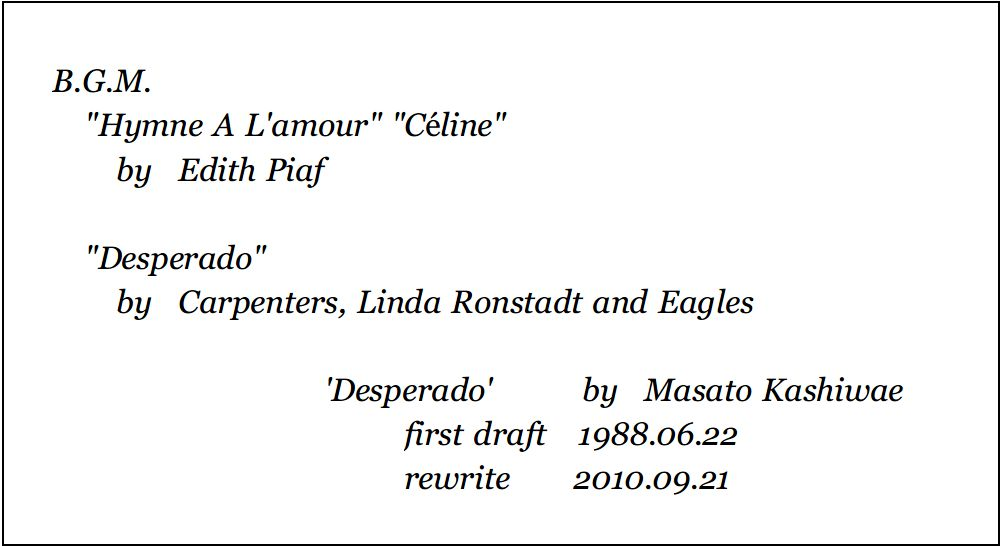

| ACORN vol.1 DESPERADO | |
| 柏枝 真郷 | |
| (2018) | |
DESPERADO
柏枝真郷
クラーク・デラウェア（デス）.........私立探偵
エリザベス・ハウエル........................依頼人
アーサー・ハウエル............エリザベスの息子
テオ・ハウエル..................アーサーの息子
スーザン・ハウエル............アーサーの妻
アンソニー・フォーセット（トニー）
.........アーサーの助手
サミュエル・パーカー.........ハウエル家の執事
アイリーン・ウェルズ.........ハウエル家の女中
ジーン・アスター............新聞記者
ルディ・オーツ...............テオの同級生
フェザー...サンセットポイント町立病院外科部長
シェパード......サンセットポイント署警部
コリー............サンセットポイント署巡査部長
リタ.................................女になりたかった男
ルイーズ・デラウェア.........クラークの妻（故人）
ジェニファー・スミセラム......受付嬢
ジェローム・スウェイン.........弁護士
窓辺は光の洪水だった。もしも、それを「窓」と呼ぶならば。
建築家たちが挙ってビルの外壁をガラス張りに変えていくのは、隠蔽を嫌い、あけすけなほどの明白さを求める風潮ゆえだろうか。クラーク・デラウェアは天井から床まで嵌め込まれた一枚ガラスの前で眼を細め、眼下に広がる街並みをながめていた。
いちめんの青空と焼けつくような太陽のもと、街は大都市によくある二つの極相を見せている。右手から緩やかにカーブし、摩天楼の群れへと向かう何車線もの幹線道路には車があふれ、緑の街路樹に彩られた高級ブティックが軒をつらねる歩道は行き交う人々の活気に満ちている。
一方、左手の、通称「ミラクルロード」は、かつての繁栄が無残なまでに打ち砕かれ、朽ち果てるがままの廃墟だった。
うだるような熱気がこもる通りを歩けば、開け放たれた窓からＴＶの昼メロが聞こえるだろう。ひび割れたコンクリートの壁に寄りかかり、酒瓶を抱えて見果てぬ夢を見ている浮浪者。崩れかけたアパートの中では、娼婦や男娼が金以外の何かを求め、汗で汗を流していることだろう。うらぶれた倦怠感が漂う路地では、ほったらかしにされた子供たちの遊ぶ声が高くこだましているはずだ。
そう
クラークの探偵事務所兼アパートは、ミラクルロードのど真ん中にあったから、それは確実なことだった。
「......懐かしい......」
ふいに横から聞こえた声に振り向くと、いつの間に来たのか、同じようにミラクルロードを見下ろしている青年がいた。
ほっそりとした背中しか見えないが、六フィート四インチもあるクラークの肩くらいの背丈だから、六フィートにやや足りない程度だろうか。無造作にカットした黒髪が、細い首筋や水色のワイシャツの衿を軽やかに撫でている。涼しげなオフホワイトのスーツの上着を片腕に掛け、軽く小首をかしげて、青年はいつまでも飽きることなくそこにたたずんでいた。
空調の効いた室内には、タイプライターを叩くリズミカルな音だけが響いている。この音は廊下を抜け、エレベーターホールまで届いているはずだ。
旧市庁舎の跡地に建つ高層ビルディングの最上階
そのフロア全部を占めるルイス＆スウェイン法律事務所にはドアがなかった。法の垣根を迷い出て、右頬を打った、下着を盗ったと罵られ、敵だからと愛してもらえぬ哀れな子羊から「叩けよ、さらば開かれん」の精神的負担を取り除こうという配慮らしい。
タイプライターを叩いているのは、いつもどおり受付に座った赤毛の女性だった。モノクロームで整えられた待合室にいるのは、クラークと青年の二人だけだ。
インターコムのブザーが鳴った。受付嬢がタイプライターを叩く手を休め、ひと言ふた言返事をすると、クラークを見上げてにっこりと微笑んだ。
「どうぞ、ミスター・デラウェア。お入りください。それと、ミスター・フォーセット
」
その呼びかけに青年が振り向いた。二十代になったばかりだろうか。乳白色の肌は滑らかで、卓越した造形家の優しく繊細な手によって創られた塑像を思わせる顔立ちだった。しかし、長いまつげに縁取られた緑色の眼だけが冷たく、宝石のような玲瓏な光を放っている。
「申し訳ありませんが、もう少々お待ちください」
受付嬢はそう言って、母性愛をたたえた笑みを浮かべ、ソファと雑誌スタンドを手で指し示した。青年が黙ってうなずき、ソファに歩み寄る。
クラークは受付嬢に軽くうなずいてから奥のドアへ向かった。その受付嬢の名前を憶えてはいなかったが、彼女が昨年に流産したとは聞かされていた。
よくある話だ。
ノックもせずにドアを開けると、観葉植物の葉陰越しに、正面の壁に掛けられた三枚続きのパネルが見える。田園風景を描いた牧歌的な絵画にブラインドで微調節された陽光が暖かみを与え、クリームイエローの壁と褐色の絨毯で囲まれた空間は、迷える子羊の気持ちを和ませるはずだ。
そして迷える子羊の救世主
部屋の主は、仕立ての良いミッドナイトブルーのスーツに恰幅の良い体を包み、常に絶やさぬ慈悲心に満ちた笑顔でクラークを出迎えた。
「よく来たな」
ジェローム・スウェインは財布の中身で客を選ばない弁護士の一人だった。選ぶのは客の人間性、そして彼らの置かれている苦境の深刻さだ。その信条は私生活にも反映されているらしく、一人娘が当時、一介の刑事だったクラークを結婚相手に選んだときも、反対しなかったのだった。とはいえ、ジェロームの笑顔は陪審員の心を掴みとらえるため、熟練した役者並みの自由自在さだったから、本心についてはクラークもわからない。
まして、今
「ご依頼があれば、いつでもおうかがいしますよ」
クラークがそっけなく挨拶を返し、向かいのソファに腰をおろすと、ジェロームは笑顔をひっこめ、あからさまに眉をしかめた。
「まともな恰好をしてくるように、と電話で言ったはずだが」
「はて。俺の記憶では『一番まともなネクタイを』と仰ったはずですが」
わざと真面目な表情でクラークはシミだらけのネクタイを引っ張ってみせた。季節外れのクリスマスを彷彿とさせる赤と緑のチェック柄に、トマトケチャップの赤、マスタードの黄色が点々とアクセントを加えている。さらに言えば、ドブネズミ色のスーツは半年以上、クリーニングに出したことがなく、髭はいちおう剃ってあるものの、枯草色の髪は最後に櫛を入れたのがいつだったか、クラーク自身も憶えていない。おそらく先々月、床屋で散髪したときが最後だろう。
「それが、まともなのか？」
「美意識には個人差があります」
クラークは平然と答えた。ちなみに声も嗄れているが、酒と煙草のせいではなく、もともとハスキー・ヴォイスなのだ。一方、ジェロームは世の中が厭になったとでも言いたげな大袈裟な溜息をついている。
「三十歳になっても、反抗期から抜け出せんとは、な」
「価値観の相違について述べただけですが？」
「やはり反抗期か」
ジェロームは呆れ果てたように首をふり、おもむろに座り直した。まっこうからクラークを見据える。「本題に入ろう。つまり、仕事だ」
クラークは逆にだらしなくソファの背に寄りかかった。
「ゴミ箱あさりですか、のぞき見ですか？」
「殺人事件の調査だ」
「墓掘りですか」
「掘り返す必要はない。生きてる人間に質問しさえすれば」
「インタビュアの経験はありませんが」
「仮にも探偵だろう、クラーク。おのれの職務を遂行する努力くらいしたらどうだ」
「犯人を捜せ、なんて仰るわけじゃないでしょうな？」
「もしも、本当に殺人事件ならば、な」
意味深長な響きに、クラークはあらためてジェロームの顔を見直した。
「どういうことです？」
ジェロームは答える代わりに、デスクに載った薄いフォルダから数枚の書類を取りあげ、差し出した。クラークが中腰になって受け取ってみると、新聞の切り抜きをコピーしたもののようだ。
一枚めは昨年の冬
イーストリバー市の北、同じ州内のコートランド郡にある地方大学の教授選考に絡む贈賄事件について。二枚めは今春、その贈賄事件で賄賂を受け取ったとされる疑惑を持たれた教授の自殺事件について。三枚めはその補足記事だった。どれも扇情的な書き方だが、確証のなさゆえか「？」と「！」の洪水だ。
「これは
どこのイエローペーパーです？ こんな派手な事件なら記憶に残ってもいいはずですが」
「一般紙には載らなかった。贈賄事件はその教授に無関係な詐欺に過ぎず、大学側もその教授の家も公表を抑えられる力を持っていたからな。自殺事件についても、一般紙は簡単な訃報を乗せただけだ。毎日、こうしているこの時間にも本物の殺人事件が起こり、一人や二人が殺された程度ではニュースにもならないこの国では、地方大学の、さほど有名でもない教授の死ひとつくらい『死者に鞭打つな』のひと言で簡単に伏せられるだろう。その記事は、その大学があるサンセットポイントという街の
学生崩れというか、過激な連中が地下に潜って『我こそは正義だ』と主張するための新聞だ」
ジェロームは、やっと興味を持ち始めたクラークの眼を見据え、説明を続けた。「選考委員をやっているくらいだ。その教授の家はなかなかの名家で
教授の母親が、私の父の代からの顧客なのだ」
「......だんだん話の内容がわかってきました。つまり、この
アーサー・ハウエルという教授が自殺したのではなく、殺されたのではないか、ということですか？」
クラークは記事に添付された写真に視線を移した。書籍の著者近影にでも使われそうなポートレイトだ。顔の輪郭は四角く、顎が割れているので、頑固そうにも見える。彫りの深さゆえか落ち窪んで見える眼は青だ。髪が銀色に見えるのは白髪が交じっているからか。
「少なくとも母親はそう考えている」
「何歳です？ その母親
ハウエル教授が五十一歳だから......」
「七十前半のはずだが。若いときに結婚したそうだから」
「......だんだん俺の役割がわかってきました。ボランティアですか。老婦人の妄想につきあって、あちこち駆けずり回ってみせればいいんでしょう？ そして、やっぱり自殺だった、と納得させる」
「おまえ次第だ」
「だが、警察はもう『自殺』で処理したんでしょうに」
「だから、おまえ次第だ。もしかしたら警察よりも頭の出来がいいことを証明できるかもしれん」
「そんなもの証明したくもないですな」
「彼女の希望だ」
「正気の沙汰じゃない」
「彼女は正気だ。おまえの言う『価値観の相違』とやらだな」
あっさりとジェロームが言い放った。さりげない意趣返しに、クラークは日頃弁舌を商売にしている相手をからかったことを後悔していた。
いつもこうなのだ。それなのに顔を合わせるたびに楯突きたくなるのは、まだ反抗期から抜け出していないのだろうか。幼い頃に父を亡くしたクラークにとって、義父のジェロームは、ある意味で実の父親以上の存在だった。
クラークは白旗を掲げるかわりに、両腕を掲げてみせた。
「了解。悪いときに悪い人のもとで働いていた俺の不運だと諦めましょう」
「幸運だと思え。これで当分は餓死する心配もないうえ、ゴキブリだらけの汚い街から離れられるのだ」
「......俺は気に入ってます。あの街が」
「ルイーズが生きていたら、あんな街に住む気にはならなかったろうに」
ジェロームは依然としてクラークを見据えたままだったが、その眼に浮かんでいたのは哀しみの色だったかもしれない。「昔は大男だったのに
今は、ただの痩せっぽちの、のっぽだ」
「......人は変化します。遅かれ早かれ、良かれ悪しかれ」
「ならば、状況を好転してみせろ」
突き放すように言ってから、ジェロームはインターコムのボタンを押した。「ジェニー、ミスター・フォーセットをお通ししてくれ」
そう命じたのち、かすかな溜息をもらす。無理もない。最愛の娘がもうこの世になく、その婿ときたら生きる屍も同然なのだから。逆縁の不孝を背負っても、毅然と背筋を伸ばしていられる不撓不屈の精神の持ち主だからこそ、なおさら今のクラークが不甲斐ないのかもしれない。
「ジェニー......なんて姓でしたっけ？」
クラークは眼を背け、おどけた声で尋ねた。「あの受付の女性は？」
「ジェニファー・スミセラム。言っておくがミセスだぞ」
「知ってます。死に打ち勝つ生命力に敬意を表し、あとで花束でも贈ろうかと」
「嫌味か？」
探るような眼でジェロームが見た。
「いいえ、本気です」
クラークが真顔で答えたとき、ドアが開き、先ほどの青年が姿を現した。上着は着ているが、緑色の眼には冷たい光を宿したままだ。静かにジェロームとクラークをながめながら、後ろ手でドアを締め、しなやかな身のこなしでジェロームのデスクに歩み寄った。
タイル貼りの床なのに、足音がまったく聞こえない。ジェロームが立ち上がると、青年はさりげなく握手の差し出した。
「アンソニー・フォーセットです。ハウエル家から参りました」
「ミセス・エリザベス・ハウエルからお伺いしてます。なくなられたハウエル教授の助手をなさってらしたそうですな」
「はい」
少しも臆さず、緑色の眼でジェロームを見返して答えたアンソニーが、視線をクラークに滑らす。クラークはだらしなくソファにもたれたまま、にやついた顔で見上げてみた。
ジェロームが軽く咳払いする。
「見かけはゴロツキですが、中身はそれほど悪くはないはずです」
「では、この方が？」
「ええ。クラーク、礼儀をわきまえずに恥をかくのはおまえ自身だぞ」
「......面の皮の厚さだけは自慢できますが」
しゃあしゃあと答え、クラークはのそりとソファから立ち上がった。「迎えの使者か。地獄からか、それとも天国からか」
不躾にじろじろと見つめたのだが、アンソニーはものともせずに薄く笑った。
「たぶん、地獄でしょう。僕は無神論者ですから」
「同類だな」
クラークも薄く笑い返し、先にドアへと向かった。
荷造りはわずかな時間で済んだ。クラークは軽いボストンバッグを片手に雑然としたアパートを見回してみた。
目に見えぬ湿気がコンクリートの壁をスポンジに、埃を泥に変えていた。でたらめに置かれた家具類はどれもこれも化粧合板が剥げかけ、合成繊維のカーテンは色あせて破れかけ、汗じみたリネン類は煙草の灰でまだら模様になっている。
貴重品はおろか、大切なものなど一つもない。銃器類もない。泥棒すら寄りつかないだろう。クラークは鍵もかけずに部屋を出て、錆びた鉄階段を下りた。四階建てで三階と四階は空き家、一階は探偵事務所になっているが、こちらも廃屋同然だ。調査上の記録
たとえば浮気調査などといった個人のプライバシーに関わる記録もない。クラークはメモを取らず、調査報告書を一通だけ書き、依頼人に渡した段階で調査完了とする習慣だからだ。
コピーがない
それはすなわち、依頼人にとって最も安心できることかもしれない。秘密が外部に洩れる心配をしなくて済むからだ。クラーク自身も、他人の人生に深入りしたくないから、後腐れのないこの方法が一番だった。よって事務所に泥棒が入っても、盗まれて困るものはない。
クラークは事務所を振り返りもせずに、通りへ出た。容赦のない真昼の太陽にじりじり焼かれたアスファルトに火傷しそうな足を動かし、粘ついた空気の中を泳ぐように歩く。ゴミ捨て場のような廃墟には、雑音混じりの昼メロが流れている。なにもかもが淀んだ街の中で、元気なのは子供たちの声だけだ。
イーストリバー市西区ユアランド四丁目八番街
くわえ煙草で歩きながらミラクルロードの外れまで来たとき、甲高い声が聞こえた。
「ちょっと、あんた。もう一回言ってみなよ！」
生え際から黒い地毛がのぞくブロンドの髪を振りながら、アンソニーに食ってかかっているのは、通称リタだ。汗で白粉が剥げ落ちた顔が怒りに真っ赤になっている。
「どうしたんだ？」
クラークが声をかけると、リタはけばけばしい花柄のサンドレスを翻し、細いヒールのサンダルを鳴らして駆け寄った。
「デス！ いいところに来てくれたわ。聞いてよ、この坊やがなんて言ったと思う？ 『こんな腐った場所から抜け出したいとは思わないのか』だって！」
「腐った場所、か」
端的な表現だとクラークは内心で苦笑したが、リタは棒きれのように細い腕をクラークの腕に絡ませ、アンソニーをにらみつける。
アンソニーは顔色を変えず、熱気すらも瞬時に凍りつきそうな冷ややかなヴェールをまとって、ひとり立っていた。リタが噴出した怒りを投げつける。
「そりゃ、あんたみたいなお上品なお坊ちゃんから見たら、アタシたちなんて、生ゴミみたいなものでしょうよ。でも、生ゴミなりに必死に生きてるんだから。ねえ、デスったら！黙ってないで、何か言ってやってよ！」
「
リタ、おまえ、こいつ相手に商売っ気出したんじゃないのか？」
クラークがにやにや笑いながら、またしても不躾な視線をアンソニーに投げると、リタがかすかに怯んだ。
「そ、そりゃまあ
だってさ、この暑さじゃない？ 商売あがったりなんだもん。真っ昼間からどうかとは思ったけど、人は見かけによらないものだし。でも、アタシとしては最上級のお誘いをしたのよ？ なのに......」
「言い訳はしないよ」
アンソニーが静かに答えた。「ただし、僕は『腐った場所』とは言ったけど、人間まで腐ってるとは言ってない」
「それこそ言い訳じゃないの！」
「リタ、諦めな」
クラークは仲裁しようとはせず、ただ軽くリタの肩を叩いた。「こいつは俺のほうの客だから。ジェロームから回ってきた客だから、おまえには無理だよ」
「ジェロームの？ どうりで場違いな......」
リタが驚いたようにつぶやいた。仕方なく腕を放そうとして、クラークの手にしたバッグに気づいたらしい。「......どこか......行くわけ？」
「お上品な場所へ、お仕事に」
「すぐ帰ってくるんでしょ？ ねえ」
「帰っては来るが、すぐかどうかは成り行き次第だな」
挨拶代わりに片手を振りながら、クラークはアンソニーに歩み寄った。アンソニーが黙って踵を返す。並んで歩く二人の背後から、リタの叫ぶような声が聞こえた。
「デース！ 帰ってこなきゃ駄目よ！」
裏返した声は淀んだ空気を貫き、ひび割れたコンクリートに反響した。
「見上げた仲間意識だ」
大通りへ出る交差点にさしかかろうとしたとき、アンソニーがふいに口を開いて言った。「素敵なおカマさんですね、彼」
「......よく......わかったな。男だって。俺でさえ最初は間違えたくらいなのに」
クラークが仰天すると、アンソニーは軽く肩をすくめた。
「露出する部分が多い夏は大変でしょうね」
蔑むわけでもなく、ただ淡々と口にする。壊れた消火栓の背後、錆びた鉄パイプが突き出し、崩れかけた壁に赤いペンキのスプレーで描かれた通りの通称名を眼で追ってから、また独り言のようにつぶやいた。「奇蹟 の街 ですか......」
「そう。腐った街に相応しいだろう。奇蹟でも起きない限り抜け出せない街」
「......逆説的に当を得てますね」
涼やかな眼を細め、アンソニーは今にも信号が赤に変わろうとする交差点を渡っていった。
目の届く限り蒼一色に輝く空の向こうに、林立する摩天楼が鋭い鑿 で彫られたように、くっきりと浮かび上がり、陽炎のなか、ゆらゆらと揺れていた。蜃気楼でない証拠にと、窓という窓が陽光を反射する一方、アスファルトに闇のように濃い影を落とす。熱波があおる暑気の中、そよとも風が吹かないのに、摩天楼だけが揺れて見える。
通行人たちが歩行者用信号を無視して横断歩道を渡るのも見慣れた風景だが、クラークはのんびりと煙草を吹かしながら信号が変わるの待った。依頼人の息子だとかいう教授は、三ヶ月も前の春に亡くなっているのだ。数分早く着いたとて、生き返るわけでもない。数分遅れたとて、手遅れになるわけでもない。
やっと歩行者用信号が白い「WALK」の文字に変わった。煙草を靴底で火を消してから、クラークは大股で
しかしゆっくりと横断歩道を渡った。
大通りを進み、ジェロームのオフィスがある高層ビルを横目に一ブロック進んだ先に立体駐車場がある。まるで廃車工場のような、鉄骨が剥き出しになった実用一点張りの外観だ。周辺の洒落たブティック街にはそぐわないのだが、路上駐車すれば昼間でも数分で車輌盗難に遭うのが、この市の現状だ。
平日の昼間ゆえか、駐車場はほぼ満車に近いほどだった。その一階、窓口のあるボックスの横で、アンソニーが待っていた。
「今、降ろしてもらう手続きをしましたから」
涼やかな眼で上空を見上げ、ちょうど降りてくるリフトを指さす。
「へえ......。」
クラークは短く口笛を吹いた。「車には疎い俺でも、ベンツくらいはわかるぜ。大学教授の助手ってのは、そんなに給料がいいのか？」
「これはアーサーの車です。僕は運転手も兼ねてましたから」
「主が死んでも車は残る。遺跡みたいなものか」
「車に疎くても刑事が務まる。それと似てますか」
クラークの皮肉に軽く応酬して、アンソニーは運転席に回ると、キーでロックを外して乗り込んだ。クラークは反対側を回って助手席に乗り込む。
「務まらなかったから、私立探偵をやってるんだろうに」
「......ああ......」
薄茶色のサングラスをかけながら、横目で見たアンソニーが、言葉尻を濁し、エンジンをかけた。排気音に消された次の言葉は、「ごめんなさい」だったように思え、クラークは後ろめたさを感じてしまった。あやまる必要などないのに。
「アーサーの身長は？」
脚をもてあましてそうなので、クラークがシートの位置を調節すると、
「......五フィート十一インチ......僕と同じくらいです」
「俺が規格外なだけか」
クラークは苦笑したが、アンソニーはなぜか妙に頬をこわばらせて車を発進させた。タイヤの動きはスムーズで揺れもない。車のひしめく大通りに出るときも、苦もなく車列に割り込んだ運転ぶりから見て、かなり慣れているようだ。
「これならパトカーの運転もできそうだ」
クラークはお世辞でなく感心して言った。ハンドルを握る腕の動きも余裕があり、運動神経も良さそうだ。「運転免許はどこで？」
「正式な免許はサンセットポイントで。その前は
まあ、いろいろと。品行方正な少年ではなかったので」
「それは俺も同じだな」
クラークは、あらためてアンソニーの横顔を見てみた。車の運転以上に滑らかな乳白色の頬と、整った顔立ちは「ハンサム」より「美しい」という表現のほうが相応しい。一見、もてそうだが、比較されそうで敬遠してしまう女性のほうが多いかもしれない。
ひ弱さはないが、精悍さや野獣のような男臭さとも無縁だ。宗教画の天使像にありがちな中性的
な魅力
品行方正な少年ではなかったと言っていたが、クラークの、喧嘩に明け暮れた少年時代とも違うだろう。ある種の男には、特別な魅力のあるタイプか。
「
『デス』って、何の略ですか？」
ふいに飛んできた問いかけに、クラークは慌てて視線を外した。「変わったミドルネームですね」
「ミドルネームではなく、ニックネーム。あの街に転居したばかりの頃、リタが俺の名前を聞いて、こう言ったんだよ。『飛べないスーパーマンが川に落ちたような名前ね』」
「クラーク・ケントにデラウェア川ですか」
他愛ない駄洒落だが、アンソニーの頬がわずかにほころんだようだ。
「たぶんね。だから俺はこう答えた。『俺は正義の味方ではない。無法者 （DESPERADO）だ』」
「
少し意味が違ってませんか？」
「どこが？」
「退職した保安官の全員がアウトローになるわけではないでしょう。でも、スーパーマンの衣装よりカウボーイ・ハットのほうが似合いそうですが。ここが西部でなくて残念ですね」
「カウボーイねえ。そういえば、一昔前、西部以外の街角に、やたらとカウボーイ・ハットをかぶった奴が立っていた時期があったな。映画から来た一時的な流行現象で。牛を追うには不適当な時間だったが」
「......たぶん、真夜中に活動する牛がいたんでしょう」
つぶやく声は冷静だったが、アンソニーのハンドルを握った手がわずかに堅くなったように見えた。せっかく、なごみかけた雰囲気も逆戻りだ。口にした言葉の棘に、心がささくれるような不快感を感じたのはクラーク自身も同じだったが、冷房の効いた広いシートにゆったりと体を伸ばすことで気を紛らわそうとしてみた。
これでいい
そう、これでいい。謝る必要もない。
誰にも忘れ難い過去はある。傷口に触れるのを恐れるのも、鋭い棘で突き合うのも、心の捌け口を求める本能だろう。真実を饒舌と沈黙の下に隠し、冗談と嘘で糊塗して、見せかけだけ、なごやかに暮らす方法もあるが、クラークの性には合わない。喧嘩して突き放してしまったほうが気が楽だ。
クラークは助手席の窓へ視線を向け、逆光線の中を流れていく大通りをながめた。建物と、車と人と
どこまでもどこまでも、地の果てまでも永遠に続く葬列のように思えてしまったのは、ゆらゆらと路面から立ち上がる陽炎のせいかもしれない。
北へ向かう車は高速道路を走り抜け、また別の高速道路に乗り入れ、走り続けた。途中、ドライブインに三十分ほど寄ったのが唯一の休憩といえるだろうか。同じ州内でも、青空を隠す摩天楼が消え、緑の芝生を裾模様にした木立の中に、可愛らしい一戸建ての住宅が点々と広がる景色が旅情を感じさせる。
出発してからおよそ五時間
うだるような暑さがやっと和らぎはじめ、傾きだした陽がオレンジ色に空を染めようとする頃、やっと高速道路の標識に「コートランド郡」の文字と「三十マイル」の表示が出現した。残り三十マイル
小一時間か。
遠い緑を眼に映しながら、クラークは長い沈黙を破った。
「アーサー・ハウエル教授って......どんな人だったんだ？」
過去形を用いた質問に、アンソニーが少し間を置いて答えた。
「
世俗に疎い象牙の塔の住人」
「学者によくあるタイプか。塔の外で戦争が起こっても気づかない。だが、医学部ってことは、医者でもあるんだろうに、それで病人を治せるのか？」
「臨床医としては並み以下かもしれません。アーサーの地位はもっぱら病理学者としてのものです。もっとも、戦争が起こっても気づかない、というのは当たってますね。あの贈賄事件なんて、寝耳に水だったでしょう」
「教授選考に絡んだ事件か。あれがただの詐欺だというのは？」
「
どの程度、スウェイン弁護士から話を聞きました？」
「限りなくゼロに近い。ジェロームの方針でね。なにごとも先入観なしに判断すべきだ、という彼の持論に基づき、あそこの法律事務所から依頼された調査員は、常に目隠しされて闇の中に放り込まれることになる」
「......候補に挙がっていた准教授に、アーサーの名前で手紙が届いたそうです」
アンソニーが考え込みながら答えた。「五万ドルを用意の上、指示に従えば、教授になれる
そんな文面だったそうですよ。その准教授は指示に従い、五万ドルを贈ったけれど、選考の結果、選ばれたのは別の准教授でした。それで警察に駆け込んだそうです。警察は手紙を検査し、サインを筆跡鑑定して、偽物だと判断しました。実際の話、ハウエル家にとって五万ドルは大金ではないんですよ。それで終わりです。犯人はわかっていません」
「新聞に載っていた話と、そう変わらんな」
「......」
アンソニーがかすかに息を呑む音が聞こえた。「あなたは
知ってて訊いたんですか。そうですね
警察も僕を疑っているようでした。無理もない。教授に近い者で、素性に疑問があるのは、僕だけですから。どこの馬の骨とも知れない」
「
君の仕事は？」
「雑用全般です。アーサーは食事の最中ですら、常に考察し続けている
研究以外の雑用は一切、排除したがっている、そんな人でした。論文のタイプ打ちから郵便物の整理まで
そう、僕があの偽手紙を最も書きやすいポジションにいました。僕にとって五万ドルはたしかに大金ですしね。人を見たら泥棒と思え。自分の品性下劣さを他人にも当てはめて、同列に引きずり落とすことで安心なさりたいのなら、どうぞご随意にお疑いください。もっとも、警察がすでに僕の銀行口座くらいは調べているでしょうけど」
やや早口だったが、アンソニーの声は明晰で、ただ冷たかった。その口調には怒りも動揺も、疑われることに慣れきった諦めもなく、疑う相手への軽蔑だけが込められているかのようだった。
クラークは質問を続けた。
「君はボスが自殺したと思うのか？」
「......わかりません」
「死の数日前に変わった様子は？」
「特に何も......。仕事も通常どおりでした」
「君が最後に彼を見たのは何時頃？」
「夜の八時です。夕食後」
何度も警察に聞かれたらしく、即答だった。「次の週にボストンでの学会の予定が入ってたので、その準備はできているのかという確認を」
つまり、もしも自殺であれば、衝動的なものだったのだろうか。
「アーサーが死んだと知ったのは？」
「朝です。七時頃、執事に起こされて」
「......執事......」
えらく古めかしい職業名だが、使用人が大勢いるのであれば、まとめ役も必要なのだろうか。「それで？」
「警察が来るまで電話番を頼まれました」
「そうじゃない。アーサーが死んだと聞かされて、どう思った？」
「驚きました」
「それで？」
「......それだけです。何も考えられなくて」
「ハウエル教授の家族構成は？」
「アーサーの母親、エリザベス・ハウエル。ハウエル家の長で、スウェイン弁護士の依頼人
つまりは、あなたの間接的な依頼人ですね。アーサーの妻、スーザンと息子のテオ。スーザンも医者です。テオは来月から高校へ進学します」
「一応、妻子がいるのか。それで、君は住み込みの助手
単なる助手だったのか？ それ以外に
」
「何を仰りたいのか知りませんが、アーサーの人間性を疑う前に、ご自分の品性を反省なさったほうがいいかと思いますが」
アンソニーの口調がますます辛辣になった。クラークはとぼけて訊いた。
「どんなふうに？」
「アーサーは少なくとも、真っ昼間からオカマにしなだれかかれるような真似はしませんでした」
「それは差別だ。リタだって自分の意志で相手を選んでるんだぜ」
「そう。デスペラードがお好みなんでしょう。決めました。僕もデスを呼ばせていただきます」
「どうぞご随意に」
クラークは答えを投げ出し、シートにだらしなく体を投げ出した。断りもせずに煙草に火をつける。
これでいい
憐れまれるよりは蔑まされたほうが、ときとして気が楽だ。高慢も卑屈も、プライドという同じ樹から枝分かれしたものだから。そしてそれゆえ、他人のプライドを逆撫でし、不愉快にさせるのだ。
けぶる空気にアンソニーの冷涼な横顔が浮かんで見えた。運転に注意を向けているようだが、クラークの視線を気にして身を固くしているようにも思える。ハンドルを握る手にも、苛立ちが見えた。
「僕の顔を観察なさるより、景色の観察でもなさったほうが、よほど建設的なのでは？ あと二、三十分もすればサンセットポイントです」
ついに業を煮やしたのか、アンソニーがつぶやいた。それでも冷静さを失っていないのは、場慣れしているからだろうか。
ふと、クラークは、この青年の別の表情を見てみたいと思った。だが、口にはせず、言われるまま窓の外へと向き直った。
車は高速道路を降り、商店街になった大通りを抜けていく。商店街とはいっても、二階建ての小さな店舗が連なったショッピングモールで、煉瓦色の石畳が続いた先にあるのは、駅だろうか。高架線の橋桁も見える。
おりしも、赤い列車が、橋桁の上を西へ西へと走っていった。コートランド郡の中だけを網羅するローカル線で、イーストリバー市へ直行する路線は、この郡にはなかったはずだ
と、クラークは州の地図を脳裏に描いてみた。郡だけで六十二もあり、北はカナダにも隣接する広大な州だから、咄嗟には名前を思い出せない郡さえある。コートランド郡も、今日の昼間に新聞記事を読むまでは、忘れていた名前だ。
サンセットポイントは名前すら知らなかった。
「ここはもうサンセットポイントなのか？」
「......ええ。街の外れですが」
ハンドルを切りながら、アンソニーが答えた。「太陽が沈む地点」という名前から、西の外れにでもあるのかと想像していたが、違うようだ。観光地でもなく、周辺には畑や林が広がり、医療機器で有名なメーカーの看板を掲げた工場が点在しているから、工場に勤める人たちの住宅街だろうか。
車が幅の狭い道へと入っていくと、少しずつ景観が変化していった。それは映画フィルムを逆回しにしたように、時の流れを遡っていくのに似ていた。
見慣れた近代建築が姿を消すにつれ、古めかしい煉瓦造りの建物が姿を現し、いつしか周辺に並ぶのはそんな重厚な色合いの建物ばかりになっている。街路の並木が次第に太く、次第に年輪を増していく。それがついに大木に近い老樹となり、伸びた枝々が綺麗な弧を描くアーチになって続く通りに入ったとき、蝉の鳴き声が聞こえた。
街路はいまだ石畳で、タイヤを弾ませる振動が伝わってくる。歩道の縁石も切石で、路面電車のレールが残り、停車場では、青いペンキが剥げかかった箱状のブースが雑草に覆われている。
落陽が黄金に輝き、古色蒼然とした街をさらに古めかしく見せていた。物陰が遠くまで伸びている。人々が家路を急いでいる。
鐘が、鳴った。
一度、二度、三度
鐘が鳴った。晩鐘の音は石畳に煉瓦に跳ね返り、黄昏染まる街なかにこだました。重々しく厳粛なその響きは、いつまでも余韻となって漂い、消え去らないようにも思えた。
「あれは大学の時計台が鳴らしているんです」
アンソニーが片手をハンドルから離して指さす。小高い樹々や、切り妻屋根の家々から突き出た煙突や、それら突起物の向こうに時計台のようなものが見えた。
古き佳き時代がそのままここにあった。その時代と違うのは、この街自体が年老いている、ということだろうか。その頃に建てられたばかりで新品だったものが、風雪にさらされ、歳月を重ねた威厳とともに存在していた。見ようによっては滑稽なほど時代遅れな、しかし、懐かしさを醸し出す街だった。
通りを左折し、いっそう細い道に入る。真新しいバス停の横に、博物館にでもありそうな旧型の電話ボックスが並んでいる。しばらく進むと林になり、錯綜する赤い木漏れ陽と影が、まだら模様を映し出した。
明度が矢継ぎ早に変わり、蝉時雨が降りしきる。二台の車がやっとすれ違えるほどの狭い林道で、道ばたに止められた灰色の乗用車を追い抜く際は、車体をこすらないよう、アンソニーも慎重にハンドルを握っていたようだ。混乱した視覚と聴覚に、思考まで混乱しそうな林を抜けると、一瞬にして広々した芝地が眼前に開けた。
優美な模様を描いた鋳鉄製の柵がどこまでも続く向こうにも、芝生が広がっている。樅 とおぼしき針葉樹、咲きこぼれる花々、その奥に、何という造りかは知らないが、時代がかった邸宅があった。
手の込んだ飾りがついた高い門を抜けると、玉砂利を敷き詰めた車道が玄関脇のポーチまで続いている。幾本かの老樹の太い幹が守る屋敷の壁は、何度も塗り直し、最近もまた塗り直したと見えるペンキの凹凸が影をつくる白塗りの木製だった。
見事な彫刻を施された円柱が四本、大きな玄関を守るようにして屋根の高さまで聳えた部分だけを見ると、古代神殿かと錯覚しそうだ。上部に扇形の窓がついた玄関扉が重々しく開かれ、黒いスーツで身を固めた総白髪の男が姿を現した。
「お帰りなさい。トニー」
「ただいま、サミュエル。例のお客人をお連れしたよ」
運転席の窓を開けたアンソニーが声をかけると、男はいかめしくうなずき、車の反対側を回って助手席側のドアを開けた。
「ようこそ、いらっしゃいませ。私は当ハウエル家の執事、サミュエル・パーカーでございます。どうぞ、サミュエルとお呼びください。大奥様がお待ちかねですので、早速、ご案内させていただきます」
クラークは驚きを隠しきれず、促されるまま車から降りながら、つぶやいた。
「本物の執事にお目にかかったのは、初めてだ」
大奥様
ミセス・エリザベス・ハウエルは二階の居間でクラークを待っていた。
ひっそりと静まり、重い生地のカーテンが細く高い窓を覆う、そのぼうっと、ほの暗い部屋の中で、背筋をしゃんと伸ばして長椅子に腰掛けた姿は、半世紀前から変わらぬものにも思えた。
現代的な改装工事がなされているのか、この古い部屋にもエアコンディションのうなる音がした。老婦人は肌寒さすら感じられる空気をまとい、衿の高い喪服めいた黒いドレスからつきだした白銀の頭を、きっちりとクラークへ向けた。
「座ったままで失礼しますよ。この頃では車椅子も疲れてしまいましてね」
嗄れた声が深く豊かに響き、圧倒されそうだ。すっかり肉が落ち、筋の浮き出た手を振った先には、ふかふかのクッションでできた特別製の車椅子が置かれている。老婦人は、猛禽に似た鋭い眼差しでたっぷり一分以上もクラークを観察してから、尋ねた。
「あなたが、スウェイン弁護士の息子さんですか」
「
義理の息子です」
クラークが訂正しても、彼女は表情を変えなかった。
「存じております。あなたの奥様が
そう、もしかしたら生まれたかもしれないあなたのお子様と一緒に亡くなられたことも。けれども、そんな事情は私には関係ありません。『信頼できる調査員を』とスウェイン弁護士に頼み、彼があなたを紹介してくれました。ならば、私もあなたを信頼しましょう。見せかけがどうあれ
そうです。この歳になると、もはや見せかけの美しさなど何の価値もなくなります」
ひと言ひと言を区切るように言葉をつむいだのち、老婦人は背後の壁にかけられた絵画を振り向いた。
門外漢のクラークでも知っている絵だった。暮れなずむ大地に立ち、敬虔な祈りを捧げる農民たちには、タイトルどおり厳かな鐘の音が聞こえるのだろうか。あまりにも有名な、ミレーの『晩鐘』
しかし、よく見ると、その絵は緻密な飾りのついた額縁におさめられてはいたが、カラー印刷技術を駆使した安物のコピーにすぎなかった。
「ただのコピーです。本物は手の届かないところにありますからね。それでいいのです。この絵は一個人が所有してはいけないものです。そして私はこのコピーを通し、本物が表現しようとしている本質を見て感動を得ます。どのような感動かは説明不要でしょう。私にも毎晩、この街の晩鐘の音とともに祈るのだと申せば、おわかりでしょうか。昔は
そう、とても若い頃は見せかけに騙され、信仰心もなく
今でもさほど敬虔なわけではありませんが、ときには祈りたい気持ちにもなります」
老婦人はクラークへ向き直り、おもむろに暗唱した。「『それゆえに、人を遣わし誰がために、かの弔鐘は鳴るのかと尋ねるなかれ。そは汝がために鳴る』
ご存じですか？」
「
原典ではなく、ヘミングウエイのほうなら、多少は......」
「そうですか。でも、毎晩鐘は鳴るのに、あの子のためには鳴りませんでした」
「......なるほど」
確かに、自殺者のための弔いの鐘は鳴らないだろう。可哀想なアーサー・ハウエル。
「あの子が自殺するはずはありません」
きっぱりと断言する声が暗がりに不気味に響いた。「あの子は死と向き合う職業にいながら、生を見つめていました。だからこそ、研究一筋に打ち込んでいたのです。自ら死を選ぶ理由がありません」
「......理由ですか......」
クラークは刑事だった頃を否応なく思い出した。自殺者の近親者や友人がそう言うのを、うんざりするほど何度も聞いてきた。そして誰もが訊くのだ。なぜ？ なぜあの人は死んだのですか？ そのたびクラークは胸の内で怒鳴っていた。理由を俺に問うな。死者本人に訊いてくれ。
「あの子は殺されたのです」
ふたたび断言する声が聞こえた。しかし、結論だけを何度も繰り返し噛みしめて、今やそれ以外にすがるしかないようにも思えた。仮定だけでは証明にならないのに。「捜してください、犯人を。あなたを信頼します。無理な頼みだとは百も承知です。お願いします。どうか
」
老婦人は「お願いします 」を何度も繰り返した。クラークはさっさと「ＮＯ」と答えて踵を返し、この場を立ち去りたいと思った。しかし、なぜか足を動かすことはできなかった。
「
努力は、してみます」
口が勝手に動いていた。「結果は保証できませんが」
「それでいいのです。この世で最も無意味なことは、夢見ていながら、実現への努力をしないことです」
高みを夢見て何もせず、成り行きに任せること
確かに怠惰で無意味だが、心地よいことでもある。そして、いつしか人生の夕暮れが訪れるのを待つ。
だが、この老婦人はそんな人生を送ってきたのではなかったのだろう。肉の落ちた皮膚に刻まれた深い皺の一本一本がそう語っていた。
「
やってみます」
クラークは答えた。もしも、この老婦人が元気に歩けるのなら、自力で犯人を捜すだろう。ありとあらゆる手段を遣い、地の果てまでも。そして歩けないが、金があり、人を雇えるから、クラークに頼んだのだ。
「ありがとう」
老婦人が初めて微笑んだ。そしてクラークは、彼女の代理人になった。
「お引き受けいただきまして、ありがとうございます」
居間から廊下に引き返して暗い廊下を辿り、吹き抜けの玄関ホールを見下ろす階段へ戻ったとき、背後から執事が言った。老婦人との会見中、家具の一部であるかのように溶け込み、黙ってたたずんでいた執事は、やっと人間であることに目覚めたかのようだった。
「正直に言って、時間と金の浪費だとは思うが」
クラークが煙草に火をつけ、ひとごこちつくと、執事は沈痛なおももちで首を振った。
「それでも、大奥様には必要なのでございます」
「
まあ、自殺されたほうにしてみれば、それ以上の拒絶はないからな」
「大奥様は旦那様を心から愛してらっしゃいましたから」
「溺愛していたのか？ 必要以上に過保護だったとか」
「親が愛情のあまり、傍目には愚かなほど過保護になるのは、よくあることかと存じますが」
「アーサーはどう思っていたんだろう？ 鬱陶しいとは思わなかったんだろうか。一人前の大人、それももう五十歳になる息子なのに、いまだに『あの子』呼ばわりだったが」
「いいえ。ごく普通の母子のようにお見受けしました。たしかに、確執のようなものがなかった、とは申せませんが......」
「どんな？ 忠義なのはいいが、そのもってまわったような表現ではなく、ざっくばらんに、本音でも言ってくれないか」
「
都会のかたは、歯に衣を着せぬ物言いをなさいますね」
執事は穏やかな眼でクラークを見た。クラークは手摺りに寄りかかり、煙草を吹かしながら執事の答えを待った。
「忠義心など、あなたから見れば時代錯誤なのでしょう。ですが、この古い街では必要なのです。いえ、今はもう廃れかかってはいますが
そう、今から二十数年前には、なくてはならなかった必須事項でした。使用人は己の分をわきまえて、間違っても主人に恋をしたりしてはいけなかったのでございます」
「......身分違いの恋、ってわけか？ 驚いたね。この国のインスタント階級社会にも、まだそんな話があるとは」
「建国わずか二百年。ですが、すべての国民が建国の日に生まれたわけではないでしょう。二度と帰れぬ遙かな故国の因習を引きずっていたとしても仕方のないことです」
執事という職種もその因習のひとつか。クラークは彼に、生きた化石を見る思いだった。
「つまり
アーサーは使用人と恋仲になった。しかし許されなかった。母親のエリザベスが反対したから。そういうことか？」
「禁忌でした。仕方のないことです。とても気立てのよい女中で、大奥様のお気に入りでしたが
」
「かわいさ余って憎さ百倍。よくも大切な息子をたぶらかしてくれたものだ、と
」
「あなたはそうやって嘲 てらっしゃいますが、転ばぬように、つつがなく暮らせるようにと配慮するのも親の役目。この街で、女中を次のハウエル夫人にするわけにはいかないと、大奥様も断腸の思いだったに違いないのですよ」
「『違いない』ね。推定で言い繕っても、その女中の慰めにはならんだろう。つまりはクビになった？」
「......はい」
「それで、アーサーは？ ママのお人形のままだったのか？」
「......いろいろありましたが、最終的には諦めになったと思います。大旦那様がお亡くなりになっていたので、次の当主としての」
「自覚ね。安っぽい恋をしたもんだ。じゃあ、今の奥さんは大奥様のお眼鏡にかなった家柄の出身なわけか」
「いえ......。『中流の』の申しますか、普通のご家庭でお育ちになりましたが、医学生でしたので......」
「教え子に手をつけたのか。しかも女中だと駄目で、女医ならいいのか。他人のための仕事という点では同じだが」
「たしかに同じですし、職業に貴賎はありません。ですが......そう、質の問題かと存じます。それに五年もの歳月が経ったあとでしたから」
「詭弁にしか聞こえないね」
クラークは小馬鹿にしたように笑い、根本近くまで燃えた吸いさしを床に落として靴底で消した。ダークレッドの絨毯は焦げなかったが、潰れた吸い殻の周辺も灰が飛び散っている。執事はかすかに眉をひそめ、片膝をついて吸い殻を拾った。「その女中の名前は？」
「アイリーン・ウェルズです」
体を起こしながら執事が答える。
「見事な即答だ。あんたも二十数年、気にかけていたんだな」
「......」
執事が吸い殻からクラークへと視線を移した。しばし顔を見つめてから、やっと合点がいったようにうなずき、口元をほころばせる。「お見事なのは、あなたのほうでしょう。忍耐強さでは誰にも負けまいと密かに自負しておりましたが
ついに本音を白状させられてしまいました。さすがに元刑事
それとも、これがあなたの流儀ですか」
クラークは愕然とした。流儀なのではない。二人一組で尋問に当たるとき、常に突っ込み役だった刑事時代の癖が出たのだ。そして、あの頃、なだめ役だった相棒の刑事も、もうこの世にいない。早めに勘を掴まなければ暴走してしまいそうだ。
「この家の人間は、どの程度、俺のことを聞いてるんだ？」
「大奥様はもっと詳しくご存じでしょう。それ以外の者は、あなたが昔、刑事だったことと、スウェイン弁護士のお嬢様に当たる奥様をお亡くしになられて、今は探偵をなさっている、ということだけ伺っております」
「......そうか......」
クラークは頭を抱えたくなった。情報の断片だけ抜き出し、都合よく組み合わせた結果がこれか。たしかに間違いでも嘘でもないが、これではまるで暗い過去を背負ったハードボイルド小説の主人公ではないか。
勝手に不甲斐ない男にされてしまったクラークは、釈明するのも面倒な気がして、黙って首を回し、手摺りがなだらかな曲線を描いて続く玄関ホールを見下ろした。
階段と同じくダークレッドの絨毯が敷き詰められ、手摺りの両端に守り神のように立つ鷲の彫刻は磨き上げられて黒々と輝き、壁は色落ちくすんではいるものの、華やかな大輪の薔薇をアレンジした壁紙に覆われている。
遠くからエンジンの音が聞こえた。玉砂利を転がるタイヤの音が近づき、ブレーキ音とともに、エンジン音も停止する。
「奥様のお帰りでしょう」
執事は吸い殻をポケットから出したティッシュペーパーで包んでから、階段を下りていった。クラークが手摺りにもたれたまま玄関ドアを見守っていると、燃え立つような金茶の髪を腰まで波打たせた女性が現れた。
「ただいま、サミュエル。例の探偵さんは
」
そこでふと顔を上げた女性は、クラークに気づいたのか、片方の眉を上げてクラークの眼を見据えた。挑戦的な目つきだ。意志の強さを表す眼は、一風変わった青にも紫にも見える菫 色だった。「素敵にステレオタイプな出 で立ちをなさった探偵さんね。アナクロっぽいけど。降りていらっしゃいよ。それとも、私がそこまで昇らなければ挨拶もできないわけ？」
「これは失礼」
クラークはおどけて両肩をすくめてから、階段を降りた。わざとゆっくりと足を動かしたのだが、彼女は眉を上げたまま、挑戦的な目つきでクラークの動きを追っている。クラークが最後の段を降りると、
「私はスーザン。アーサー・ハウエルの未亡人です、って、この紹介の仕方でいいのかしら？」
握手を拒否するのか、くびれた腰に両手を当てると、高圧的なポーズでクラークを見上げる。
三十代後半か。医者にも見えないが、高校生になろうとする息子がいるようにも見えない。洗練された化粧はまだ若い顔を殊更 に引き立て、あえて意地悪く年齢のありかを探すとすれば、トパーズ色のドレスからのぞく、わずかに肉づいた上腕のあたりくらいだろう。
「クラーク・デラウェアだ」
「スーパーマンのご親戚かしら？」
あでやかな笑顔を見せたスーザンは、次の瞬間、また射るような目つきになった。「いいえ、違うわね。あなたの顔つき、昔知っていた男によく似ているわ。見晴らしの良さに騙され、自由に空を飛んでいるのかと錯覚して、実は鉄条網の上を綱渡りしているんだと気づきもしない。本当は囚人なのに、手に入らないものばかり欲しがって、危ないことばかりして
その飢えた狼みたいな顔つき、本当にそっくりだわ」
「......アーサーが俺に似ている？」
「いいえ、別の男のこと
ああ、そうね。アーサーは違うかと思ってたけど、結局は同じだったわ。男なんてみんな似たり寄ったり」
自嘲するように鼻先で笑ったスーザンは、腰から手を離し、右手で宙を振り払うような仕草をすると、波打つ金茶の髪を降りながらクラークの脇をすり抜けて階段を駆け昇っていった。
残り香に、アルコールの匂いがした。消毒剤ではなく、飲用酒の匂いだ。
「......今日は、少々、ご気分がすぐれないようで......」
スーザンの姿が見えなくなるのを待ってから、執事が苦笑ともとれる顔をクラークに向けた。「激務ですから、お疲れなのかもしれません」
「あれで？ たいした奥さんだ。アーサーは果報者だね」
クラークが低く口笛を吹くと、執事は困惑したように首をかしげた。
「都会のかたにはそう思えるのでしょうか」
「この街とこの屋敷には派手すぎるかな。大奥様とはウマがあったのか？」
「没干渉でしたから」
「じゃあ、アーサーはサンドイッチにならずに済んだのか。それとも、奥方の尻に敷かれていた？」
「
最近の数年は、お互いのお仕事でお忙しそうでした」
「夫婦間も没干渉？ 息子がいるんだよな。彼は今どこに？」
「お友達のお宅です。旦那様がお亡くなりになって以来、このお屋敷にいると気分がすぐれないと
今日の昼間も忘れ物をしたとかでお帰りになりましたが、すぐにまた出て行かれました」
「怯えたりするのか？」
「......最初に発見なさったのが、テオ坊ちゃまでしたので......」
口ごもりながらの執事の説明に、クラークは耳を疑いそうになった。
「アーサーは確か農薬を飲んで......？」
「そうです。庭の手入れ用にと物置に常備してあったのですが
旦那様はそこでお亡くなりになってました。本来なら庭師が先に見つけるはずだったのでしょうが......。不運としか言いようがありません」
痛ましそうに執事が首を振った。農薬を飲んで死んだ人間がどうなるか
クラークは職業柄、知っていた。その毒性は恐ろしい苦痛を伴うだけでなく、死に顔を、眼を覆うばかりの醜さに変えるのだ。
苦悶の表情と、いちめんの吹き出物で覆われた父親の顔を見てしまった十五歳の少年
クラークはその心の傷を思い、暗然とするしかなかった。
「その物置を見てみたいんだが、どう行けばいい？ ああ、案内は不要だ。どこにあるのかを教えてくれれば」
「
門の右手に樅の木が並んでたのをご記憶でしょうか。その陰に......。お心遣い、感謝いたします。私もあそこへは行きたくないのです」
「そんなつもりではない。仕事は一人でやりたかっただけだ」
いちいち感謝されるのも面倒だ。クラークはぶっきらぼうに答え、執事が開けてくれた玄関から外へ出た。
玉砂利敷きの車道に沿った庭園灯が、おぼろな光を投げている。陽が沈み、遅い夜が始まろうとしていた。
クラークは執事に説明されたとおり、芝生を横切り、鋳鉄製のフェンスに沿って並ぶ樅の木へと歩み寄った。闇とは別の暗がりが見える。どうやらこれが物置らしい。
切石を互い違いに積み上げたようなその物置は、石蔵と呼ぶほうが相応しかった。分厚い木の扉には、外れた錠前がぶらさがっている。試しに押してみると、不気味なほど軋む音をたて、扉が開いた。
ざらつく壁に手をこすりながら、クラークはスイッチを探し当てた。裸電球の黄色い光に瞬きしつつ、入り口に立ったまま、内部を見回してみる。
天井は高い。しかし、狭かった。
セメントで塗り固められた内壁と床に、点々と白いペンキが飛び散っている。床には黒ずんだシミと引っ掻いたような跡があった。
クラークは中に一歩だけ踏み出し、扉を半分だけ閉めた。陽の当たらぬ物置は、ひんやりとし、身震いしそうなほどだ。
ここで、アーサー・ハウエルは死んでいたのだ。人間なら誰しも心地よく暖かいベッドの上で死にたいだろうに、彼のために用意されたのは、一辺が四ヤード四方の、狭く冷たく固い床だったのだ。
片面には園芸道具
芝刈り機、箒、熊手、スコップなどが並び、正面の棚には大工道具やペンキの刷毛を立てた缶、ペンキ缶が何種類か
そして農薬の缶が並んでいる。もう片面には植木鉢や煉瓦や肥料の袋やらが一緒くたになって積み重なっていた。植木鉢の幾つかはひび割れ、砕けた欠片が落ちているものもある。
クラークは寒気を感じた。こんなにも狭く、冷たい場所で息絶えようとしている男の姿が、黄色い光の中、幽霊のように浮かび上がってきそうだった。
どれほどもがき、苦しんだのか
あの割れた植木鉢はその象徴ではないのか。遺体が発見され、運び出された後に、この物置内を整え直したのが誰にせよ、悪夢でしかないだろう。
クラークは半ば逃げ出すようにして、物置を出た。ここには何の手がかりもない
そう自分に言い聞かせた。戸外には蒸し暑さが残っていたが、クラークは冷たい汗をかいていた。
振り向けば、灯りのついた窓が見えた。一見、暖かい家庭の団欒がありそうだが、あの邸内にいるのは、没交渉の未亡人が二人と、使用人だけだ。誰一人として血の繋がりはなく、心の繋がりも希薄で
家
ではあっても、家庭
ではないのだ。
灯りが淋しく見え、蒸し暑さの中にあっても寒気は薄れなかった。クラークは邸内に戻る気にもなれず、しばし散歩でもと門から外へ出た。
広い芝地に出ると、少しだけ呼吸が楽になったかもしれない。足を休めずに進み、林に入る。
静かだった。夜となって蝉も眠りについたのか、昼間はシャワーのようだった蝉時雨も止んでいた。ときおり聞こえるフクロウの鳴き声も、むしろ静けさを深めるアクセントに思える。夜露に濡れ、鬱蒼とした林の中を、クラークは遠い灯りを頼りに足を進めた。長らく都会にいたせいか、排気ガスやコールタールの臭いのない大気が清々しい。
細く蛇行する林道の途中に、夕刻見かけた灰色の乗用車が依然として駐められている。何気なく通り過ぎようとしたとき、かすかな異臭が鼻孔をついた。
窓ガラスのわずかな隙間から漂うその臭いには、憶えがあった。刑事時代に厭でも嗅がなければならなかった死の臭いだ。
クラークは運転席側のドアに手をかけてみた。ロックはされていない。思い切ってドアを開ける。車内灯が自動点灯するよりも先に、強烈な血の臭いに吐きそうになった。
車内灯の黄色い光の中に、運転席から助手席に向かって男が倒れていた。うつぶせになった頭を持ち上げてみるまでもなく、男が死んでいるのは明らかだった。
色褪せたジーンズの上下は、胸や腹から噴き出た血で赤黒く染まっていたが、すでに乾いている。シートや床も血で汚れていたが、やはり乾き、こびりついている。死斑の浮き出た顔は、結局のところ有機物の塊でしかない人間の、もろさと儚さと、そして醜さを露呈していた。
クラークは墓場泥棒になった気分で遺体のポケットを探ってみた。内ポケットから免許証と一緒に出てきたのは、記者証のようだ。それによると名前は、ジーン・アスター、三十六歳。サンセットポイント・フェイス紙の記者。今日の昼間、ジェロームから見せられた新聞の記者だろう。
運転免許証も同じ名前だ。写真は遺体の男に似ていたが、指名手配中の犯罪者の写真を思わせるほど、表情が暗い。クラークは免許証と記者証を内ポケットに戻し、屈めた上半身を低い天井にぶつけないよう注意しながら、車の外へ戻った。
血の臭いから逃れられるかと思ったが、わずかに薄くなっただけだ。車から漂いでた臭いは、森林の自然香に混じりながら拡散し、鼻から消えそうになかった。
死後、どのくらいだろう。死後硬直が全身に及んでいるから数時間は経過しているはずだ。夕刻、この車のわきを通り過ぎたとき、木洩れ陽と影と、鼓膜を塞ぐ蝉時雨で気づきもしなかったが、あのときにも、この男は死んで、ここに横たわっていたのか。窮屈な席で、体を不自然に歪めたまま
計器類を見ると、スイッチは切られていたが、イグニッションにキーが差し込まれたままだった。鈍く光るキーを凝視しながら、クラークが次に取るべき行動を思案していると、林の向こうからエンジン音が響き、次の瞬間、ヘッドライトがまぶしく眼を射った。
急ブレーキの音、ドアの開く音
同時に人影がふたつ、飛び出してきた。
「警察だ。そこを動くな。おとなしく両手を挙げろ」
ヘッドライトを背景に、ひとりが重心を落とし、両手で銃を構えた。見事な基本型、見事な基本の台詞
実に滑稽だった。
昔は自分も同じ行動をしたわけだが、傍から見ると、こんなにも喜劇的なのか。ぼんやりとそんなことを考えながら、クラークは逆らわずに両手を挙げた。
もう一人の警官がすかさずボディチェックを始める。あっちこっち痛いほどひっぱたかれた。
「銃は持ってないな」
そう言いながら、クラークの内ポケットを探り、身分証明書を取り出す。「私立探偵か」
「そうだ」
クラークはただうなずいた。名前を確認している間に、銃を構えた警官が油断なく銃口をクラークに向けたまま車に近寄り、中に横たわる遺体を数秒だけ見てから、同僚に目配せを送る。
「通報のとおりだな」
「まったくだ」
うなずきあった警官二人は、眼も髪の色も違うのに、双生児に見えた。銃を構えた警官がなおも銃口を向けたまま尋ねる。
「あの遺体は誰だ？」
「遺体が他人の服を着ているのでない限り、ジーン・アスターだと思う」
「『だと思う』？」
「生きているときに会ったことがないから」
クラークの答えに、警官たちがまた目配せを交わした。
「なんでここにいる？」
「散歩していた」
真実だ。しかし、やっぱりという顔をした警官たちは、三度めの目配せを交わした。
「署までご同行願おう」
銃口がクラークの顔から数インチの間近に迫っていた。遺体のそばに挙動不審な男を発見した警察官としては当然の措置だ。もしもクラークが今も刑事ならば同じ行動を取っただろう。しかし、これほどまでに間が抜けて見えるとは
クラークはうんざりしながら、喜劇役者たちに従った。
うんざりする喜劇は、それから十数分後、パトカーでの窮屈なドライブののち、警察署の取調室に舞台をかえて再開された。
次の役者はしょぼくれた貧相な小男で、コリー巡査部長だと名乗った。
「イーストリバー市の私立探偵が、なぜ、こんな田舎町にいるんだ？」
「ドサ廻りしたくなっただけです」
クラークはそれだけ答え、横を向いて煙草を吹かした。取調室は都会だろうと僻地だろうと、どこの署でも似たり寄ったりに違いない。廊下側の窓が偏光ガラスになっていて、廊下からは室内が見えるが、室内から廊下が見えないのも同じだし、換気が悪く、漆喰の壁が煙草のヤニと手垢で汚れ、落書きだらけなのも似ている。クラークは黙秘権を行使する退屈しのぎに、落書きを読んで過ごした。
弁護士を呼ぶ気はないのかと尋ねられたときも、沈黙を押し通した。ジェローム・スウェインに救援を求めるくらいなら、留置場をホテル代わりにするほうがマシだ。
十本めの煙草が灰になったとき、壊れそうな音とともにドアが開いた。立っていたのは、つるつるに禿げ上がった巨漢
背はクラークと同じくらいだが、横幅は三倍はあるだろう。歳は四十半ばか。
極めつきの喜劇役者の登場らしい。手招かれた巡査部長が、あからさまに安堵の表情を浮かべた。短い会話を交わしたのち、巡査部長が逃げ出すかのように取調室を出ていく。
一方、巨漢は体中から汗を吹きだしていた。ぐっしょり濡れたシャツを膨らんだ体に貼りつかせ、埋もれた猪首にネクタイを紐のようにぶらさげている。一足ごとに贅肉を揺らして近寄ると、大儀そうにクラークの前に腰を下ろした。椅子が悲鳴を上げそうだ。暑苦しい空気も漂ってくる。
「シェパード警部だ」
ぜいぜいと全力疾走でもしてきたような荒い息遣いの下から、野太い声が聞こえた。「尋問する側から、される側に回った気分はどうだね？ もとは二級刑事だそうだが」
「楽しいですよ」
クラークは汗にてかてか光る頭の、脂肪に埋もれた小さな豆粒のような眼を見返した。澄んだ青の眼は、疑惑と不信だけを見つめてきた悲劇役者の、哀しみの色にも思えた。「ところで、そのニュースソースはどこですかね？」
「まずハウエル家。しかるのち、スウェイン弁護士」
「ジェロームに連絡したんですか」
クラークが思わず腰を浮かせると、警部は小さな眼をさらに細めた。「肝が据わっているように見えるが、まだ若いな。義父の力に頼るまいと突っ張る代わりに、開き直って利用するくらいにならんとな」
「真っ平ですな。あんた、ジェロームから説教するように頼まれでもしたんですか」
「逆だよ。二、三発ぶん殴っても無駄だろうと言われた」
警部がぜいぜいと掠れた声で笑った。「まあ、おっつけハウエル家から迎えが到着するだろうし、青痣だらけの顔をあの婆さんが見たら、また一悶着ありそうだから
」
「あの婆さん？」
「もう会ったろうに。エリザベス・ハウエルだよ。遺体のあった林はハウエル家の私有地だし、もしやと思って君の名を出してみたら、電話の向こうで執事が驚いてた。『まだ検死に取りかかったばかりだが、死後六時間は経過しているだろう』
私がそう言ったら、『その頃、あの方はここから遠く離れたイーストリバー市にいたはずです。無実です』と力説していた。よほど気に入られたと見える。君は年配の人に毛嫌いされるか、さもなくば実の息子のように好意を持たれるか、両極端なタイプだな」
「そう安易に型に当てはめんでもらいたいですな」
クラークが椅子に座り直し、十一本目の煙草に火をつけると、警部はふたたび、ぜいぜいと笑った。
「まあいい。君の手の内を暴いたお返しに、こちらの手の内も明かすとしよう。あの遺体は間違いなく当人の服を着て、当人の車の中でくたばっていた。つまり、ジーン・アスターという名の記者で、汚職と自殺にまつわる一連の記事を書いた当人でもある。どちらも未解決の事件だ」
「未解決
自殺のほうも？」
「捜査は継続中だ。言っておくが、あの婆さんが怖かったからではないぞ。確かにこの街の有力者だし、アーサー・ハウエルが自殺だと暫定的な結論を報告したときには、町会議員にまで手を回して圧力をかけようとしたが、私はそんなことをされなくても続けるつもりだった」
「なぜです？」
「らしくない からだ」
警部が真顔で答えた。
「医者が農薬で自殺するはずがない？」
「
やはり、君も気づいていたのか」
「俺がいた分署の、つまらないジョークですが『あり得ないもの。マラソン選手の心臓発作、水泳選手の溺死、医者の服毒自殺』
前の二つはともかく、自殺率の高い都市にあって、俺のいた五年間に拳銃で自殺した医師はいても、服毒自殺した医者はいません。まして農薬なんて」
「もっと簡単に、楽に死ねる方法をいくらでも知っているからな」
警部はどこか嬉しそうにうなずいた。「では、あの贈賄事件をどう思うかね？」
「なぜ、俺に訊くんです？」
「都会の知恵を借りようと思ってな。そのつまらないジョークも、初めて聞いたが、なかなか正鵠を射ているように思える」
「ただのジョークですよ」
クラークは警部の禿頭に向かって煙を吹きながら、考えた。海千山千の古狸にかかっては、クラークなど歩き始めた赤子も同然だろう。おだてに乗るほど純真でもないが、この際、警察にコネを作っておいたほうが調査もしやすそうだ。「以前
市内の大学での学長選挙に絡んで、今回の贈賄事件によく似た事件があったんですよ。ただし、詐欺ではなく、本当の贈賄、汚職事件だった」
「逮捕できたのか？」
「拍子抜けするほど簡単に。学者馬鹿って奴なのか、それとも罪の意識がないのか、賄賂を贈った教授と贈られた教授の銀行口座を調べたら、同日のプラスマイナスがぴったり一致してたので」
「そいつは......馬鹿というより、無邪気だな」
唖然とした警部が、次にあきれたように笑った。たるんだ肉で幾重にもなった顎が震えている。「『どうぞ逮捕してください』と言ってるようなものだ。なんのカモフラージュもなしか」
「なしです。政治家の贈収賄なら、幾重にも隠蔽工作をするだろうし、素人でも、もう少し複雑な方法を考えるはずです。今回の件も、贈った准教授は学者馬鹿らしく簡単に騙されてますが、詐欺を考えた犯人は、それほど無邪気ではなさそうだ」
「
なるほど。それで？」
「俺は新聞記事で読んだ範囲しか知りませんが、隠蔽工作にＡＴＭを利用したとか？ 指定した銀行に口座を開かせ、指定した暗証番号でキャッシュカードを作らせ、封筒に入れて、指定した時間に大学の図書館の指定した蔵書に挟ませる。事が発覚したときは、口座は空っぽ。その後、捜査に進展は？」
「......まったくない」
とたんに警部が渋い顔になった。「犯行から発覚まで半月以上もあったからな。文明の利器を悪用した犯行だというのに、銀行の防犯カメラはまったく役に立たなかった。大学の図書館にしても、出入り口で蔵書の無断持ち出しをチェックするだけだ。蔵書に挟まれた封筒を抜き取るだけなら、誰でもできる。准教授宛の手紙も調べたが、便箋、封筒ともに大学近所の事務用品店で扱ってる汎用品、指紋その他の手がかりはない。手紙はタイプライターで打ってあった。アーサー・ハウエルのサインだけは手書きだが、鑑定技師によれば、本物のサインの上に便箋を置いて、なぞったものらしい」
「
アーサーの助手を調べたそうですが」
「ああ、アンソニーとかトニーとか呼ばれている青年か。あれも不思議な青年だな。前歴がまったくわからない」
「前歴が？ 社会保障 番号は？」
「取得したのは、この街に来て、アーサーの助手になってからだ。運転免許も同じく」
「......よくアーサーが雇ったものだ」
「私もそれが不思議で、当時まだ生きていたアーサーに尋ねたが、『要は仕事ができればいいのであって、前歴は不問』だそうだ。推薦人も保証人も不要だとか。アーサーも学者馬鹿の一人だったらしいな。自分が詐欺の片棒を担がされたような事件の事情聴取だというのに、心ここにあらずで、研究内容で頭がいっぱいだったようだ」
「事情聴取はどこで？」
「研究室と屋敷と両方で。タイプライターも両方にある製品を片っ端から調べたが、どれもあの手紙に使われた機種ではなかった。トニーとかいう助手にしても前歴が不明な点を除けば、不審なところはまったくない。いや、疑われているのを知っていながら、まるで他人事のようだった。担当した刑事たちが口を揃えて言うには、『ハウエル家の人間は、使用人を含めて、何が楽しくて生きているのかわからない連中ばかり』だとさ。私も同感だ」
また顎を震わせて笑った警部が、椅子を鳴らして立ち上がった。鉄格子の嵌められた小さな出窓に寄って外をながめる。「そのときは、アーサーは単に名前を使われただけだと思ってた。彼の地位を落とすための罠に嵌められたと考えるほどの敵も見当たらなかったしな。しかし
半年後の、あの不可解な自殺だ。遺書すら見つかっておらん。とにかく、わけがわからんのだ」
「ジーン・アスターは自殺ではなさそうですが」
「
ああ。何発も撃たれてるし、銃も見当たらなかった」
「通報があったそうですが」
「公衆電話からな。名前も名乗らず、ただひと言『ハウエル家の林に死体がある』それきりだそうだ。オペレータも声すら憶えておらん」
「女の声か、男の声かは？」
「女の声だったような気がする、程度だな」
「あの警官たちが来る前ですか？」
「多少はもたついただろうが、三十分はかかってないはずだ」
答えながら、警部はクラークへと向き直った。「君はどう思うかね？ なぜ、すべての事件にハウエル家が関わっているのか」
「さあ？ ハウエル家が資産家で大地主であることしか俺は知りませんが
成功の影で他人の恨みを買うような歴史でもありますか」
「あって当然だな。独立戦争の時代まで遡る由緒もあるが、もともとは金融業と不動産売買で成り上がった家だ。アーサーの父、つまりエリザベス・ハウエルの亡き夫が病弱で、だから息子は医者にと考えたらしい。十数もの優良企業の株主で、配当だけでも一財産だ。金が有り余っているところでは、何が起きても不思議はないが
どうも私の勘では金だけが原因とは思えんのだ」
「運が悪かった、というのはどうです？」
クラークも金だけが原因だとは思えなかったが、答えようがない。代わりに軽く肩をすくめてみせた「俺がここにいるのと同じで」
「いまいちだな」
警部が笑った。「さっきのつまらんジョークのほうが、よっぽど面白い」
たるんだ顎を震わせたその笑顔は、先ほどと同じだったが、どこか哀しげに見えた。
ハウエル家から迎えに来たのは、アンソニーだった。ベンツでハウエル家に引き返す。
イルミネーションの代わりに無数の星が瞬いていた。繁華街がない田舎町でも、居酒屋の一軒や二軒はありそうだが、ネオンサインも見えない。助手席から見上げた夜空はプラネタリウムさながらだった。
アンソニーは警察署でも、運転中も、沈黙を押し通した。前方を向き、頑なな横顔だけをクラークに見せていた。
ぽつりぽつりと灯りのともる家々が続く通りから、またあの林への入り口が見えてきた。アンソニーが一瞬スピードを落とし、軽く唇を噛んだ。まるで林の入り口に透明な壁が立ちはだかり、それを突破しようとするかのように勢いよくアクセスを踏み込む。
エンジンのうなる音を聞きながら、クラークはふと、この青年の内面を垣間見たような気がした。理由もなく、そう確信した。しかし、それはジェットコースターさながらのスピードで林道を走り抜けた途端、消え失せた。
門を入って玉砂利敷きのポーチに進んだところでアンソニーが車を止めると、待ち受けていたかのように執事が飛び出してきた。
「やっと警察から解放されたのですね。夕食の時間になってもお戻りにならないので、気にかけてはいたのですが
」
「
先に食ってくれたんだろうな？」
「もちろんです。お待ちしたりしたら、逆のお気遣いをなされるかと思いましたので」
「よしてくれ。俺はこの家の客じゃない。どこかの安宿でも泊まるつもりで、散歩がてらに探すつもりだったのに」
「こちらはお泊まりいただくつもりで、お部屋も用意いたしました。お荷物も運んであります。夕食もただいま女中に命じて温めさせている最中です。これでも、ホテルにいらっしゃいますか？」
執事が柔和な眼を細め、目尻に細かい皺を寄せて微笑む。クラークは困惑した。敵意を剥き出しにした相手への対応の仕方なら何通りも心得ているが、この執事の包み込むような笑顔には、対処する方法がない。
「
俺はこの家始まって以来の最低の客になりそうだが」
「さあ、どうでしょう。判断するのは、あなたではなく、この家の住人です」
どうぞ、こちらへと促され、クラークはすごすごと執事の案内に従うことにした。階段の横から続く長い廊下を辿った先にあったのは、食堂 だろうか。
金色の房飾り がついた重い生地のカーテンが下がり、天井にはシャンデリアが輝いている。磨き抜かれた樫材のディナー・テーブルが威厳を放ち、入り口から奥に向かってずらりと並ぶ高い背もたれがついた椅子の数はちょうど一ダースで、ハウエル家が大家族だった古き佳き時代が偲ばれた。
テーブルの上には本物のキャンドルライトが灯り、一番奥の、どう見ても最高位のゲスト席に、湯気のたつ夕食が用意されている。繊細さと華奢さを追求したような食器に気後れしそうになったが、料理はごく一般的なステーキやスープとサラダだった。
いや、材料も味付けも、おそらく安食堂とは桁違いのクオリティなはずだ。とはいえ、コース料理のようにいちいち給仕が運んでくるわけでもないから、適当にナイフとフォークを動かすと、遅ればせながら空腹が襲ってきた。
デザートのアップルパイまで残さずに食べ終え、コーヒーを飲みながら煙草に火をつけたのは、いまだに時を刻み続ける分銅式大時計が十一時を告げたときだろうか。それを待っていたかのようにドアが開き、スーザン・ハウエルが現れた。
波打つ髪がまといつく黒いイヴニング・ドレスは、豊満な胸を辛うじて隠すぎりぎりまでカットされた薄い布きれを、今にも切れそうな細い紐で首の後ろに結んだものだった。背中はくびれたウエストまで剥き出しで、そこから腰にぴったりと沿った布が細い足首まで流れるように続いている。
「こんな古ぼけた街にようこそ」
スーザンは手にした酒のボトルを戦利品のように掲げてから、クラークの目の前、コーヒー皿の脇に置き、紅い唇を開いて笑った。「歓迎パーティよ」
どこか自堕落な娼婦めいた仕草で隣の椅子を引き、斜めに腰掛けると、高々と脚を組む。ドレスの薄い布地が翻り、素足の紅いペディキュアが黒いヒールのサンダルからのぞいた。
「
奥様！」
食器室との仕切りから、執事が飛び出してきた。珍しく慌てている。
「サミュエル、グラスを二つ、お願い」
すでに酔ったような声だった。
「奥様、お願いですから
」
「頼んでいるのは、私よ。好きにさせて」
おろおろする執事をぴしゃりと遮り、スーザンはクラークへと身を乗り出した。「ねえ、クラーク・ケントのご親戚さん、探偵は業務時刻なんて決まってないんでしょう？ つきあってくださるわね？」
目頭から目尻へ、青から黒へとぼかしたアイシャドウが誘いかける。クラークはスーザンから眼を離し、彼女の背後で困り切った表情をしている執事を見上げた。適当に切り上げるからとの合図に苦笑してみせると、執事は了解したのか、軽く溜息をつく。のろのろと食器室に引き返し、グラスを手に戻ってきた。
「ああ、ありがとう。サミュエル。夜更かしは老体にはきついでしょう。先に休んでいいのよ」
嬌声を上げながらグラスを受け取ったスーザンが、邪魔者は消えろとばかりに大きく手を振る。執事はなおも困惑げに顔をしかめつつも、何度もクラークを振り返りながら、出ていった。
その間にも、スーザンはボトルの栓を開けている。銘柄はオールド・フォレスター。ボンデッドの表記があるからアルコール度数は百プルーフ（50 度）だ。
「俺はロックのほうが好きなんだが」
「たまにはストレートもいいんじゃない？」
「......量も問題だと思うんだが」
グラスの縁ぎりぎりまで、なみなみと注がれた琥珀色の液体をにらみつつ、クラークはつぶやいた。執事が気を遣って小さめのグラスを用意してくれたようだし、クラークにはどうってことのない量だが、スーザンは自分のグラスにも同じように注いでいる。
「大丈夫。スーパーマンは急性アルコール中毒になんかならないもの」
笑ったスーザンは、手にしたグラスをクラークのグラスの縁に当て、「乾杯」とつぶやくと、一息に飲み干した。むせかえりもしなかった。
「明日、二日酔いで病人の診察をする気か？」
「病人？ 病人がなによ。さっさと全員、くたばればいいんだわ！」
「......暴言だな。君は何科なんだ？ 大学病院に勤めてるのか」
クラークが呆れて尋ねると、鼻先で笑ったスーザンは大袈裟に両腕を広げた。
「サンセットポイント町立病院よ。そして私は外科医であり、産科医であり、婦人科医であり、つまり中途半端な何でも屋でもあり
」
芝居がかった台詞まわしで彼女が答えるのを聞きながら、クラークはやはりこの仕事を引き受けるんじゃなかったと後悔していた。
医者が嫌いなわけではない。少なくとも探偵なんかよりは役に立つ立派な職業だ。外科医のおかげで救われた命は星の数ほどあるだろうし、産婦人科医がいなければ誕生できなかったかもしれない命も無数にあるだろう。ときとして、生まれる以前に炎の消えてしまう生命もあるが、医者のせいにする気はない。よくある話だと思うだけだ。
「女性にのみ起こる病気に興味を持ったのが、そもそもの間違いだったのよ」
クラークの感慨をよそに、スーザンは早口でまくし立てた。「そうすれば、今頃は外科のエキスパートだったのに。乳癌、子宮癌、エトセトラエトセトラ。関連しているからって、アーサーの講義する内分泌の講座を取らなければ良かったのよ。アーサーと出会わずにいたら、今頃は
」
「後悔しているみたいだな」
「
後悔？」
スーザンがまた鼻先で笑った。「するわけないわよ。私はただ病人が嫌いなだけよ。拒食症だかダイエットのしすぎだか知らないけど、痩せこけて生理の止まった女の子の診察なんかしたくないだけよ。病人でもないくせに後生大事に扱われ、ろくに運動もしなかったせいで、予定日を過ぎても生まれる気配のない妊婦の帝王切開なんかしたくないだけよ。手術しても手遅れだった癌患者に病名を告知したくないだけよ
そう、これが一番厭だわ。医療技術で対応できる間は神様と崇めるくせに、できなくなったら死神扱い。被害者意識ばかり強くて、医者の無力感なんか思いやってもくれなくて。みんな同じ眼で見るのよ。『なぜ、私が？』そんな疑問を訴える眼で。答えられるわけないじゃない。『お気持ちはお察しします。こちらも手を尽くしてみますから』って言っても無駄。自分の不幸を楯にとって、こちらの善意も良心も偽りだと思うに決まってるわ。健康な人にはわかるはずない、って決めつけて
だからって私が自分に発癌剤を投与するわけにはいかないじゃないの」
ますます早口になったスーザンは、溜まった鬱憤を息も継がずに吐き出し続ける。クラークは暴論だとは思いつつも、いつしか刑事だった頃を思い出していた。
自ら、あるいは他人の力によって命を奪われた者の遺族に事実を告知するのも刑事の仕事だったから。そして決まった疑問を投げつけられるのだ。「なぜ？ なぜ、あの人が死ななければならなかったの？」
不条理に対する疑問。クラークはいつも答えられず、ただ「お気の毒です」とつぶやくしかなかった。
「病人なんか嫌いよ......。生きる権利ばかり主張して生きる義務を果たそうとしない。ときには死ぬ権利さえ主張して......。医者だってただの人間だわ。責任を押しつけないで、お祈りでもしてなさい。そうよ、そうすれば天国に行けるわ。ああもう病人なんか嫌いよ。大嫌いだわ」
スーザンは最後の台詞を吐き捨てるようにつぶやいた。テーブルについた左腕で頭を支え、金茶の髪をさざ波のように揺らしながら、うつむいたまま右手をボトルに伸ばす。クラークはその手を押さえた。
「もう飲まないほうがいい」
「放っておいてよ！」
スーザンがばさりと髪を振り、ほつれた前髪がはりついた顔を上げた。その菫色の眼は潤んでいたが、酒のせいばかりではないだろう。「ほら、スーパーマン。全然飲んでないじゃないの。それとも私の酒は飲めない、とでも言いたいの？」
「みっともない酒の飲み方はよせ」
「
みっともない？」
紅い唇から甲高い笑い声が聞こえた。「ああ、そうね、スーパーマン。あなたは正義感が強く、弱者の味方
いいえ、単に臆病なだけよ。自分の弱さを認めるのが怖いから、他人を救済した満足感でごまかしているだけ。俺は強いんだってね。ライオンの形をした風船みたいなものよ。穴があいて空気がもれたら、それでおしまい。そう、アーサーだって同じよ。彼は賢明だったのかしら？ さっさと医者であることを止めてしまったから」
「母親のエリザベスはそうは言ってなかったぜ。『あの子は生を見つめていました』と」
「生？ 嘘よ。いえ、親の欲目ね。アーサーは死を見つめるのが怖いから、生を見つめるふりをしていただけ。死に瀕した病人を診ないで、動物相手に死の実験を繰り返して
立派な学者だわ！ 研究研究
なんて素敵な大義名分！ それでも社会には貢献したことになるんだわ」
髪を振り乱し、高笑いし続ける彼女の眼は宙を見つめていた。
「アーサーの死は自殺だと思うのか？」
クラークは慎重に尋ねたつもりだったが、ぴたりと高笑いが止まった。宙を見つめていた菫色の眼がゆっくりとクラークへを向けられる。かすかに赤みが帯びた眼が、クラークの背後にある何かを見つめ、長い沈黙ののち、紅い唇が動いた。
「アーサーに訊いて ！」
ゆらりと、髪を揺らして勢いよく立ち上がる。はずみで椅子がかたかた揺れ、倒れた。スーザンは気にも留めず、ふらつきながら近づき、両手を伸ばしてクラークの頬に触る。「ねえ、片や未亡人、片や寡夫、私たちいいカップルになれると思わない？ それとも、もっと若い娘が好みなのかしら。清純なタイプ？ 亡くなった奥様ってどんな人だったの？」
クラークの脳裏に、在 りし日がおぼろに浮かんだ。スーザンのような華やかさはなかったが、クラークにとっては最高の美女だった。そして彼女の、もはや二度と眼を開かぬ顔を見て以来、クラークがいつも思い出すのは、透けるほど淡いプラチナブロンドの髪をリボンで結び、細い体で支えきれなくなるのではないかと心配したくなるほど、日ごとに育っていくお腹の子が生まれる日を、指折り数えている姿だった。
「俺は
どちらかと言えば俗物で、倫理観も貞操観念も欠けているほうなんだが」
「
それで？」
クラークの頬に唇を寄せながら、スーザンがささやく。熱い吐息が感じられた。
「だが、子供のいる未亡人には手を出さない主義だ」
はっ、とスーザンが息を止めた。だらりと腕を下ろして後ずさる。
「......卑怯だわ」
「なんとでも。それに同病相憐れむってのも趣味じゃない。泣きたければ一人で泣くさ」
「ええ
ええええ、そうね。そして涙の海で溺れて死になさい！」
叫び声とともに、水しぶきがクラークの顔に浴びせられた。スーザンの手にはいつのまにかクラークのグラスが握られている。憎悪すら感じられる眼でにらんだまま、グラスを床に叩きつけた。絨毯が衝撃を和らげ、グラスは割れずに転がったが、スーザンは見向きもせず、踵を返すと、背筋を伸ばし、ドレスの裾を揺らしながら食堂を出て行った。
ドアが閉まる。数秒の静寂ののち、ぼーんと分銅式大時計が鳴った。ぽたんぽたんと、琥珀のしずくが絨毯に滴り落ちる。
クラークは深い溜息をつき、髪や頬から滴る酒を、ネクタイで拭った。自嘲しながら上半身を屈めてグラスを拾い、ボトルの横に置く。ボトルの中では琥珀色の液体が静かに、蝋燭の炎を映してゆらめいていた。
クラークは栓をしてから、軽く肩をすくめた。無言で立ち上がり、燃え尽きようとしている蝋燭の炎を一息で吹き消した。
グラスとボトルをテーブルに残して、食堂を出る。廊下に立って初めて、自分の部屋がどこに用意されているのか知らないことに気づいた。我ながら間抜けだと苦笑しつつ、ドアを開けたまま暗い廊下をながめる。
酒の臭いに息苦しさを覚え、ネクタイを緩めてシャツのボタンを外すと、いつものように固い手触りがあった。クラークはシャツの衿から手を入れ、極細のチェーンを引っ張りだした。チェーンにはプラチナの指輪が通されている。指先でそっとつまみ、食堂から洩れる光に翳してみた。
もう一対は、ルイーズの墓に
彼女の薬指に嵌められたまま埋められているはずだ。クラークも嵌めたままでいたかったのだが、痩せたため指から抜け落ちるほど緩くなり、かといってサイズを直す気にもなれず、我ながら女々しいと思いつつも、こうして持ち歩いている。
結婚指輪が未練の象徴だなんて最高のジョークではないか。皮肉好きな神様、ありがとう
クラークは唇の端を歪めて、声を立てずに笑った。
「
それで、彼女を振ったんですか」
ふいに、廊下の暗がりから声が聞こえた。ぼうっと白いものが浮かび、一瞬、亡霊かと錯覚しそうになったが、次の瞬間、Ｔシャツとジーンズ姿の青年に変わった。
クラークは驚きを隠し、戸口に寄りかかったままアンソニーをながめた。昼間のスーツ姿から堅苦しさが消え、自然で似合っている。半袖のシャツから薄く筋肉の張り詰めた腕がすんなりと伸び、洗い晒しのジーンズが細い腰から足首までの、しなやかさを強調している。
「どこで盗聴してたんだ？」
「食堂のカーテンを捲ってみれば、ガラス扉の向こうがテラスになっていると気づいたでしょうに」
「のぞき見が趣味なのか？」
アンソニーは答えず、服装が替わってもこれだけは変わらない冷たい緑の眼でクラークを見上げた。
「先に、僕の質問に答えてください」
「
どの質問？」
「スーザンの誘惑に乗らなかったのは、亡くなられた奥さんを、まだ愛しているから
ですか？」
クラークは手の中の指輪を見た。高価な貴金属ではあるが、つきつめれば、ただ金属を成型しただけの「物」に過ぎない。
「......どうかな。自分の心を完全に理解できる人間なんかいるのかね」
「否定しないんですね？」
「わからん」
無益な問いに無意味な答え。それがいったい何だというのだ。ルイーズは死んだのだ。
アンソニーは軽く唇を噛み、なにやら考え込んでいたが、やおら視線をクラークに戻した。
「サミュエルに頼まれました。あなたの部屋を教えてなかったし、それに
スーザンが最近、自暴自棄になっているようだから、と」
「なるほど......。執事の鑑 だな。行き届いたものだ。それじゃ、案内してくれないか。俺はもう、眠い」
クラークは指輪をチェーンごとシャツの下に戻しながらそう言った。本当に疲れて眠かった。
アンソニーが黙って歩き出した。その後を、ただついていく。階段を昇り、暗く迷路にも思える廊下を辿り、突き当たりの部屋の前でアンソニーが立ち止まった。ドアを開け、
「ここです。どうぞ、ごゆっくり。僕の部屋は左隣ですから、襲われそうになったら、壁でも叩くんですね」
最後の言葉は冗談のつもりだろうか。クラークが戸惑っていると、アンソニーはさっさと自分の部屋のドアを開け、振り返って言った。「ひとつだけ訊いてもいいですか？ 奥さんの名前は、セリーヌじゃないでしょうね？」
「え？ いや、ルイーズだが」
「そうですか、おやすみなさい」
そして、何か小さくつぶやきながら、ドアの向こうに姿を消した。それはフランス語で、クラークが辛うじて理解できたところでは、
わたしの口の中は泥でいっぱい
あなたの心の中は愛でいっぱい
だった。
鳥の声で目覚めた。子供の頃、サマーキャンプで経験して以来のことだ。
生まれて初めて寝た天蓋付きのベッドから降り、分厚いカーテンを開くと、青々とした芝生がいちどきに広がった。朝陽がただまぶしい。今日も暑い一日になりそうだ。
旧式の浴室で、クラークはどうやったら湯が出るのか試行錯誤するのを数秒で断念し、冷いシャワーを浴びた。髭だけは剃ったが、髪は相変わらずタオルで乾かしただけだった。
鑑に映るのは、生乾きで、さながら雨に濡れた枯草、といった感じのぼさぼさ髪と、げっそりと頬のこけた顔。青みがかった灰色の眼は殊更に目つきを悪く見せ、昨日、スーザンが言ったとおり、そこにいるのは囚人でしかなかった。
分不相応に洒落たところで道化になるだけだ。昨日のクリスマス仕様のネクタイは酒で駄目になったので、代わりに地味な紺色のネクタイを締めながら、すべて一世紀前の家具で整えられた客室を後にした。
隣の部屋のドアが気になったが、無視することにして勘を頼りに階段まで辿り着く。ちょうど、執事が銀のトレーを手に一階から昇ってくるところだった。
「おはようございます」
クラークを見て、微笑む。「昨夜は、ご面倒をおかけしまして」
「いや、ボディガードまでつけてくれて、ありがとう」
「ボディガード
トニーですか。彼は半分、志願兵だったんですよ。ご無事でなによりでした」
「それは、あの奥さんに言ってくれ」
「......そうですね。あの方も、いろいろとご苦労がおありですから」
執事が声を落とした。「失礼しました。朝食の用意はできております。食堂へどうぞ。私はこれを大奥様のところへ」
一礼して執事が横をすり抜けていった。クラークは階段を下りかけた足を止め、老いた背筋を伸ばして階段を昇る後ろ姿を数秒ほどながめた。
食堂には朝陽が漲り、昨夜とは違った趣を見せていた。カーテンが開け放たれ、テラスへと続くガラス扉越しに、瑞々しい芝生が光を散乱し、色とりどりの大輪の花が陽光に負けじと咲き誇っている。
昨夜
クラークがスーザンと酒を飲んでいたとき、アンソニーはここにいたのか。
そのアンソニーは、ひとりでテーブルの端に座り、ぼんやりと機械的にフォークの先で卵料理をつついていた。ネクタイこそ締めていないが、糊のきいた長袖のシャツを着ている。
「おはよう。ずいぶん不味 そうに食べてるな」
クラークが声をかけると、アンソニーは肩をすくめ、フォークを置いた。
「おはようございます。料理は不味くないと思いますよ。単なる食欲不振
睡眠不足なんでしょうね。なんとなく寝つかれなくて」
「へえ、俺はぐっすりだったぜ。たとえ襲われても気づかなかっただろう」
クラークは冗談めかして笑いながら、アンソニーの隣の席に座った。
「でしょうね。ことりとも音がしませんでしたから」
「聞き耳を立てていたわけじゃないだろうな？ まあ、眠れないときは理解不可能な難しい本でも読むといいんだが、ちょうど君がわけのわからん謎々を用意してくれたから」
「
謎々？」
「ほら、『セリーヌ』だよ」
「......ああ、あれはただ思い出しただけです。フランスの民謡にあるんですよ。戦争があって、セリーヌという婚約者を故郷に残してきた兵士がいて
そんな歌です」
「その続きは？」
「婚約者が恋しくなった兵士は休みを取って帰郷するんですが
そのときには、もうセリーヌは亡くなって埋葬された後だった。死因は病死だと思いますが、婚約者の名前を呼びながら死んだのだ、と
兵士の父親が教えるんです」
昔風のお仕着せを着た小太りの女中が、クラークの前にカップを置いた。ガチャンと食器が鳴ってコーヒーがこぼれる。しかし女中は無言で不満顔をそむけ、キッチンに引き返していった。エプロンのリボンがほどけかかっていた。
「......その後、兵士はどうなるんだ？」
クラークが尋ねると、アンソニーは黙ってコーヒーカップを持ち、中をのぞきこみながら答えた。
「戦争は続いていますから、また戦場に戻ります。そして、隊長にこう言うんですよ
『セリーヌが死んでしまったので、これからずっと戦います』」
それからコーヒーを飲んだ。クラークも黙ってカップに手を伸ばした。「
ただの民謡です」
「......ああ、そうだな」
戦争の悲惨さを秘めた哀しい話だ。ただ、それだけの、よくある話にすぎない。
クラークは朝食をながめた。搾りたてのオレンジジュース、湯気が立ちのぼるベーコンエッグ、新鮮な野菜サラダ
だが、クラークは胸焼けに似た何かを覚え、狐色に焦げたトーストを手に取ると、無意識にちぎりはじめた。ぱらぱらとパン屑が皿に落ち、余計、食欲がなくなった。
「どうなさいました？」
トレーを手に戻ってきた執事が、心配そうに尋ねた。「お嫌いなものでもありましたでしょうか？」
「あ、いや。朝食はほとんど摂らないほうなんだ。だから胃が驚いたらしい」
「遠慮なさらないでください。大奥様から『できる限りの便宜をはかるように』との指示を受けております。お出かけの際には、トニーが運転手兼助手という名目で従う予定にもなっております」
クラークは、むっつりとコーヒーを飲んでいるアンソニーを目の端で見た。
「いや、そこまでしてもらわなくても
」
「お言葉ですが、この街は狭いようで広いのですよ。右も左もわからぬ街で、バス路線図片手に歩き回るおつもりですか。観光地でもありませんので、タクシーの数も限られていますが」
執事はやけに嬉しそうだった。日頃できない口答えができるからだろうか。クラークは溜息をついた。執事は了承の返事だと受け取ったらしく、にこやかに微笑んだ。「ありがとうございます。それから、昨夜、ごたついたせいで失念していたのですが、あなたが警察で引き留められていらっしゃる頃、テオ坊ちゃまを預かっていただいているお宅から、お電話がありました。今日からご旅行にお出かけになるそうです」
「
テオも？」
「もちろん、ご一緒です。夏休みでございますし、奥様も反対する理由はないと」
「いつ、発つって？」
「十時頃の列車だそうです」
クラークは腕時計を見た。午前八時だ。急いでコーヒーを飲み干し、煙草をくわえながら立ち上がる。アンソニーも黙って立ち上がり、執事が尋ねた。「やはり、会いにいらしゃいますか」
「テオ坊やには思い出したくもないことだろうが
」
「あなたなら、上手な話し相手になれるでしょう」
「買いかぶるな。俺は物事をひっくり返しにきた疫病神かもしれんのに」
「
誰かがやらなければならないことを、真っ先にやれるのは勇気のある者だけです」
「他人の傷口を広げるのに、勇気はいらない。好奇心と猜疑心があればいい」
「
ですが、踏み切るには勇気が必要です」
執事の表情も声も穏やかだった。
「もののはずみ、ってこともあるさ」
クラークは答えを投げ出し、食堂を出た。アンソニーが車を取りに行く間、ポーチに立って、煙草をふかしながら待つ。玉砂利がまぶしいほどに輝き、すでに暑い日照りの中、紫煙を真横に吹き流す風が心地よかった。
「あの奥さんはどうしてる？」
かしこまってたたずむ執事に声をかけると、執事は陽に透ける白髪頭を横に振った。
「まだお休み中です。女中が朝食を持っていったのですが
」
「二日酔いか？」
「枕をお投げになるくらいですから、ご病気ではないと思いますが」
「『病人なんか大嫌い』
昨夜、そう言っていたが、なあに、本人も立派な病人だぜ。自己憐憫を認めたくなくて自己破壊に走ってる。あのままなら、末はアル中だ」
「......ですが......。屋敷中の酒類を始末するわけにもいきませんし......」
風向きが変わって、煙が目にしみた。この屋敷自体が、病人の巣窟なのかもしれない。だが、心身共に、本当に健康だと言える人間が、世界中にどれほどいるのだろう？
アンソニーがベンツをポーチの下まで乗りつけた。クラークは執事にうなずき、助手席に乗り込んだ。
「行ってらっしゃいませ」
執事に見送られ、走り出した車が玉砂利を弾き飛ばす。門のところで振り返ると、真っ白な壁の一点のシミのように、黒服の執事が立っていた。
煉瓦色の街の郊外には、新興住宅地が造成中だった。足場を組んだ工事現場では、鉄材を満載したトラック、ミキサー車、クレーン車などの重機が地響きをたて、汗だくの作業員たちがせわしなく動き回っている。
アスファルトで舗装された幅広の道路が格子状に走り、交差するその区画は、すでに整備された真新しい住宅が何戸も並んでいた。低い生け垣に可憐な花が彩りを添えているのも、白い窓枠もよく似た家々の前を行きつ戻りつ、目指すオーツ家を見つけたとき、その家では、ちょうど出発の準備に大わらわの最中だった。
オーツ氏とおぼしき四十代の、休日らしいラフなポロシャツにジーンズ姿の男が車のトランクに荷物を積み込んでいる。クラークがベンツから降り、声をかけようとしたとき、玄関から少年が飛び出してきた。
「ねえ、パパっ。これも持っていっていいよね？」
そばかすの間から利発そうな瞳を輝かせた少年は、伸び盛りのひょろ長い両腕にグローブとバッドを抱えている。人の好さそうな父親は、わざとらしく顔をしかめた。
「おいおい、この車は駅までしか行かないんだぞ？ その後は誰が持つんだ？」
「えっと
僕とテオ」
「では、その他の荷物は？ おまえたちの着替えも沢山あるんだが」
「えー？ だって、ねえ、いいでしょう？ 野球もできるくらい広い草原だって、そう言ったの、パパだよ」
「荷物を運ぶだけで疲れて、野球どころじゃなくなるぞ」
「大丈夫だよ。一週間もあるんだから」
少年がトランクにバッドとグローブを放り込む。その傍らで、半ば許しながらも形だけ腕組みした父親は、クラークに気づき、問いかけるように小首をかしげた。
「こちらにテオ・ハウエルがいると、うかがってきたのですが」
クラークは自分が、平和な家庭の招かざる闖入客だと自覚してはいた。さらに昨晩の警官たちの道化芝居を思い出し、できるだけ間抜けに見えないようにと慎重に言葉を選んで用件を話したのだが、やはり道化になった気分だった。
あまつさえ父親が眉を顰めたのに、その息子は
話の途中から、少年の形相が変わるにつれ、クラークは自分が「敵」と書かれたプラカードを持って立っているような気がしてきた。
「なんだよ、今頃！」
大声でクラークの話を遮り、少年が掴みかかった。「蒸し返したって、テオのパパが生き返るわけじゃないだろう？テオがどんなにショックだったか
あのとき、どんなだったか、あんたは知らないから
」
「知らないから、訊きに来たんだ」
ネクタイを引っ張られ、首を絞められそうになりながらも、クラークは穏やかに説得しようとしたのだが、少年は聞かなかった。
「なら、僕が話すよ。三日だよ？ 三日もテオは何も食べなかったんだ。それからだってずっと眠れなくて、亡霊みたいな青い顔をして
わかっただろ？ これで充分だろ？」
「俺が訊きたいのは、テオがどんなにショックを受けたか、ではない。テオが何を見たのか、だ」
父親が止めに入った。
「ルディ、テオを呼んできなさい」
「
パパ？ なんで
」
「それが、この人の仕事だからだ」
諭す声は父親の威厳がこもり、少年はなおも納得しないようだったが、渋々ながらもネクタイから手を離し、ふてくされた顔で玄関の中に戻っていった。
「失礼した」
父親がクラークに向き直り、重い口を開いた。「昨夜、ハウエル家の執事から、『もしかしたら』と、事前に予告はされていたのだが......。だが、あの子の気持ちも察してやってくれまいか。私たちは昨年の冬、この街に越してきたばかりだ。私の転勤で、あの子は見知らぬ環境や学校に移らざるを得ず、なかなか馴染めなかったのだが、テオが友達になってからは、すっかり明るくなった。これで一安心と思っていたら、あの事件だ」
「気にしてませんよ。むしろ、友達を守るためなら喧嘩も辞さないのかと感心したほどで」
「ならいいが。そう
あの事件で、あの子は初めて自分の無力さに気づいたのだと思う。自分本位でなく、利他的に考えることを学び
それまでは手に負えないほど我が儘な面もあったのだが、それも改善されたし、私のことも父親として見直してくれた。他人様の不幸を踏み台にしたようで、少々後ろめたいが」
オーツ氏の言葉には言い訳めいた調子はなく、ただ息子の成長への願いだけが感じられた。いつの時代も父親は、ただ守るだけでは済まされず、大量の責任を抱えているものかもしれない。父親をろくに知らないクラークにも、その程度はわかる歳になっていた。しかし、テオ・ハウエルは
数分後、ルディに連れられて玄関から出てきたテオは、喪われた父親の面影を引きずっているかのようだった。背はルディと同じくらいだから年齢相応だろう。情熱的な顔立ちと首筋に渦巻く金茶の髪は、母親のスーザン譲りか。眼も同じ菫色だが、線が細いせいか、神経質そうにも見える。
オーツ氏がクラークを紹介すると、その菫色の眼に、仄暗い炎が浮かんだかに感じた。しかし、それも一瞬にして消え、テオは観念したようにまつげを伏せ、うなだれると、クラークに促されるままベンツの後部座席に乗り込んだ。
アンソニーは運転席でそっけない表情のまま、我関せずを決め込んでいる。クラークはテオの横に座り、ドアを閉めた。
「尋問しようというわけではないんだ。ただ、事実を知りたい。君の知っている事実を
それが俺の仕事なんだ」
できるだけさりげなく水を向けると、テオは細い両脚をシートに持ち上げ、両腕で抱えてうずくまった。
「......事実なら......警察に話したよ」
変声期前なのか、少女の声にも聞こえた。
「警察から聞いたよ。ペンキの缶を取りに、あの物置に行った
そうだね？」
「ルディと巣箱を作ってたんだ。あれで何個めかなあ、よく作るんだよ。全部色が違うんだ。今回はコバルトブルーがいいかな......って」
「コバルトブルーの缶を取りに行ったんだね？ それで？」
「......はじめ......なんだかわからなかった」
テオは自分の存在すら失ってしまいたいかのように、ますます背中を丸めて縮こまった。「いろいろな物が床に落ちてて......壊れてて......。ペンキも何種類も飛び散ってるし、もう滅茶滅茶で......。片付けなくちゃって思って......落ちてる物を拾って、どかして......」
瓦礫の山だ。クラークは昨夜見た薄ら寒い物置に築かれた瓦礫の山を想像した。そして、その下に見え隠れしている人間の
「
それから？」
「......最初......腕だった。手が変なふうに開かれてて......固まってて。マネキン人形みたいで......。それから髪の毛が見えて......血みたいのが見えて
人間だって......」
テオにはその時の光景が甦り、まるで今その場に居合わせているように感じているのだろうか。口調が切迫してきた。「逃げなきゃ......って思って、でも誰だろうって思って......」
空気が緊張した。
「......顔を見て......」
悲鳴
「パパだった」
テオは、ただぽつりとつぶやいた。「顔中ぶつぶつだったけど
パパだって......。どんなわけか、僕はすんなりと納得したんだ。ああ、パパが死んでる、って。なぜ物置で死んでるのか、なんて考えもしなかった。この人はパパだって、わかったら、怖さもなくなって......。事実って、そんなものなのかな？ 僕はその事実を報
せに、家まで歩いて
たぶん、走らなかったと思う。普通に歩いてたら、サミュエルが玄関から出てきて、『こんな朝早くから、どちらへ？』とか訊くから
」
テオの声から切迫感が消え、抑揚すらもなくなった。
「君はなんて答えた？」
「......変なんだ。僕には僕が見えたんだよ。平然とサミュエルに言う僕が。『今日はいいお天気だね』って......そんな感じで僕は言ったんだ。『パパが物置で死んでるよ』
ちゃんと憶えてるよ。僕はそう言ったんだ」
テオは頭を上げ、膝頭に顎を乗せた。遠くに眼をこらすかのように眉根を寄せ、眼を細める。「サミュエルが仰天して走っていくのを玄関に立って、ぼんやり見て......立っているのが疲れたから座り込んで......。あとは
どうしたのかな？ よく憶えてないや。でも同じだね。僕は僕が死んだときも、きっと同じことをするかも。『あそこで僕が死んでるよ』」
そこでテオが笑った。声をたて、夢見る顔で、楽しそうに笑った。
「死体は歩けないかな？ でも、そんな気がする。僕ってきっと冷たいんだ。だから見えるんだ。僕の死体の横に立って、平気な顔で指さしている僕が
」
「
それ、警察に話した？」
クラークがなんとか声を挟むと、テオは微笑んだまま首を横に振った。
「訊かなかったから。みんな僕がショックを受けたと勘違いして、気を遣ってさ......。そうか、だからこれは事実じゃなくて真実、ってことになるのか。僕は確かにショックだったけど、それはパパが死んだからじゃなく、僕が冷酷な人間だって知ってしまったから、なんだよ」
「
お父さんをどう思ってた？」
「パパ？ ......さあ......？」
テオは両脚を伸ばして床に足をつけ、窓からオーツ家を振り返った。オーツ父子は彼らの車の横から、心配そうにこちらを見ている。「ルディのパパって、僕のパパみたいに偉くないけど......でも、あれがパパなんだよね。僕、ルディとつきあうまでは、あんなパパがいるなんて知らなかった。本やＴＶに出てくる父親って、嘘っぱちだと思ってたけど
逆だったんだよね。僕にとってパパは......時々、話をして、パパって呼んで......たぶん、それだけの人だったんだよ」
テオは首をかしげ、クラークを見た。
「おじさんのパパって、どんな人？ なんの仕事をしてるの？」
「さあ......。刑事でね、俺が二歳のときに死んだから知らないも同然だな」
「......じゃあ、僕と同じだ。いてもいなくても
僕のパパって、初めからいなかったのかもしれない」
クラークは心に風が吹くのを感じた。では、初めから父親は喪われていたのだろうか。この少年にとって、父親の存在は何の意味もなかったのか。クラークは尋ねてみた。
「ルディのパパをどう思う？」
「いい人だね。でも、あの人はルディのパパだから」
「ルディをうらやましいとか思わない？」
「どうして？ ルディのパパもいつかは死ぬんだよ。同じだよ」
こともなげに、テオが答えた。真理だ。遅かれ早かれ、人間は誰もいつかは死ぬ。しかしそれは、たかが十五歳の少年が口にする言葉ではなかった。「ねえ......まだ訊きたいことある？ もう行かなきゃ......」
テオが急にそわそわしだした。クラークは黙ってドアを開けて外へ出た。反対側からテオが飛び降りる。クラークはベンツの屋根に腕を乗せながら、尋ねた。
「あと、ひとつだけ訊いていいか？ あの物置に不審な
いつもと違う物は何かなかったか？」
「全部、違ってたよ。いつもはきちんと整頓されてるから」
振り向きもせずに答えたテオは、友達とその父親のもとへと走っていった。駆け寄るルディに手を振り、嬉しそうに笑う。その笑顔は少年期特有の、純真な明るさに満ちていた。なんの屈託もなく、はしゃぎ回る二人の少年
そこにいるテオは、やはりただの十五歳の少年だった。
クラークはテオの持つ不可思議な二面性に困惑しながら、オーツ父子とテオが玄関に姿を消すのを眼で追った。それから軽く背伸びをして、助手席のドアを開けた。
アンソニーはハンドルに両腕を伏せ、前屈みになって何か考え込んでいる。クラークが乗り込むと、ドアを閉めるのさえ待たず、いきなりキーを回してエンジンをかけ、アクセルを踏み込んだ。
急発進した反動でクラークは椅子に倒れそうになった。が、アンソニーはアクセルを踏み続ける。猛スピードでオーツ家が後方に遠ざかり、やがて工事現場が近づいてきたところで、やっとアンソニーがアクセルから足を離し、今度は静かにブレーキを踏んだ。
「暴走運転の癖があるなら、先にそう警告してほしかったな」
車が止まってからクラークが冗談めかして言ったのだが、アンソニーはフロントガラスをにらみつけたままだ。クラークが仕方なく煙草をくわえて火をつけると、
「すみません、僕にも煙草を」
「
吸うのか？」
「それ以外に、何の用途がありますか！」
切実な声だった。悲鳴のような
それでも緑の眼は前方をにらみ続けている。振り向くのを拒否しているかのように、乳白色の頬も固い。
「了解」
クラークが箱ごとダッシュボードの上に置くと、アンソニーが手だけ動かして箱を取り、一本を抜いて口にくわえた。クラークが箱の代わりにライターを置くと、すぐに取り上げて火をつける。
アンソニーは一瞬だけ煙にむせたが、すぐに大きく吸い込み、吐きだした。背もたれに上半身を預け、眼を閉じて煙草をふかす。
「......ありがとう」
「どういたしまして。煙草を吸わないで、バラして遊ぶ変人もいないわけではないが、用途としては他にもあるな。たとえば、精神安定剤代わりに、とか。あの坊やの話がよほどショックだったようだな」
「......別に」
「素直じゃないな」
アンソニーが眼を開いた。静かに首だけを回してクラークを見る。射るような緑色の眼には、玲瓏な宝石の光が宿っていた。
ふいに薄く笑うと、煙草を灰皿に置き、しなやかな身のこなしで体を起こし
クラークの頬に口づけをした。
「......」
ほんの一瞬の出来事に、クラークが呆然としていると、またアンソニーが薄く笑った。
「どうです？ ショックだったでしょう？」
「
男にキスされたのは、初めてだ」
「へえ......。ミラクルロードの、リタでしたっけ？ 彼は？」
「あ？ ええと、リタは単なる衣装倒錯者でもゲイでもなく女になりたかった男で本人は女のつもりで
ええと精神的にだな。だから身も心も女になったつもりで本人は異性を愛しているつもりで」
アンソニーが吹きだした。ハンドルに突っ伏して笑いだす。クラークは自分がうろたえているのを自覚し、慌てて言い繕おうとした。「まあ、それでも、はたから見ればゲイなんだろうが、リタが固く『私は女よ』と自分自身に暗示をかけて信じ込もうとしているから、こっちも、まあ、目をつぶっていればやることは同じだと
」
言い繕うどころか、逆に墓穴を掘ってしまった。クラークは咳払いし、勝手に飛び出す言葉を止めようと、煙草で時間稼ぎをすることにした。アンソニーはハンドルに顔を伏せたまま笑い続けていたが、やおら顔を上げ、またフロントガラスをにらみつけた。
「僕はまっとうな男ですよ。男と寝たこともあるけど」
「......」
クラークはもはや何も言えず、ただ煙草をふかすしかなかった。
「昔
子供の頃、ミラクルロードではないですが、よく似た街に住んでいたんですよ。母がそうしなければ金を得られなかったように、僕も
普通の恰好でしたが、街に立ちました。見かけが良い、ってのは時として得なんだと割り切って。でも、結局、最後まで厭だった。精神的にはどうってことなかったんですよ。最初はまあショックでしたが、すぐに慣れて心に蓋をすることを憶えたから。厭だったのは
非合法だとか倫理道徳に反しているとか、そんなことではなく、つまり
どうなるものでもない、ってことかな。体を売ると言っても、切って肉片にして売るわけでもない。一定の時間だけレンタルに出しているようなもので、破壊的でもなく、建設的でもない。じゃあ、なんなんだろうと思ってまわりを見回すと、街全体がそうなんですよ。ただ腐っていくがまま
何も産み出そうとせず、どこからか金が降ってくるのを待って、ただ日を送っている。僕もこのまま腐っていくのか
そう思ったら、たまらなくなって、そのうち、いつかこの街を抜け出してやる
ただし、誰の力にも頼らずに。そう決意して、市が形だけ用意してくれた学校に通うようになりました」
アンソニーはそこでいったん口をつぐむと、灰皿に置きっぱなしになっていた煙草を取り上げ、一回だけ吸ってから火を消した。「猫かぶりは得意なんですよ。悲壮感の欠片もないでしょう？」
「
確かに、明快だが、明快すぎるな」
「そうですか？ でも、これが僕なんですよ」
アンソニーが背後を振り返り、オーツ家を眺めた。「ただ僕は
そう、ショックだったかもしれない。こんな僕でも、まだ暖かい家庭の存在を信じていたんだ、ってことが......。ハウエル家もそんな家庭だと思っていたんですよ。そりゃ、ぎくしゃくしたところはあったけど、それは、あの家の古さ
昔の家族制度が現存し、現代の自由さと相容れずに反発しているからだろうと
でも、幻想だった。とうの昔に崩壊した家族制度の残骸の中で孤立した人々の共同体でしかなかった。僕は異分子だったけど......結局、同じだった」
「残骸か......。だが、オーツ家は『暖かい家庭』のようだが？」
「今はね。でも、テオが言っていたように、いつかは
永遠ではないでしょう」
「......」
クラークは反論できなかった。永遠に思えるほどの幸福な家庭を作り損ねたのは、他ならぬクラーク自身だったから。
アンソニーがまたかすかに笑い、肩をほぐすように軽く動かしてからハンドルに手をかけた。
「さて、次はどこに参りましょうか？ もう暴走運転はしないと約束します」
「
俺も運転できるが」
「お気遣いいただかなくても結構です。今の話は単なる愚痴ですから。虹の彼方に輝く太陽があるだろうと、幻想を抱いていたのが甘い考えだって、そんな話ですから」
笑い話でもするような表情でそう言って、アンソニーがアクセルを踏み込む。クラークは仕方なく行き先を告げた。
「大学の研究室へ」
「了解」
サンセットポイント医科大学は、この街が時の流れの中にあることを如実に示す幾つかの建物群から成り立っていた。
褐色砂岩のブロックを積み上げた時計台は、教会も兼ねた最も古い建造物らしい。それを取り巻く幾重もの棟は、その時代ごとの必要性に応じて建て増しされ、渡り廊下で繋がれて組み合わされ、敷地内を狭くしていったようだ。
どれが病棟で、医局で、教室で、寄宿舎でと、アンソニーが道案内してくれたが、クラークは結局、自分がクノッソス宮殿の中にいるのだと実感しただけだった。いや
少しはマシだと、クラークは紺碧の空を見上げた。アリアドネの糸などなくても手近なドアから建物の外に出れば陽射しを浴びることができる。それに
人がいた。
敷地内は人で溢れかえっていた。医者、看護師、医学生、患者、見舞客
様々な色合いの服装が、右に左に行き交っている。駐車場に駐めきれない車が中庭や道路にも駐められ、その上に緑の濃い影と灼熱の光が降り注いでいた。
光と影、生と死の狭間で活気だつ不思議な空間だった。中庭の木陰では車椅子の患者が束の間の日光浴を楽しみ、その向こうにある二面のテニスコートでは、医局員による混合ダブルス戦の真っ最中だった。そして、こうしている間にも、病棟では誰かが死にかけ、その肉親が心で悲鳴をあげ、手術室では誰かが死と戦い、あるいはまたひとつの命が誕生しようとしている。世界の縮図だ。
白衣の集団が笑いさざめくガラス張りのカフェテラスを横目に、煉瓦造りの建物に入る。とたんに視界が暗くなった。明度の落差に目眩に似たようなものを感じているクラークの耳に、アンソニーの声が聞こえた。
「ここが研究棟
難治疾患のための病理学研究室です」
突き当たりの狭いエレベータで五階へ向かう。空調の効いた暗い廊下には、プレートを下げたドアが等間隔に並び、スチール製のロッカーがところどころ張り出す合間から、のぞき窓の磨りガラスがほのかな明かりを投げていた。
消毒薬の臭いではない、なにか別の異臭が洩れるドアの向こうでは、おりしも動物実験の最中だった。床には金属製の飼育用ゲージが幾つも置かれ、手のひらに収まるほど小さなラットが、時々鳴き声を上げながらうごめいていた。白衣の研究員が一匹をつまみ上げ、円柱形のガラス瓶に放り込む。蓋をして一分少々、ラットは最初のうちはもがき、暴れるが、たちまち力尽き、動かなくなった。
それを研究員が取り出し、新聞紙を広げた実験台に置くと、別の研究員が鋏で腹を切り裂き、内蔵を引き出し、その一部を切除した。また別の研究員が半円形の針と半透明の糸とで縫い合わせてから飼育用ゲージに戻す。ラットはしばらくすると身動きし、痛みを感じるのか猛烈にもがき、ゲージに体をぶつけてはキーキーと鳴き声をあげた。
整然とした流れ作業だった。三人の研究員は、黙々と同じ手順で何十匹ものラットを処理している。
クラークが寒気を憶えながら、その光景をただ見学していると、アンソニーが腕を軽く叩いた。「こっちへ」という合図らしい。
アンソニーが次に案内したのは、廊下の向かい側にある小部屋だった。銀色のネームプレートには「ハウエル」の名前がある。教授用の個室だろうか。
広さはさほどでもなかった。書棚や書類キャビネットが小部屋全体を取り囲む中央に、どっしりとした書斎机が置かれ、その傍らに、タイプライターが載った事務机があった。ただし、書棚はすでに空っぽだし、キャビネットや机の引き出しの中もおそらく空になっているだろう。
アンソニーが窓のブラインドを引き上げると、そろそろ天に沖しようとする太陽の光が射し込む。クラークは簡易応接セットのソファに腰を降ろし、やっと息を吹き返したような安堵感で溜息をついた。
アンソニーが小型冷蔵庫からコークの壜を二本取り出し、栓抜きで開けてから、一本を手渡す。クラークはふいに喉の渇きを覚え、一息に飲み干した。アンソニーが事務用机に腰だけ乗せて、一口飲んでから尋ねた。
「今見た実験がなんだかわかります？」
「
さあ？ あの切除した部分を集めて何かに使うとか？」
思いつくままに答えると、アンソニーは薄く笑った。
「あれは捨てるんです。本来あるべき器官を切除したものと、未処置のものと、比較対照する実験の準備ですから。あの後、数日か一ヶ月か、なんらかの薬品を同じ環境で与え続けて、どの程度の差が出るのかを調べるわけです。切除した部分だけが必要なら、わざわざ麻酔をかけたり、縫合したりしません。殺してから取り出したほうが手っ取り早いでしょう」
「......麻酔なんかかけてたか？」
「最初に入れたガラス瓶ですよ。底にエーテルを含ませた脱脂綿が入ってます。安価で原始的な麻酔ですね。人間なら人権侵害ものですが、実験動物には適用外だ」
軽く肩をすくめたアンソニーがまた一口コークを飲む。クラークはソファの背に寄りかかった。
「人間の優越性と残酷さを嘆かせようって魂胆か？ 俺はベジタリアンではない。ステーキも大好物だ。どうってことないさ」
「ええ、どうってことないですね。まあ、アーサーの研究があの実験の上に成り立っているのだ、という説明です」
「さぞかし有意義な研究なんだろう。だが、アーサーが死んでも、ああして研究は続けられているのか？」
「アーサー個人の研究ではなく、研究室の研究ですから。後任捜しが難航して、現在はアーサーの補佐をしていた准教授が一時的に代行してますが、来週にはやっと後任が来る予定です。この部屋の新しい住人が
僕はそれでご用済みです」
「その後任とやらの助手は？」
「さあ？ その人が決めるでしょう。僕はアーサー個人の助手だったし、門外漢ですから」
「
君、学位は？」
「ありません。本当は他の街の大学に進学するための学費稼ぎのつもりだったんですよ。一方、アーサーが助手に求めていたのは医学の専門知識ではなく、どれだけ雑用をこなせるか
まともな医学生では馬鹿らしくなって務まらないでしょう。一年の予定が、いつしか三年。最後はとんでもない幕切れでしたが」
「
無駄な三年間だった？」
クラークの問いに、アンソニーは一瞬、きょとんとし、次にまた肩をすくめて笑った。
「まさか。充分にいい給料をくれたし、いい部屋に住んで、いいものを食べて、サミュエルは行儀作法まで教えてくれたし
応募したときはチンピラか浮浪児も同然だったのに、よく雇ってくれたものですよ。僕が持っていたのは『助手求む』の広告一枚で
何十人もの医学生が面接に来てました」
アンソニーが思い出を懐かしむように天井を見上げた。「医学生でなかったのは僕一人。それが逆に幸運だったのかも。アーサーが僕に訊いたのは『タイプが打てるか？』と、『車の運転ができるか』
それだけだった......」
声がしだいに低く、小さくなった。アンソニーは天井を見上げたまま固く眼を閉じている。うわごとのような、つぶやきが聞こえた。
「......自殺じゃない」
「
なぜ、そう思う？」
「知りません。でも、自殺のはずがない。アーサーが死んでいいわけがない。どこか間違ってる」
喉の奥から絞り出すような声だった。
「アーサーが好きだった？」
「好きなもんですか！ 偏屈で、どーしようもない学者馬鹿で世間知らずで、研究が好調なときは上機嫌なのに、詰まりはじめると怒ってばかりで、昼夜問わず無理な雑用ばかり命令して、気まぐれで頑固で
」
「
わかった」
クラークが口を挟むと、アンソニーが振り向いた。罵詈雑言を並べていたのに、哀しげに見えた。
「わかった？」
「
もしも、もしもの仮定だが、ジェロームの馬鹿が死んだら......。認めたくはないが、たぶん俺も同じことを言うだろうよ」
「ジェローム......スウェイン弁護士ですか」
納得したのか、アンソニーが苦笑ぎみに笑った。「僕は誰かの父親になんかなりたくないですね。まあ、テオのような息子になるとは限りませんが」
「さて......。俺の子供がまともに生まれてたら、なんと言ったかな」
「子供？」
アンソニーが怪訝そうに眼をしばたたいた。「......あなたの......奥さんは......」
「一緒に死んだんだよ。交通事故でね。まあ......もう済んだことだ」
あっさりと答え、クラークは立ち上がって大きく背伸びをした。そう、もう済んだことだ。あれは、遠い日のことなのだ。
それから一時間ばかり、クラークは研究員たちに質問をしてまわった。「私立探偵」などという別世界からの闖入者に、疑いの目で見る者から尻込みする者まで反応はさまざまだったが、アンソニーが一緒にいることがクラークの身分保証になったらしく、「ノーコメント」の答えだけは避けられたようだ。
「教授はただのボスでしたよ」
内科から回ってきたという古参の研究員が答えた。「部下の内面には興味がない。その代わり私生活にも干渉しない。楽と言えば楽でしたね」
「教授？ 独裁者だったね」
博士号を取るために在籍しているという若いレジデントが答えた。「研究員は全員、彼の手足でしかない。彼は頭脳。それでも良かった。僕たちは彼に指示されたとおりの実験をしさえすれば、功績を気前よく分けてもらえたから」
アーサーの下に、准教授が三人。二人は講義で不在だったが、もう一人の、現在は臨時のまとめ役になっているという、鼈甲 の眼鏡をかけた上品な准教授は、クラークが探偵の免許証を見せると、笑顔でこう答えた。
「タイミングが良かったですね。あとの二人は犬猿の仲ですから。しかし、ハウエル教授にとって、それは問題外だった。上役が無関心でいれば内紛も小規模で収まる、という好例です」
「例の教授選考に洩れた准教授は？」
「ああ、フォードですか。彼は、この研究室とは無縁ですから。僕も最初、耳にしたときは冗談かと思いましたよ。ただ同じ大学に在籍している、それだけの関係でしかない。そうですね
たとえ象牙の塔といえども、政治的な面はあります。人脈も派閥も
そして医者も所詮は人の子ですから、出世欲も名誉欲もあります。しかし、ハウエル教授はいつもその外にいました。中立というより不干渉。家が名家ですからね、それでもやっていけた。だからこそ彼は今時珍しいほどの古風な学者でいられたのですよ。理想的な象牙の塔の住人でね。それなのに、なにを好んで、煩わしい政治の世界にわざわざ首を突っ込まなければならないんです？ フォードが贈ったとかいう賄賂の、何倍もの金額が、毎年ハウエル家から大学に寄付されているのに」
「では、あの事件をどう思いますか？」
「詐欺ですね。誰かが教授の名を騙ったんでしょう。フォードも最終的にはそう納得したようですよ、免職処分が決まったとき、同僚に『高い人生勉強料だった』と言っていたそうですから」
「
自殺の件は？」
その問いに、准教授は黙り込んだ。彼にもわからないのだ。
研究員の誰も、わからないようだった。あれが自殺なのか、もしも自殺ならば、その動機は何なのか。
実験室のどこにも、薬品キャビネットがあった。その中にはクラークでさえも知っている劇薬の名前がラベルに印字された壜もあった。キャビネットの責任者かつ鍵の管理者はアーサー・ハウエルだった。それなのに、なぜ、農薬を使ったのか？
クラークの存在は、そのままハウエル教授の死をも意味していた。研究員の誰もが、その意味を肌に感じながら実験を続けていた。陽光で変質するのを避けるためか、暗い実験室に立ち並ぶ試験管の列、さまざまな形状のガラス器具。巨大な冷蔵庫、精密な計測機器。一人が凍結した肉片を金槌で粉砕していた。一人が遠心分離器のバランスを取っていた。一人が試薬を調合していた。一人が顕微鏡をのぞいていた。
結局、アーサー・ハウエルの死の原因は、ここにはないのかもしれない。あったとしても、ここにいる人間は彼の表層しか知らないのだから、わかるはずもないのだ。
「他にご要望は？」
アンソニーに問いかけられ、クラークが諦めて外に出ようとしたとき、実験室のドアから陽気な声が飛び込んできた。
「ハレルヤ！ みんな聞いてくれ！ 俺もとうとう父親だ！」
喜色満面で飛び込んできた男は、誰彼かまわず抱きつかんばかりの勢いで騒ぎ回る。憂鬱さを吹き飛ばす救いの主に、研究員たちがほっとしたように集まってきた。
「ジェフ！ そうか、ついに生まれたか。おめでとう！」
「予定からどれだけ遅れてたんだっけ？」
「まる一ヶ月だよ、一ヶ月も。ああもう、女房をデパートの階段につれていって昇り降りさせたり、公園中を歩き回らせたり
本当に気が縮む思いだった」
「産科医にしては原始的療法だな」
「産科医だからこそ、だよ。自分の女房の帝王切開なんか怖くてできるか。ま、ついに他の医者に頼むはめになっちまったけどな。とにかく、生まれたんだ！」
同僚に囲まれた若き父親は、そこでアンソニーの姿に気づいたのか、お祭り騒ぎの輪から走り出てきた。「ああ、トニー......。ボスは気の毒だったな。だが、ボスの奥さんの腕は、たいしたもんだ。手術が始まった頃は不安だったが、ちゃんとやってくれた。『ありがとう』と伝えてくれないか。礼も言えずじまいだったから
」
「了解。おめでとう」
アンソニーがうなずく横から、クラークは口を挟んだ。
「初対面の挨拶が『おめでとう』というのも変だが、おめでとう」
「
ああ、ありがとう。ええと......？」
戸惑ったようにジェフが小首をかしげるのも無視して、クラークは尋ねた。
「いつ生まれたんだ？」
「昨日の午後一時頃
」
「スーザン・ハウエルが執刀したんだな？」
「......ああ、そうだが
」
「男の子？ 女の子？」
「......男の子だが」
「それはおめでとう」
クラークはふたたび祝辞を口にしたが、まるで投げ捨てるような声音になってしまった。急ぎ足で実験室の外へ出る。そのまま速度を緩めずに、大股で廊下を歩き続けた。わけもなく、やるせなかった。
「......デス......？」
背後からアンソニーの声が聞こえたが、クラークに感じられたのは、廊下の暗さだけだった。やはりここはクノッソス宮殿。ミノタウロスが物陰から現れても、不思議はなかった。
幸いなことにシェパード警部は署にいた。クラークが名乗っただけで拍子抜けするほど簡単に連絡がついた。あんな騒ぎを起こした翌日だから、当然かもしれないが。
「やあ、君のことだから、意地を張って、二度と連絡してこないかとも思ってたんだが」
受話器から聞こえる野太い声には、からかうような響きがあった。
「たった一人の零細企業ですからね。ないない尽くしで保険まで効かない。この際、利用できるものはなんでも利用させてもらいます」
「そこまで開き直ったか。結構結構。ジーン・アスターの解剖結果を知りたいんだろう？」
「
そのとおりです」
「弾丸は三十八口径で、三発。条痕検査では今のところ過去に犯罪に使われた記録はない。死亡推定時刻は昨日の午前十一時を基準に前後二時間。気温が高いし車内は冷房が切ってあったから、これ以上時間を絞り込むのは無理だそうだ。いつ飯を食ったのか判明すれば、もう少し狭められるが、足取りも皆目わからん」
「遺族や新聞社は？」
「アパートをざっと調べただけだが、一人暮らしだ。大家にはこれから当たる。新聞社のほうだが
あれは新聞社というより『印刷所の成れの果て』といったほうが相応だな。十数年前、倒産しかかった小さな印刷所を二束三文で買い取って、新聞社の名乗りを上げた若者たちがいたらしい。『ペンで社会を変革してやる』と、当人たちには高尚と思える命題を掲げて理想に燃え、紙名も『信念
（faith）』と名付けたらしいが、いかんせん経営の『け』の字も知らん奴らだ。当然ながら会計は火の車、そのうち夢も覚め果て、なし崩しに分裂、一人二人と去っていった。今残ってるのは、ほんの二、三人かな。そいつらにしたところで、すでにやる気をなくして酒を飲んだり賭け事に手を出したりといった毎日だ。いやもう、汚いわシラミが移りそうだわ
ゴミ溜め同然だ」
「......なるほど」
クラークはミラクルロードにある自分のアパートを思い出したが、相槌を打つだけにした。
「まあ、爆弾を作ったりしなかっただけでもマシかな。いや、そんな覇気すら残っていないだろう。なにしろ、この街ではな。誰も相手にしない」
「
よくある話ですな。それで？ ジーン・アスターはただ一人、覇気のある奴だった、わけですか」
「らしいな。当然、一匹狼だ。昔の仲間全員を軽蔑し、一人で駆けずり回っては記事を書いていたそうだ。彼がどこからニュースを探してくるのか、どこへ取材に行くのか、誰も訊かなかった。哀れというか
いや、彼が撃たれたのが記者としてであれば、本望かもしれんが」
そして、たった一人で、あの狭い車の中で死んでいったのだ。彼は最期のときまで夢を追っていたのだろうか
クラークは昨夜見た遺体を脳裏から追い払い、受話器を握り直した。
「では、彼は遅くても午後一時には死んでいたんですね？」
「
なにやら、こだわってるな。何を掴んだんだ？ ギブ＆テイクだぞ」
「その時刻に手術室にいた人の名前です」
「私にわかるように話せ」
「スーザン・ハウエルはその時刻に、帝王切開の執刀をしていた」
「スーザン......あの美人の後家さんか。なぜ彼女を？」
「彼女でなくても
つまり、ハウエル家全員のアリバイを、俺は揃えたいんですよ」
「なぜ？」
「ジーン・アスターの死に、ハウエル家は何の関係もないと証明したいだけです」
「
だから、なぜ？」
「とうの昔に壊れた残骸を、もう一度、踏み砕くなんてご免だからですよ」
「......なるほどね」
警部の暑苦しい息遣いが聞こえた。「まあ、こっちも別の線を洗おうかと
もっとも、どこから手をつけるか思案中だが」
「別の線？」
「これは......少々話にくいな」
「ギブ＆テイク」
「いや、話しにくいと言ったのは、隠そうという意図ではなくてな......。つまり......都会の人間なら、わかるかな。ええと、アスターは......その......昔の仲間から聞いたんだが、彼はその......特殊な......というか正常ではない性癖というか......」
「フェディスト、サディスト、マゾヒスト、ホモセクシャル、バイセクシャル、インセスト
もっと例示しますか？」
「......四番目のやつだ。五番目もありかな。察しが良くて助かるよ」
「意外にシャイですな、警部。現代では、それによってしか性的興奮を味わえない人ですら、せいぜい『逸脱している』としか言えんそうですよ。さらに言えば、この国の全男性の三分の一は隠れホモだそうですが」
「誰がそんなデタラメを言ってるんだ？ 少なくとも、この街では極めて稀だ」
「そんなものですかね」
「いるのかもしれんが、私の耳には入ってこない。深く静かに隠れてるんだろう。都会の場合は？」
「浅く潜んだり、もはや潜むことをやめて、プラカードを持ってデモ行進したりもします。たいていの場合は、その手のコミュニティを当たりますが」
「この街にはコミュニティなどない」
「どこにでもあるはずですよ。理想に燃える青年が、どこの街にもいるようにね。むしろ小規模であればあるほど結束も固い。月並みですが、身近なところから当たってみてはどうです？」
「なるほど。よし、これで貸し借りなしだな。あ、もうひとつ。そのスーザン・ハウエルだが
」
「彼女が何か？」
「老婆心ながら忠告を。後家さんの色香に騙されんようにな」
「......余計なお世話だ」
クラークは力任せに受話器を置いた。電話回線の向こうで、巨大な腹を抱えて汗だくで笑っているシェパード警部の、ぜいぜいという笑い声が聞こえるようだ。クラークは舌打ちしながら、電話室を出た。
内側まで煉瓦造りの壁に緑の蔦をからませたカフェは、昼食時で立て込んでいた。膝の高さのプランターで幾つかのボックス席に分けられた、その一番奥に、アンソニーがいた。観葉植物の葉陰越しに、頬杖をつき、長いまつげを伏せた乳白色の横顔が見える。
（僕はまっとうな男ですよ。男と寝たこともあるけど）
アンソニーの昔語りを思い出す。嘘にも冗談にも思えなかったが、もしも本当に男娼であった過去があるのなら
いや、アンソニーのアリバイはクラーク自身だ。ジーン・アスターの殺された時刻に、一緒にいたのは他ならぬクラークなのだ。さらに、この街からイーストリバー市までは、どんなに車を飛ばしても四時間以上はかかる。出発したのは、早朝だろう。
クラークが黙って向かい側の席に腰をおろすと、アンソニーは頬杖をついたまま言った。
「どこに電話をかけていたか
なんて訊いても、あなたは答えてはくれないでしょうね」
「いや、警察に。例の林で見つけた遺体の死亡時刻を尋ねただけだ」
「何時ですか？」
「ジェフの息子がいまにも生まれてこようとする時刻だそうだ」
「それで時刻を？ スーザンだと疑っていたわけですか？でも、警察に通報があったと聞きましたけど
あなたが警察に連行される前、あの人、家にいましたよ」
「通りがかりの通報者、ってのも、時にはいるから」
「あなたは相手が誰でも、まず疑ってかかりそうですね」
「
仕事だから」
ウエイトレスが料理を運んできたので、会話はそれきりになった。二人とも黙々とクラブハウス・サンドイッチを片付ける。コーヒーを待つばかりになったとき、アンソニーが立ち上がった。
「サミュエルに電話をしてきます。次はどこへ？」
「これから考える」
「わかりました。僕はルーレットの玉よりも先の読めない人の運転手をしていると、そう報告してきます」
冷たく言い捨て、アンソニーは電話室へと歩いていった。クラークは煙草に火をつけながら苦笑した。
ルーレットとは言い得て妙かもしれない。どこに未来が転がるか予測不可能、下手をすればロシアン・ルーレットだ。クラークがまだ高校生の頃、数学の教師が話してくれた逸話を思い出す。確率論を専門とする数学者が決闘し、ロシアン・ルーレットの最初の弾丸で死んだのだ、と
ありがちな話だ。
シニカルを気取れば悲観論者になるだけだ。クラークはウエイトレスが運んできたコーヒーをながめた。紅茶のような薄さで、底の模様が透けて見えた。
アンソニーが駆け戻ってきた。観葉植物の葉をなぎ払いそうな勢いだ。
「スーザンが倒れて病院に搬送されました。女中しかいなくて要領を得ないのですが、急性アルコール中毒らしい、と」
クラークも思わず立ち上がった。
「大学病院に？」
「いえ、スーザンの勤務している町立病院へ」
「行ってみるか」
本当にロシアン・ルーレットになりそうだった。
サンセットポイント町立病院は新興住宅地が広がる区画の手前、近代化の波が押し寄せようとする狭間にあった。
計画的に設計され、配置された建物はどれも現代風の無味乾燥色
よく言えば、白亜造りだった。真新しいコンクリートの壁がまぶしいほど白い病院内は、最新式の空調設備によっても消えない消毒薬の臭いが清潔さを主張し、ワックスの輝くリノリウムの床には、色分けしたテープが目的地までの順路を示し、もはやアリアドネの糸など不要な時代なのだと告げているかのようだった。
受付で教えられたとおり、青いテープラインを辿った先に、ぽつんとベンチに腰掛けた執事の黒服姿があった。
「よかった......。連絡がついたのですね」
クラークとアンソニーが駆け寄ると、執事は安堵の息をつきながら立ち上がった。
「いったい、どうして？」
クラークの問いに、執事は力なくかぶりを振った。
「あなたの今朝方のご注意を、もっと真剣に考えるべきでした」
「......自己破壊が本格的になったのか......」
「ドクターのお話ですと、消化器官がぼろぼろで、特に肝臓がかなり......。ここ一ヶ月のことではなく、もっと以前からではないかと......」
「アーサーが亡くなる前から？」
「......のようですね。私にはもう、いつ頃から、とはわかりかねますが......」
合成レザー張りの固いベンチに、執事は精魂尽き果てたように座り込んでしまった。考えてみれば、ばらばらの家族をまとめていたのが、この初老の男だったのだ。たった一人で
崩壊した家族制度の残骸の中で、残骸が散乱しないようあらゆる方面に気を配り、そして今は、己が無力感の闇に放り出されてしまった男が、そこにいた。
そして、もう一人
スーザン・ハウエルは、精密機械に囲まれた殺風景な病室の中、一人で眠っていた。
一夜にしての恐ろしいほどの変貌だった。波打つ豊かな金茶の髪は絡まり、乱れ、枕に這う枯れ枝のようだった。土色の顔には、もはやあの情熱的な生気の片鱗もなかった。あれは化粧品が糊塗し、アルコールが血流を加速させることで保っていた幻想だったのもしれない。
「テオ坊やに連絡は？」
「もう出発した後でしたので......。オーツ氏から滞在先の電話番号はおうかがいしているのですが、大奥様は『連絡する必要はない』と。せっかく友達と旅行を楽しんでいるのだから、帰宅するまで待つように、と」
「......一理あるな」
クラークには容易に想像がついた。薄闇の中で、背筋を伸ばして生きる老婆
彼女には、自己破壊的な行為など無意味でしかないだろう。彼女は人の弱さを許容しても、それに負けることを潔いとは思わないだろうから。
「スーザン奥様のご家族は、西海岸にいらっしゃいますが......」
「もう少し様子を見てからのほうがいいかもしれないな」
「そう仰っていただけると......」
執事が軽い溜息をついた。「もう私にはどうすればいいのか......。使用人には独断はなかなかできないものですから」
「俺が責任を持つよ」
クラークは気軽に答え、あらためてベッドに横たわるスーザンを見た。上半身を起こせる機能的なパイプ製のベッドは、見る位置によっては鉄格子にも見える。
彼女の夫はすでにこの世になく、息子は今頃、友達とはしゃぎ回っていることだろう。何百、何千人もの患者を診てきた彼女の、すべての社会的な鎧を取り払った後の真実の姿は、傷つきやすい人間でしかなかった。
髪をきちんとピンで留めた看護師がやってきて、「完全看護ですから、安心してお帰りください」と言った。その声はきびきびとしていて、職業意識を反映していた。今このとき、スーザンに必要なのは、同情ではなく、それだけなのかもしれない。
クラークとアンソニーと執事の三人は、黙って病室を後にした。床の青いテープを逆に辿り、正面玄関から表に出る。
見上げれば、天の恵み、輝くばかりの太陽があった。青空を白い雲が流れている。夕立があるかもしれない。
「では、私はバスで帰りますので」
執事が挨拶して、バス停へと歩いていった。緑と陽を映す明るいシャツ姿が行き交う街に、彼の黒服姿は異様だった。
アンソニーは病室でも無言だったが、ベンツに乗り込むまでも口を開かなかった。その宝石の光を宿した緑色の眼で何を見ているのか、クラークは気になった。
「さて
」
エンジンをかけながら、アンソニーが口を開いた。「お決まりの質問。次の目的地は？」
「例の林で見つけた遺体
あいつは、ホモだったそうだよ」
クラークが放り投げた言葉に、アンソニーは虚を突かれたのか、アクセルにかけた足を外した。
「......何を、仰りたいんですか？」
「単に、思い出しただけだ」
「僕はこの街で客を取ったことはありませんよ」
「ジーン・アスターという名前なんだが」
「僕は知りません。あなたのやってることは、無関係な前科者を前科者であるという理由だけで逮捕して、おまえが犯人だと決めつけてるのと同じですよ？ 僕はあなたに昔の話はしたけれど、そんなことをしてもらいたかったわけじゃない」
「では、なぜ俺に話したんだ？」
「......それは......」
「俺に客になれ、とでも言いたかったのか？」
クラークがたたみかけると、アンソニーが息を止めた。ゆっくりと首を回し、クラークをにらみつける。宝石の光を宿した眼も、噛みしめた唇も、血が滲みそうに見えた。かけっぱなしのエンジン音がやけに大きく聞こえた。
「ルイーズに
あなたの亡くなった奥さんに、その台詞を言えますか？」
アンソニーの声は、喉からも血を吐き出しそうだった。
「どういう意味だ？」
「あなたにとって、奥さん以外は全員、歯牙にもかけない存在なんでしょう、ってことです。だから何を言っても、たとえ傷つけることになってもかまわない。世界中を相手に一人で戦争をして
誰かに殺されるのを待ってるんだ。『セリーヌが死んでしまったので、これからずっと戦います』
あの歌のとおりね。でも、僕はご免だ。殺されたかったら、他の人に頼むんですね」
声を震わせ、搾りだすように言葉を叩きつけたアンソニーが、ドアを開けて車から降りた。「運転できるって仰いましたよね。どうぞご自由にお使いください。僕はバスで帰りますから」
ドアを壊さんばかりの勢いで閉め、アンソニーが振り向きもせずに走り去っていく。助手席に取り残されたクラークは、機械的に響き続けるエンジン音を聞きながら、アンソニーの言葉を脳裏で反芻していた。
セリーヌが死んでしまったので、これからずっと戦います。
セリーヌが死んでしまったので、これからずっと戦って、誰かに殺されるのを待ちます
。
では、アンソニーはあの歌の言外の意味を、そのように取ったのか。絶望し、自殺もできず、早急な死を願い待つ人の歌だと。
セリーヌが死んでしまったので、誰か僕を殺してください
。
直接的な懇願の言葉に置き換えたせつな、スーザン・ハウエルの姿が浮かんだ。病室に横たわる生気を失った顔と、化粧で際立たせた顔。紅いルージュをひいた唇で艶やかな嬌声をあげ、濃いアイシャドウの下から挑むような眼で誘った
あれは......。
クラークは体をずらし、シフトレバーをまたいで助手席から運転席に移ると、ハンドルを握ってアクセルを踏んだ。一瞬の揺り返しののち、ベンツは高いエンジン音を発して走りだした。
アンソニーが走っていった方角へ、記憶と勘を頼りに車を走らせる。病院の正門を抜け、百ヤードほど進むと、バス停が見えた。
歩道に並ぶ十数人の行列の中に、執事の黒服が目印になった。アンソニーが行列の外から執事に話しかけている。クラークが車を寄せ、窓ガラスを下げると、執事が列から飛び出してきた。
「どうなさいました？ トニーが......」
「そのトニーのおかげで思いついたことがある。少々、家の中をひっかき回さなきゃならん。二人とも乗ってくれ」
有無を言わせぬ調子に、執事とアンソニーが戸惑ったように顔を見合わせつつも、後部座席に乗り込む。すかさずクラークは車を発進させた。
「どう行けばいいのか、その都度、教えてくれ。『そこで右折』とか、『そのまま直進』とか」
「......あ、はい」
後ろから執事が返事をした。声には疑問符が溢れているが、それ以上の質問はしないようだ。アンソニーはむっつりと座っている。クラークは何かに追い立てられるような気分で、ひたすら車を走らせた。
交差点で一時停止。信号機の赤ランプをにらみつけている間に、気分が少しだけ落ち着いてきた。アンソニーの身長に合わせてあるシートを後ろにずらすと、もてあましてい脚が楽になり、精神的にもゆとりが戻ってきた。
考えてみれば、一秒一刻を争うことではなかった。しかも単なる勘にすぎないのだ。アルキメデスばりに風呂場から飛び出すには、重大の原理の発見でもなければ、のちのち気恥ずかしい思いをするだけではないか。足を棒にして捜査に歩き、百に一つも収穫があれば幸運だった刑事時代を思い出し、クラークは外れてもともとだと自分に言い聞かせた。
信号が、青に変わった。
林の向こうには、そこにあるのが当然のようにハウエル家があった。芝生と花と樹々と、それらを取り囲む鋳鉄製のフェンスに守られ、時の流れに抗うかのように
古き佳き時代を残したまま古びた街の、その象徴のように。
だが、時の流れは堰き止めようとしても不可能なのだ。フェンスの間から少しずつ、静かに侵入し、この屋敷にも浸透していた。白塗りの壁を何度も塗り直し、建てられた昔の姿をそのまま残そうとしても、変化を覆い隠すことはできない。その証拠に、屋敷内の壁紙は、色褪せていた。
「まず、スーザンの部屋に案内してくれないか」
玄関前のポーチにベンツを乗りつけ、降りるやいなやクラークが頼むと、執事は理由も訊かずに案内してくれた。
二階の一室
クラークが泊まった客室の倍以上の広さで、内装も豪華だったが、ドアを開けたとたん酒の臭いがした。倒れたスーザンを発見したときのままなのだろう、ダークレッドの絨毯にはグラスとバーボンのボトルが転がり、黒いしみになっている。
そのグラスとボトルと酒の臭いさえなければ、勤勉な女医の私室に相応しかったかもしれない。壁一面を埋め尽くす本棚は医学書が並び、キャビネットにはラベルが貼られ、インデックスのついた書類が整然と収まっている。
細く高い窓に面して、机と事務用椅子が置いてあった。スーザンはこの時代遅れの家に現代を持ち込んだのだ。実用一点張りのその家具は、機能的なオフィスにありそうなスチール製だった。
上から順に引き出しを開けた。レールがついているのでスムーズに開く。ここでも書類や文具類が整然と収まっている。一番下の深い引き出しにも書類が収まっていたが、その下に何か隠せそうな隙間が見えたので、書類をどかしてみると、小さな木箱があった。鍵はなく、蓋を開けると、手紙が一通だけ入っていた。
「
それは......？」
執事がクラークの手元をのぞきこむ。クラークは手紙をにらんだ。すでにペーパーナイフで開封してあるようだ。
「プライバシーを侵害する罪悪感と、好奇心
さて、どちらを優先させるべきか？」
「......私なら、もしかしたら事件解決への手がかりになるかもしれない、という可能性を優先させます」
執事の即答に、クラークは笑った。
「よし、お墨付きだ」
「はじめから、そう答えさせるおつもりだったでしょう」
「ああ......。どうも家宅捜索令状だの何だのと手続きが必要だった昔の癖が抜けないらしい。もっともあの頃も形式無視は恒例のようなものだったが」
クラークは苦笑しつつ封筒を開けた。
親愛なるドクター・スーザン・ハウエル
ものみな緑の春がやってきます。病室の窓から見えるのは、息吹こうとしている木の芽です。夜の闇の中にあっても、香りは鮮明です。
私にはもうわかっております。私はまもなく死ぬのでしょう。乳癌だと宣告を受けたとき、「知らないほうが良かった」と嘆き、取り乱した二年前を思い出します。けれど、とても穏やかに死を迎えようとしている今なら、あの宣告は必要だったのだとわかります。宣告をなさったドクターも、どれほど心が痛かったろうと、お心をお察しすることもできるようになりました。私の魂が天に昇ったのち、体が土に還り、次の春に木の芽が息吹くための養分となるのなら、それも天の摂理なのでしょう。
けれど
私には、どうしても気がかりで放っておけないことがあります。ああ、母というものは、常に子が気がかりなのです。
もう二十年も昔のことです。私は乳飲み子を抱え、職もなく、ビル風の吹きすさぶ谷間を歩いておりました。ここから遠く離れたサンライズタウンという街に着いたとき、私は生きるために、最後のものを売りました。プライドと呼ばれるものを
私はまだ若かったのです。そして夜な夜な街角に立つようになりました。
その街には、私と似たような境遇の人が沢山いました。父もなく母もなく頼れる人もなく
私と同じように子供を抱えた女性もいました。
幸運が舞い込んできたのは、今から十年ほど前
今ではもうこの世にいない亡夫と出会ったときです。彼は世慣れた人ではなかったので、娼婦を妻に迎えようと真剣に考えてくれたのです。
私は若さと、若さゆえの美貌が消えていこうとしているのを自覚しておりました。けれど、夫は知らなかったのです。私には当時、九歳になる息子がいたことを
人の道から外れた私は、さらに非道な決断をしました。私は息子を置いて街を出たのです。どんなに責められようと、私は幸福が欲しかったのです。誰のものでもない、私自身の幸福が。
夫と結婚し、さらに十数年
夫との間に子供はできませんでした。そして幸福ではあっても、真の幸福ではありませんでした。捨てた息子が、いつも気がかりでした。
そして夫が他界し、私はひとりぼっちになりました。夫が多少の財産を残してくれたので、生活には不自由しませんでした。そのとき、私は息子に会いにあの街へ帰れば良かったのかもしれません。ですが、どうしても足が竦んで帰れなかったのです。
その代わりに、私が選んだのは、この街への転居でした。この街は
少しも変わっていないこの街は、私の息子の父親が住む街です。彼は私との間に子供が出来たことを知りません。遠くから見ただけですが、美しい奥様と息子さんがいました。もしも打ち明ければ、幸福な家庭を壊すことになる。私は胸に秘めたままにしようと思いました。
そして発病、手術、再発
これらすべてが天の摂理なのかもしれません。そして、私の担当医が、あなたであったことも。
私はご存じのとおり、もはや一人で歩くこともままならぬ状態です。ですから、お願いいたします。
どうか
私の息子の行方を、彼が現在、どうしているかを調べていただけませんでしょうか。
彼がまだ生きて、春の息吹を感じられるほどに幸せならば、何もなさらなくていいのです。けれども、もしもあの子が、人の道から外れたところにいるのなら
救いの手をさしのべてくださいませんでしょうか。
私の罪への罰は、当然のことと受け止めるつもりです。けれども息子には何の罪もありません。無理な頼みと承知の上で、心からお願いいたします。
息子は、父親の名を取り、アーサーと名付けました。
アイリーン・ウェルズ・コート
手紙の日付は、この年の初春だった。
クラークは黙って手紙を執事に手渡した。執事は一瞬、真意を探るかのような眼でクラークを見てから老眼鏡を取り出し、手紙を読み始めた。
読み進むうちに顔色が変わり、最後の一枚に来たとき、口の中でつぶやいた。
「......ああ、神様！」
「知らなかったのか。何も
」
「存じませんでした」
執事は固く眼をつぶり、手紙を持った手を激しく震わせた。「いえ、アイリーンが次の勤め先からも解雇されたのは知っておりました。解雇理由が父親のわからぬ子を宿したからだと知ったときには、もう行方がわからなくなっておりました。まさか......こんなこととは......」
わずか数枚の便箋に、半生の流転を凝縮した手紙の文字は、稚拙な金釘流だったが、一人の女性の、母としての心からの願いが込められていた。誰も責めず、運命をあるがままに受け入れ、穏やかに最期を迎えようとしている女性の願い
その手紙を受け取ったスーザンがどう考えたかと、クラークが想像していると、乱暴なノックの音がして女中が顔を出した。
「電話です。ミスター・デラウェアに。警察から」
クラークは戸口に向かった。アンソニーが黙ってたたずんでいる。無表情
いや、無理に冷静さを保とうとしているかにも見える。伏し目がちの視線は、絨毯の一点を見つめたままだ。気がかりだったが、電話に出るのが先だ。「電話は
玄関ホールだったな」
記憶と廊下を辿り、階段を下りる。手摺りの背後に、受話器が外れた電話機があった。
「デラウェアですが」
受話器を取って告げると、シェパード警部の暑苦しい息遣いが聞こえた。
「とても悪い報せだ。君の義父を呼び寄せたほうがいい」
「弁護士のご用命ですか」
「あれから間もなく、部下がジャックポットを当てた。素直にジーン・アスターの経歴を当たったのが良かったんだな。いいか？ アスターはサンセットポイント医科大学を中退している。十五年前
スーザン・ハウエルと同級生だった」
「......単なる昔なじみでしょう。第一、スーザンは
」
「例のアリバイは、たいして役に立たんぞ。念のために病院で確認してみた。手術は正午から
ところが、だ。執刀医のスーザンは直前まで外出していて、危うく予定時刻に遅れるところだった、そうだ」
「......」
クラークは言葉に詰まった。つい数時間前に会った、あのジェフとかいう名の、なりたての父親の声を思い出す。
手術が始まった頃は不安だったが、ちゃんとやってくれた
妻と胎児を案じての不安かと思い込んでいたが、それだけの意味ではなかったのか。執刀医が遅刻しかかったことへの不満も含んでいたのか。
「スーザンが手術の予定があったにもかかわらず、どこに姿をくらましていたのか判明すれば、事情は好転するんだが
とにかく参考人として引っ張るには充分だ」
「だが、スーザンは......」
「アル中と肝硬変の一歩手前だそうだな。どこへも逃げられん。いいか？ 本来なら警察がわざわざ私立探偵に状況説明するなんざ、異例中の異例、特例なんだぞ？ こちらの厚意を汲み取ってくれ。正式に事情聴取するつもりだ。弁護士の立ち会いで」
「
ジェロームは駄目だ」
「おい、変な意地を張ってる場合か？」
「そうじゃない。ジェロームはハウエル家の弁護士ではなく、エリザベス・ハウエル個人の弁護士だ。もしも、スーザンとエリザベスの利害が敵対しているのなら
」
「アーサーの件か。では、スーザンの弁護士は？」
「執事なら知ってるかもしれない。とにかく、あんたも今、言ったでしょうに。スーザンはどこへも逃げられない。時間をくれ」
「......了解。一日か二日か。裏付け捜査も必要だから、もっと詳しく調べてみるか」
「それなら、少々頼みがあるんですが。スーザンの患者で、アイリーン・コートという名の乳癌の患者がいるはずだ。彼女がどうなったのか
末期だからもう亡くなっているかもしれないが、その場合は亡くなった日時を」
「その女性患者が何か関係してるのか？」
「まだ話せない。できる限り、デリケートに扱ってほしい。これ以上、あちこちを破壊して回るのはご免だ」
わずかな沈黙ののち、警部の声が聞こえた。
「最初から壊れていたんだろう。君が登場する前から」
同情ではなく、諦めきった声だった。クラークは警部の顔を思い出した。汗だくの脂肪に埋もれた小さく丸い眼の、その哀しいほどの青さを。
ふいに怒りがこみ上げた。
「俺は悲観論者にも悲劇役者にもなりたくない。道化のほうがマシだ。天の摂理なんか糞食らえ！」
受話器に怒鳴り、電話機に叩きつける。八つ当たりだった。これで二度目だ。シェパード警部の鼓膜も、その体と同じくらいの脂肪で分厚くなっていてくれることを祈ろう。
クラークは踵を返し、階段を昇り始めた。ダークレッドの絨毯が血の色にも思える。生きた人間の体内を流れる明るい朱色ではなく、傷口から流れだし、じょじょに黒く変色していく色だ。
血の大河を泳いでいるような心の重さで階段を昇りつめ、スーザンの私室へと引き返す。迷路にも思える廊下の角を曲がり、部屋のドアを開けたとき、アンソニーの声が聞こえた。
「僕じゃない！」
アンソニーが執事をにらみつけていた。執事はすがるような表情だ。
「本当に？ だが、年頃も合っているし......」
「僕はアンソニー・フォーセットだ。確かに僕も私生児だけど、母の名前はセルマだ。売れない場末の歌手で、喧嘩っ早くって、女中なんか務まらないほど料理も掃除もへたくそな女だったよ」
「......だが......」
言葉を濁した執事が、戸口に立つクラークに気づき、救いを求めるような眼で見た。
「アーサー・ジュニアの件か」
クラークは執事とアンソニーの顔を交互に見てから口を開いた。「あの手紙のとおりなら、今、二十代前半ということになる。だが、アイリーンが息子に父親の名前を教えたとは思えないが」
「そうでしょうか？」
「考えてもみろよ。『ママは女中として働いていたお金持ちの息子と恋をして、あなたを身ごもったけれど』
なんて話をしても、どうなるものでもないだろうに。あなたは醜いアヒルの子ではない、白鳥の子なんだって？ 見果てぬ夢が嘘だと気づいてしまった人間が、そんなお伽噺を語るか？ シンデレラになり損ねたのは、他ならぬアイリーン自身なのに」
クラークは横目でアンソニーを見た。相変わらず伏し目がちの無表情だ。執事がかすかな溜息を洩らした。
「......私は、トニーがそうならいいのに、と思ったのです。二十数年前に大奥様がなさった手酷い
そう、今、思えばとても無慈悲な仕打ちを、私はただ黙って見ているしかできませんでしたから......。もしもその子が生きて、トニーのような青年に成長してくれているのなら、少しは救われるのではないかと......。考えてみればご都合主義でしたね。偶然にしてはできすぎてる。トニーがアイリーンの子だなんて。ですが、アイリーンも黒髪でしたので」
「眼の色は？」
「青でした。旦那様も青で、緑ではなかったですが......大旦那様は緑色でしたから、隔世遺伝ならば、と......私が都合良く考え過ぎたんでしょうか」
執事がまた溜息をつきながら、アンソニーに向き直った。「トニー。私が悪かった。疑って済まなかったね」
「......気にしてないから、謝らなくてもいいよ」
アンソニーがそっけなくうなずく。クラークは二人の間に割って入り、わざと陽気な声で言った。
「ゲームオーバー。それよりも、俺が知りたいのは、アーサー・ジュニアでなく、アーサーだ。彼はアイリーンの行方を気にかけなかったんだろうか？」
「......遅すぎたのではないかと」
執事が三度めの溜息をついた。「大奥様が伝手
を使って、当時の旦那様の上役
内科部長様にお願いして、研修という名目で英国の関連病院に長期出張を。アイリーンを解雇したのはその直後ですから」
「用意周到なことだ。アーサーはどのくらい英国にいたんだ？」
「丸一年です。そうですね......。私は今でも旦那様が帰国なさった日を憶えています。アイリーンがいないのを知って
それこそ、大奥様に殴りかからんばかりの勢いで
『約束していたんだ』と、涙を流しながら、そう仰ってました。それからあの娘の行方を手を尽くして調べて
それこそ憑かれたように。ですが、遅すぎたのです。次の勤務先も解雇された後で、その後の消息は......。綺麗な娘でしたが、ぱっと目につくほどの華やかさはありませんでした。雑踏に紛れてしまえば、それこそ......」
「
清楚な感じの美女か。それで、アーサーは？」
「いつ頃からでしょう......よくは憶えていませんが、ある日を境に立ち直りました。もともと博士号はお持ちだったのですが、研究に精を出すようになり、臨床医をやめて学者としての道を進みはじめました。准教授になり、スーザン奥様と結婚なさったときは、もう、アイリーンを喪った哀しみが消えたのだろうと
そう思っていましたが......」
執事は哀しみに歪んだ顔でそう語り、手の中の封筒に視線を落とした。「あのとき
あの二十数年前の出来事から、巡り巡って今回のようなことが起こったのでしょうか？ スーザン奥様はこの手紙をどんな思いでお読みになったのか......」
「自己破壊が本格的になったのは、その頃からじゃないのか？」
執事が顔を上げた。
「それで、この部屋を？ あなたは初めからこの部屋に何かあると、わかってらっしゃったようですが」
「何か、程度だな。そんな手紙が出てくるとは予想もしなかった。ただ彼女が旦那の死よりも前から酒に逃げるようになったのだとしたら
」
「待ってください。それでは、旦那様がお亡くなりになったのは......」
「さあ。そこまでは知らん。だが、こう......何かが、こう引っかかってるような気もするんだが」
クラークが自分の頭を指さして首を振ってみせると、ふいにアンソニーが口を開いた。
「『アーサーに訊いて』
スーザンはそう言ってましたよ。昨日、あなたに」
「
そうだったな......」
思い出した。喉の奥から振り絞るような、悲鳴にも似た声だった。その後、こともあろうにクラークを誘惑しようとしたのだ。あれは、どんなつもりだったのか
クラークはつぶやいた。
「スーザンに訊くしかないだろうな」
白い雲が流れる切れ間から、紅い夕陽がのぞく
出し抜けに稲光が走り、空が一瞬にして真っ暗になった。
激しい音をたて、雨が降った。窓に屋根にテラスに地面に樹木に、行く手を塞ぐすべてのものを叩き壊さんばかりの勢いで雨が降りしきる。地鳴りのような落雷の音と、雨しぶきの轟音が、壁や窓ガラスを通して玄関ホールに響き渡った。吹き抜けの高窓に、赤と黒のフラッシュライトが交互に映る。
シャンデリアの薄ら寒い灯りの下で、クラークは受話器から流れるシェパード警部の声を聞いていた。
「いったい、その手に何を隠してるんだ？」
「切り札を持ってます、なんて吹聴したがる者は、まずゲームに負けますよ。さっさと教えてください。アイリーン・コートはどうなったんです？」
「
死んだよ」
暑苦しい息遣いの下から、溜息のような声が聞こえた。「だが、この死にはなんの問題もない。乳癌だと判明したのは三年前。手術にも成功したが
再発したのが昨年。執刀医はスーザン・ハウエルともう一人、町立病院の外科部長。彼にも問題はない。再発に気づいたときはもはや手遅れで、入院したまま静かに死を待つだけとなった。唯一の家族だった夫もそのときには亡くなっていて、他に肉親もいないため、余命の宣告をした。お定まりのように神父がやってきて、アイリーン・コートは神様に救いを見いだした。看護師の話では、最期まで模範的な患者だったそうだ。享年、四十一。たまらんな、私の女房よりも若い
まあ、ここまでは特に問題はない。問題は亡くなった日付だ」
「いつですか？」
「
知ってるのではないか？」
「俺は知りませんよ」
「
君はもと刑事だろう。ならば部外者の
特に私立探偵なんて手合いに、ここまで掻き回されたうえ、簡単に情報を手渡すと思うか？」
「俺はヒラでしたからね。縄張り争いに興味はなかった。それで事件が片付くなら、リボンで飾ってプレゼントしますよ」
「
ギブ＆テイクだ。忘れるなよ。今年の五月十三日だ」
「なるほど」
相槌を打ったが、クラークの頭の中は空っぽだった。
「アーサー・ハウエルが死んだのは五月十七日の未明。どうだ？ 教えてくれ、このアイリーンとかいう女性はどう関わってるんだ？」
「スーザンの事情聴取に俺も立ち会わせてくれますか？ そのとき、わかりますよ」
「
なんて奴だ！」
警部の堪忍袋の緒が切れたらしい。「正義の味方でも気取ってるのか？ もう頼まん！」
鼓膜を破りそうな激突音とともに電話が切れた。先ほどのお返しのつもりか。クラークは苦笑しながら受話器を戻した。
人の流す血の色の絨毯を踏みしめ、二階へと引き返す。最後の段を上ったとき、鐘の音が聞こえた。
雨音が一瞬、止んだかにも思えた。くぐもってもなお明瞭な、厳かな鐘の音が玄関ホールにもこだまする。
晩鐘
今頃、エリザベス・ハウエルはあの仄暗い居間で両手を組み、頭を垂れていることだろう。あの絵の前で。
誰しも祈りたいときはある。それが神でなくても、得体の知れない不確かなものでも。それ以上に不確かな自分の存在ゆえに、先の見えない未来ゆえに
そして最後に訪れるのが何よりも確実な死ゆえに
鐘の音の最後の余韻が消えた。クラークは我に返ると、己のセンチメンタルを笑いながら廊下を歩いていった。この街に来て丸一日、たった一日なのに次から次へとアクシデントがありすぎたからだろう。休みたいところだが、夕食前にまだ一仕事残ってる。アーサーの部屋の探索だ。
アーサーの私室は、階段を挟んでスーザンの部屋とは反対側にあった。寝室は同じとはいえ、子供もいる夫婦であり、かつ二人とも医者でもあるのに、まさに没交渉としか言えないほどの冷めた関係になっていたのだろうか。先にアンソニーが鍵を開けておいてくれたはずだと思いながら廊下を進むと、歌声が聞こえてきた。アンソニーの声だ。
クラークはドアを開けた。スーザンの私室に較べて倍以上の広さの床には南欧風のラグが敷かれ、壁の三面は造り付けの書棚になっていて、あらゆる種類の医学書で埋め尽くされている。飾り戸棚に囲まれて年代物の書斎机が置かれ、その脇に小さな机がある。
重厚で柔らかな光が灯る下、上着を脱いでネクタイを緩めたアンソニーがその机に腰掛け、ささやくような声でシャンソンを口ずさんでいた。
世界の果てまでも行きます
金髪にも染めます
あなたがそうしろと言うなら
お月様を取りにも行きます
宝物を盗みにも行きます
あなたが欲しいと言うなら
「『愛の讃歌』だな。結婚式のとき、さんざっぱら聞かされた」
クラークが声をかけると、アンソニーは吐き捨てるようにつぶやいた。
「恋に狂った馬鹿な女の歌ですよ。『青空が落ちてこようと地球がひっくり返ろうと、愛さえあれば平気』だなんて。ああ、馬鹿なのは女だけじゃないですね。男も
みんな頭のネジをどこかに落として、いったい何をやってるんですかね」
「歌の作詞者には聞かせたくない感想だな。君はシャンソンが好きなのか？ セリーヌの歌もフランス語だったが」
「
母がね。さっき話したでしょう？ 売れない場末の歌手だって。酒場で歌って
その頃、憶えたんでしょう。客にリクエストでもされたのか。副業の身売りと、どちらが本業だったのかはともかく、恋多き女でしたよ。恋をするたび新しい安物のドレスを買って、失恋すると鋏で切り刻んで捨てるのが恒例で
もう死にましたが」
放り投げるように最後の言葉をつぶやき、アンソニーは肩をすくめた。しばし黙り込み、やおらクラークを見上げた。「さっき
僕の味方をしてくれましたね。サミュエルが僕をアーサーの息子ではないかと疑ったとき。なぜです？」
「知らない」
「......どういう意味？」
「なぜかは知らない。だが、君のお母さんが、そこにいるようなリアルさで想像できそうな気がした。だから
」
アンソニーの眼が大きく開かれた。信じられないものでも見るかのように、瞬きもせず、クラークの顔を見つめている。
宝石色の眼から冷たい光が消え、深く
吸い込まれそうなほど深く、美しさだけをたたえた緑色の虹彩がクラークをとらえた。
身動きできない。一歩も動けず、立ち尽くすクラークを見つめたまま、アンソニーが静かに机から降り、ゆっくりと近づいてきた。一歩、一歩、また一歩。さらに一歩。ついに間近まで来ると、両手をクラークの肩のあたりにまで上げ、一音ずつ区切るように訊いた。
「本当に？」
「
ああ......」
最後まで答えぬうちに、黒髪がクラークの頬と首筋を撫でた。両腕が首に抱きつく。クラークが思わず抱き留めると、アンソニーは両腕で首にしがみついたまま顔を上げた。今にも泣き出しそうな表情だ。「......驚いたな。どうしたんだ？」
「......わからない。でも
あの......。キスしていい？」
「......昼間は断らなかったぞ。不意打ちだった」
クラークにも、なぜこんな会話をしているのか、わからなかった。第一、アンソニーは男ではないか。リタは特例として、いつから男とラブシーンを演じるようになったんだろう？
そんな疑問も、アンソニーの唇がクラークの唇を塞いだ瞬間に消え失せた。いつしかクラークは眼を閉じ、アンソニーの背中を抱きしめていた。
華奢だが、ひ弱さを感じさせない弾力のある背中だった。首に絡みつく腕もしなやかで、シャツの布地を通して体温と心臓の鼓動が伝わってくる。生きている命の証だ。頬をくすぐる黒髪も、心地よい香りを運んでくる。
夢中で唇を重ね、舌を絡ませ
どのくらいの時間が経ったのか。やがてアンソニーが唇を離すと、クラークの首筋に顔をうずめてささやいた。
「わかった。頭のネジが吹き飛ぶわけだ」
「
え？」
アンソニーの手がクラークのシャツを探り、布地の上から指輪に触れた。
「ごめんなさい。もう、しない」
胸に押しつけられた冷たい感触がルイーズの面影を呼び覚ます。愕然としたクラークを、哀しげに見上げ、アンソニーが腕から逃げ出した。「あなたも災難ですね。昨夜が子持ちの未亡人で、今日はもと男娼。もっとも、誘惑されっぱなしは私立探偵につきものでしたっけ？」
からかうような声で笑ったアンソニーは、机に戻り、タイプライターをぽんぽんと空打ちしている。
「それはフィクションの中だけの話だ。そんな役得があるなら、世界中、探偵だらけだぜ」
クラークも笑って反論しつつ、からかわれたのだと思うことにした。そう、特別な意味のあるキスではない。
「じゃあ、探偵のお仕事を始めたらいかがですか？ でもこの部屋には何もありませんよ。すでに警察がしらみつぶしに調べたんですから」
アンソニーが芝居がかった仕草で部屋中に手を振った。「十人もの警官と鑑識課員が書棚の本を一冊ずつ引き抜いては逆さに振って、挙げ句の果ては、この書斎机まで四人がかりで持ち上げて逆さに振ってましたよ。隠し細工でもあるんじゃないか、ってね。捜査の徹底ぶりには敬意を表すべきなんでしょうけど、なんにも発見できずに引き上げたあと、片付けたのは、この僕ですからね。丸一日かかりましたよ」
「徹底的だな。だが、そこまで徹底的に調べたのは、この部屋だけか？」
「......あとは夫妻の寝室かな。アーサーが出入りして、かつ個人的なところ。他は
遠慮していたみたいですね。やはり、ハウエル家だから......」
「ただの自殺ならば、そこまでは調べない。汚職がらみだったら、屋敷中くまなく捜索する。どっちつかずで中途半端だな」
「僕の部屋も調べますか？ もっとも、ろくに物がないので、警察も呆れてましたが」
「......なぜ？ 給料も良かったんだろうに」
「一年の予定でしたから。持ち物を増やせば、引き払うときに面倒なだけです」
仮の住まいか
クラークはミラクルロードのアパートを思い出した。たしかに、あそこにあるのはガラクタばかりだ。
定住すれば持ち物が増え、容れ物がいる。そのうち容れ物の材質や装飾に凝り始める。そして、いつしかこの屋敷のような贅沢さに囲まれることになる。しかし、本当に必要なものは、何なのだろう？
夕立だと思った雨は、いつまでも止みそうもなかった。雷鳴は遠くなったが、篠突く雨音は永遠に続くようにも思えた。
夕食の席に座ったのは、朝食と同様、二人きりだった。
もうすぐ解雇される予定のアンソニーと、まったくの部外者、クラーク。ハウエル家の先祖は、遠い未来、彼らの食卓がこんなにも寒々とした光景になるのを想像しただろうか。
だだっ広い食堂を、百年以上も続いたしきたりのまま、執事が礼儀正しく給仕して歩く。キャンドルライトが皿のステーキに光と影を落とす。クラークは居たたまれず、執事に声をかけた。
「なあ、サミュエル。あんたも一緒に食ったらどうだ？ 落ち着かないんだ」
「それでは私のほうが落ち着かなくなります」
執事は微笑していたが、論外と言わんばかりだ。アンソニーは黙って食事に専念している。ステーキは薄給の刑事や、さらに貧乏な私立探偵には別世界の高級肉を使っているようだったが、クラークは食欲がなかった。
とにかく静かすぎる。ときおり食器やナイフを動かす音がする以外、聞こえるのは、風雨の音と、分銅式大時計が時を刻む規則正しい音のみだ。
ふいに、静寂を破り、玄関のベルが鳴った。不気味な音は執拗に鳴り響き、屋敷中が共振したかにも思える。執事がワゴンを置いたまま食堂を出ていった。アンソニーも顔を上げ、玄関のある方角へと視線を向けている。
クラークは椅子を引いて立ち上がった。廊下へ出るや否や、言い争う声が聞こえた。玄関ホールに到着する前に、来訪者が誰なのか察しがついた。
「ですから、お食事中で」
「呼んでこい。こっちは食事抜きで走り回ってるんだ！」
シェパード警部がずぶ濡れで立っていた。禿頭まで怒りで真っ赤に染め、雨も瞬時に沸騰しそうなほどの剣幕で執事を押しのけてクラークに怒鳴る。「貴様、いったい、何をやったんだ？」
「それはこちらの質問ですね。楽しい晩餐の席をぶち壊しにいらしたんですか？」
「ふざけるな！ スーザン・ハウエルはどこだ？」
「......スーザンが？」
クラークが尋ねようとすると、執事が警部につかみかかった。
「奥様が？ 奥様がどうかなさったんですか？ 病院には？」
ただならぬ執事の様子に、さすがの警部もたじろいだようだ。
「......本当に知らないのか？」
「まさか病院を抜け出したんですか」
クラークが冷静に尋ねると、警部はクラークの顔を穴があきそうなほどにらんでから、がっくりと肩を落とした。
「......てっきり、君が手引きしたものと......」
開け放たれた玄関ドアから、土砂降りの雨音が響き渡る。闇に光る銀糸の合間から、濡れ鼠のような巡査部長がおずおずと顔をのぞかせた。
「あの、警部？」
「ここにはいない！」
警部が振り向きざまに怒鳴った。「全パトカーを動員しろ！ 非常線を張れ！ とにかく病院を中心に、しらみつぶしに捜せ！」
その剣幕に恐れをなしたのか、巡査部長は首を縮こまらせて敬礼をすると、逃げるように闇に消えていった。警部がすぐにクラークへと向き直る。その足下の絨毯は、スーツから落ち続ける雨の雫で水溜まりができそうなほどだった。
「いつ逃げたんですか？」
クラークが尋ねると、警部はまた落胆したように肩を落とした。
「少なくとも午後五時にはいた。夕食を運んだ看護師の証言が確かなら
夕食後から七時の巡回時刻の間に脱走したらしい。病院に詰めていた刑事から連絡をもらって、すっ飛んできたのだが......。どうやら見込み違いだったらしいな」
「スーザンは動けるような容体だったんですか」
「歩くくらいはできる。自分の勤務先でもある。抜け道など幾らでも知ってるだろう」
「だが、衰弱しているはずだ。彼女に面会に来た人は？」
「いない。本当だ。私は『デリケートに』という君との約束を守って、刑事を病院の受付より中には入れなかったし、面会人は、たとえ法王や大統領でも用件を聞き、念のために刑事がチェックしてからでなければ通さないよう病院に頼んで徹底してもらっていた」
「もちろん、看護師たちにも口止めした？」
「当然だ」
「それでは逃げ出す理由もないはずだ。他に
......。アイリーン・コートの件は、どうやって調べたんです？」
「どうやって、といっても『デリケートに』だから、本人には訊かずに、もう一人の執刀医......。そうか、外科部長！」
警部が激しく首を回した。「電話はどこだ？」
「その階段の横に」
執事が答えるのも待たずに、警部が電話機に飛びつく。受話器に噛みつかんばかりの勢いで吠えたてている間に、巡査部長が戻ってきた。執事が玄関ドアを閉めたとたん、雨音が小さくなる。
警部が受話器を置いた。
「
夕食の後、挨拶に寄ったそうだ。そのとき、さりげなく話題にしたらしい」
「デリケートに、と言ったのに」
クラークは思わずうめいたが、警部は大股で駆け寄り、
「責めるのなら、詳細を話さなかった君自身にしろ。さあ、ここまで来たら、話してもらえるのだろうな？」
「
いいえ」
「いい加減にしろ！」
警部がクラークの胸倉を鷲づかみにした。「いいか？ よく聞け。今まで黙ってたが、スーザンは拳銃の許可証を持っている。役所に照会したんだ、間違いない。それからジーン・アスターの新聞社のタイプライターは」
「詐欺事件の手紙をタイプしたやつだった 」
半ば首を絞められそうになりながらもクラークが口を挟むと、警部は息を呑んだ。
「知ってたのか」
「ただの当て推量ですよ」
クラークは体をねじって警部のごつい手から離れ、衿を直しながら深呼吸をした。「大学の内部事情に詳しく、かつ何を利用できるか見抜ける眼を持つ者
条件に当てはまる」
「ならば、一プラス一が二になることもわかるだろう。情報を隠していた私も悪かったが、こうして手の内を明かしたのだから、君も
」
「スーザンを見つけるのが先です。この悪天候の中を重病人が必死に動き回っているんだ。手遅れにならないうちに発見しないと」
「だが、その手がかりは？」
クラークは返答に窮した。手がかりなど何もない。五里霧中なのはクラークとて同じだ。
警部が腕組みをし、苛立ちまぎれに歩き回りはじめた。ずぶ濡れの巨体をでたらめに動かす足下では、服からいまだに滴り落ちる雨の雫が黒いシミをつくりながら、血の色の絨毯に染みこもうとしている。
ふと、クラークの目に、酒のボトルとグラスが重なって見えた。二階の、スーザンの私室で見た光景だ。整然とした女医の私室に場違いな、ダークレッドの絨毯に転がるボトルとグラス。黒いシミは雨水ではなく、琥珀色の酒
クラークは執事を振り向いた。
「今日、スーザンが倒れているのを発見したのは、誰だ？」
「
女中です。十時頃でしたか、もう一度、朝食を、と思いまして」
答えた執事が、そこで思い出したように付け加えた。「そうです。お電話がございました。奥様に。それでお起きになられたのだろうと思い、朝食を作らせたのですから」
「誰からの電話？」
「テオ坊ちゃまです。これから出発するから、と
」
テオ・ハウエル
クラークは今朝がた会った少年を脳裏に描いてみた。不可思議な少年、母親によく似た
......。
面影が重なった刹那、霧の中にキーワードが稲妻のように閃き、事件の全貌が見えた。瞬く間に霧に薄れようとする光景を追いかけ、クラークは執事に詰め寄った。
「巣箱の話をしてなかったか？」
「
え？」
「巣箱だよ、巣箱」
「......いえ、奥様のお電話を聞いていたわけではないので」
「今朝の電話じゃない。アーサーが死んだ少し前だ。友達のルディと一緒に巣箱を作ったとかいう話をテオがしてなかったか？」
「
いえ......そのようなお話は......」
「では、ペンキの話は？ あの物置にコバルトブルーのペンキがあるかどうか、という話は？」
「
いえ......。いったい、何のお話でございますか？」
執事はただ怪訝そうに戸惑っている。
「テオの部屋はどこだ？」
クラークが尋ねたとき、廊下の陰からアンソニーが現れ、階段を駆け昇り始めた。
「こっちです」
「案内してくれ」
クラークも走りだした。後ろから執事と警部もついてきた。
階段を昇り詰め、廊下を走り、曲がり、また走ったその先の部屋がテオ・ハウエルの部屋だった。
そこは子供部屋にしては広すぎた。造りといい、調度品類といい、この屋敷で最高の部屋であるのは一目瞭然だった。
天井では豪華なシャンデリアが光を投げ、壁の一面には造り付けの書棚があり、ブリタニカ百科辞典全三十二巻が威圧するように並んでいた。他にもウエブスターやオックスフォードなど、有名どころの辞典類はほぼ全部、しかも最新版が揃えらえている。ただし、それ以外には、わずかな学習図書が申し訳程度に彩りを添えているだけで、残りの棚は空っぽだった。小説やコミックはもちろん、雑誌さえも一冊もない。
窓際に取り付けられているライティング・デスクに並んでいるのは、教科書やノートだけだ。手の込んだ彫刻が施されたその机と、同じ職人の手によるものかと思われる衣装戸棚やチェストが反対側の壁に並び、その奥が、天蓋付きのキングサイズのベッドになっていた。
贅沢きわまりないほどの豪華さだったが、何か足りなかった。十五歳の少年の部屋にありそうな物
野球のバッド、グローブ、バスケットボールなどのスポーツ用具、あるいはプラモデル、読書好きなら小説やコミックの類、音楽が好きならレコードやカセットテープ。そのレコーダーやプレイヤー。スピーカーを備えたオーディオセット。
この部屋には少年の趣味を示すものが欠如していた。いや、欠如しているのは、それだけではない。
「テオは......いったい、どんな少年なんだ？」
クラークは誰にともなく尋ねてみた。途方に暮れそうな気分だった。
「ひと言で言えば優等生」
アンソニーが傍らから答えた。「真面目に学校に通い、夕食までには必ず帰宅し、夜遊びなどは絶対にしない模範生だと思ってましたけど......。あまり人なつっこい子じゃなさそうだったし、僕はテオにとって単なる父親の使用人でしかないですから。でも、この部屋は......」
「うすら寒い部屋だな」
警部がぽつりと言った。空調が止まっているから室温は高いはずなのに、なぜか寒気を感じる部屋だ
誰もが同じ気分だったろう。
クラークは窓辺に歩み寄り、ビロードのカーテンを持ち上げてみた。豪奢な造りの窓枠越しに、太い枝が見えた。大人の体重さえも支えられそうな太さだ。オークだろう。雨に曇る窓ガラスの向こうには、樅の木の黒々とした暗がりが浮かんでいた。
背後から執事の途方に暮れた声が聞こえた。
「以前は旦那様と奥様の寝室だったのですが、テオ坊ちゃまがジュニア・ハイスクールに進級したなさった機会に、この部屋を
そういえば、女中が最も掃除に手間のかからない部屋だと申しておりましたが......。この屋敷のかたは皆、綺麗好きでいらっしゃいますし
」
「そうか、掃除してくれる人がいるんだっけな。この家は」
クラークは苦笑した。「どうも勝手が違うというか、使用人を雇うような生活には無縁だから......。では、眼につくところにはないか」
言い訳めいたことを口にしつつ、クラークは部屋中を見回し、書棚の百科事典に眼を止めた。しばし考えてから、百科事典ではなく、その横に添え物のように並ぶ箱付きの国語辞典を取り出した。
迷わず「Ｎ」の索引に指をかけて頁をめくる。そして見つけた。
nest（巣）
１．鳥、獣、虫、魚のすみか
２．居心地の良い場所、休憩所 ３．隠れ場所
盗賊などの温床、武器などの隠匿所
写真が一枚。
こんなものを見たくはなかった。
「そうか、よくやった。いいか、丁重に扱え。重病人だってことを忘れるなよ」
シェパード警部が部下たちに念を押してから受話器を置いた。上機嫌な声とは裏腹に、その顔は苦虫を噛みつぶしたようだった。「駅への連絡が間に合ったらしい。駅員が通報にあった容貌にそっくりな女性を保護したと言っている。三十代後半。腰まで波打つ金茶の髪、眼はパープル。病人らしく弱々しい
間違いなくスーザンだろう」
「......おそらく」
クラークは階段の最下段に腰を降ろしたまま、うなずいた。ポケットから煙草を取り出し、火をつける。溜息の代わりに煙りを吐いた。
「どうした？ テオのところへ行くつもりだという君の推測どおりだったのに。他にすることは？ テオはどうする？」
矢継ぎ早に警部が尋ねる。クラークはぼんやりと紫煙の流れを眼で追いながら答えた。
「しばらく新たな動きはないと思います。テオは
見張りもいらないでしょう。たぶんあの子は、友人と家族に囲まれ、楽しい夏休みを過ごしているはずだから。帰ってくるまで待ってやるべきだ」
「そうだな」
警部はうなずいたものの、やや拍子抜けしたようだった。「まだ説明する気にならんのか？」
「ここで説明したら二度手間になりますよ。厭な思いは一度きりで沢山だ」
「......ふむ」
まだ納得しないようだったが、警部は相槌を打つだけにしたようだ。その傍らでは、巡査部長が怖々と、まるで爆弾でもあるかのようにペンキ缶を抱えている。彼はこの雨の中を物置まで走り、あのセメントで囲まれた狭い場所から、このコバルトブルーのペンキ缶を探し出してきたのだ。それもクラークの指示によるものだったが、クラークは自分の推察が当たっても、少しも嬉しくはなかった。心が鉛でも溜まったように重くなっただけだった。
ぼんやりと煙草を吹かしては溜息をついていると、アンソニーが廊下の奥から歩いてきた。
「サミュエルが『お茶の用意ができました』と。警部さんたちもどうぞ」
「せっかくだが、勤務中は......」
巡査部長が断ろうとしたが、シェパード警部がその肩を押すようにして歩き出した。
「気が利くな。これからの戦いに備えるためにも一服するか。ほら、コリー、行くぞ」
「......はあ......」
コリー巡査部長はペンキ缶を抱えたまま、仕方なさそうに上司についていく。その後を見送ったアンソニーが、階段に座り込んだままのクラークに近寄った。
「行かないんですか？」
「......あ？ ああ......そうだな」
のろのろと大儀そうに立ち上がるクラークを見上げ、アンソニーがつぶやく。
「そんなにショックでした？ あの写真......」
「......まあな」
「......でしょうね......」
そんな声を残し、アンソニーは廊下を去っていった。その後ろ姿は心なしか淋しげに見える。
クラークは感慨を振り切り、勢いよく歩き出した。くわえ煙草の煙が目にしみる。
まだ、やるべきことが残っていた。
雨にけぶる闇の中に、サンセットポイント町立病院がほのかな灯りを投げていた。白亜造りの真新しい建物をヘッドライトが照らし出す。昼間とはうってかわって閑散とした印象だった。ＥＲ用玄関に救急車が止まり、赤いランプを回している。
玄関前で待っていた初老の刑事が、警部、巡査部長、それにクラークを案内した。床の青いテープではなく、赤いテープに沿って廊下を歩いたその先の治療室の前に、白衣の男が立っていた。
首から聴診器をぶらさげた小柄な医師は、生え際まで後退した白髪交じりの頭を下げ、フェザー外科部長だと自己紹介した。
「事情はともかく、医者として言わせてもらえば
長時間にならないようお願いします。彼女はつい昨日までこの病院の有能な医師でしたし、今は重篤な患者です。あのような病状になるまで気づかなかったのは、私の責任でもありますから」
口元に刻まれた深い皺が、彼の言葉を裏書きしているようだった。
治療室では、看護師か二人、忙 しなく働いていた。一人が自分のサンダルと似たようなローヒールのサンダルをビニール袋に入れていた。泥水に浸かったらしい。もう一人が雫を落としながら、地味なグレイのドレスをビニール袋に詰め込んでいた。
カーテンを開けると、精密機械に囲まれたベッドに、スーザンが横たわっていた。大きな枕に背をもたれ、外科部長や巨漢の警部、クラークたちがそばに立っても、何の注意も向けず、ただ宙を見つめる菫色の眼はガラス玉のようだった。
眼の下には黒々と隈ができ、青白い顔を死人のように見せかけていた。まだ乾かぬ金茶の髪はもつれ、荒縄をほどいたような粗雑さに見えた。
「ええと」
シェパード警部がひとつ咳払いをしてから声をかけた。「ミセス・ハウエル」
しかし、スーザンは何の反応も見せなかった。クラークは外科部長に言った。
「すみませんが、看護師さんたちに席を外してもらえませんか。ほんの少しですから」
「私は付き添っていてもかまわないのでしょうな？」
「むしろお願いします。容体に変化があっても、俺たちにはわかりませんから」
「了解しました」
医師がうなずき、カーテンの向こう側にいた看護師たちが、ビニール袋を手に黙って治療室を出ていく。クラークはスツールをベッドの脇まで引き寄せ、腰を降ろした。
スーザンの虚ろな眼をのぞきこみながら、静かに呼びかける。
「ミセス・ハウエル
いや、スーザン。聞こえるか？ いや、かまわない。俺の話を聞いてくれ。もしも間違っていたら、教えてくれ」
スーザンが瞬きした。のろのろと首を回し、クラークを見た。菫色のガラス玉に光が宿り、大き開かれる。次の瞬間、何かを認めたのか、諦めたようにまつげを伏せた。
クラークはうなずいてから、話し始めた。
「ことの起こりは今から二十年以上前
若い内科医だったアーサー・ハウエルとハウエル家の女中、アイリーン・ウェルズが恋仲になった
その時から始まる。アーサーの母、エリザベスにとっては絶対に許せない恋だった。手を回してアーサーを英国に飛ばし、その間にアイリーンを解雇した。アイリーンは次の勤め先で妊娠に気づいたが、法的にも違法な時代だったし、もとより中絶など考えもしなかっただろう。ふたたび解雇されたのと、赤ん坊が生まれたのと、どちらが先だったのかは知らない。彼女は生まれたばかりの子を抱え、ハウエル家にも帰れず、この街を去り、遠くへ遠くへと
そして、サンライズタウンという街へ消えた。それから数ヶ月後、帰宅したアーサーはアイリーンの失踪を知り、失意の埋め合わせに研究三昧の日々を送るようになった。象牙の塔に籠もり
時が流れ、ある日、向上心豊かで勉学熱心な女子医学生と出会い、結婚した。それがスーザン。君だ。テオという子供も生まれ、ふたたび時が流れる
十五年の歳月が」
クラークはそこでいったん話を切ると、スーザンに呼びかけた。「スーザン、君にとって、この結婚は幸福だった？」
「......幸福？」
まつげを伏せたまま、つぶやく声が聞こえた。「......そうね。幸福になれると......思ったのよ。良くないことだと......わかってたけど」
「十五年前、君には恋人がいた。最初に俺に会ったとき、言ってたね。昔、俺によく似た男を知っていた、と。鉄条網の上を綱渡りしている囚人なのに、自由に空を飛んでいると勘違いしている
そんな男が君の恋人だった。一方、アーサーは堅物なほど真面目な学者だ。だから結婚した。だが、結局はアーサーも同じだった？」
「
見かけは......全然、違ってたわ。アーサーは家庭を大切に守る父親になってくれると、思ったのよ。でも......」
「アイリーンを忘れてはいなかった。違うか？ 見せかけの家庭を築き、ハウエル家の次の跡取りでもあるテオが生まれ、形だけ整うと、ますます研究に没頭し始めた。孫ができれば、エリザベスの関心も溺愛に近いほどの愛情も、孫に移るはずだと考えて」
母親への反抗とアイリーンへの未練を封じ込め、ひたすら研究することだけアーサーにとって、生きる糧、生きる目的、そして辛うじてこの世に生を繋ぐ命綱だったのだろうか。
「......そうよ」
なぜかスーザンが笑った。空虚な笑い声だった。「私はアイリーンのことなど、これっぽっちも知らなかったから、なんて学者馬鹿と結婚したのだろうと思ってたわ。十五年も
でも......」
「あの手紙だね？ 十五年が経った今春
君のもとへ手紙が届いた。君の患者、アイリーン・コート・ウェルズから。君はその手紙を
」
「読んだわ。でも、アーサーには話さなかった。話したのは、アイリーンが亡くなった後よ。あのときのアーサーの顔！」
またスーザンが笑った。滑稽なジョークでも耳にしたような笑い顔だった。「あなたの恋人は、ほんの数マイル先の町立病院にいて、そして、ひとりぼっちで死んだのよ
そう教えてあげたわ。彼女も馬鹿よね。私にあんな手紙を書くなんて。私が『はい、そうですか』と承諾すると思うの？ 『なんてお気の毒』と同情するとでも？ 私はそんなお人好しじゃないわ。十五年も騙されて
だから、私もアーサーに言ってやったわ。『お互い様よね』って。そうよ、テオはアーサーの子供じゃないわ」
爆弾発言だったが、クラークは驚かなかった。
「十五年前の恋人の子供？」
「そう
ジーン・アスター」
「そんな馬鹿な！」
警部が怒鳴った。巡査部長も呆然と、ペンキ缶を抱きしめて立ち尽くしている。クラークは彼らに顔だけ向け、「その話はしばし、横に置いておきましょう」と断ってから、スーザンに向き直った。
「このあたりから、話が複雑に込み入ってくる。三重に事件が交錯するので。まず、アーサーの自殺から
あれはやっぱり自殺だね？ ただし、本当は拳銃で死ぬはずだった。物置のコバルトブルーのペンキ缶。あそこに拳銃が入っているはずだった」
クラークは巡査部長の抱えたペンキ缶を振り向かなかった。スーザンもまつげを伏せたままだったが、脳裏には鮮明な記憶となって残っているのだろう。またおかしそうに笑った。
「ええ、そうよ。アーサーは『死にたい』って言ったわ。やっと自分のしていることの無意味さに気づいたのね。だから私の拳銃を貸してあげたのよ。でも、あの人、『トニーに身の回り一切を任せているから、見つかったらまずい』って。だから私が提案したの。『この屋敷の壁を塗り直したとき、空になったペンキ缶が物置にあるから、そこに入れておくわね』って。『死ぬんだったら、物置で死んでね。私はあなたの死体なんか見たくもないから』って
。あの人、こくんとうなずいたわ。子供みたいに」
「
君は、そこに拳銃を入れた？」
「ええ。でも
あの家、白壁ばかりでしょう？ ペンキ缶も当然ながら白ばかり。なのに、なぜかコバルトブルー空き缶があって。わかりやすいかと思って、その中に入れて、アーサーにも『コバルトブルーの空き缶に入れたわ』って教えておいたのに」
「アーサーが真夜中に物置に行ったときには、コバルトブルーの缶はなかった。もちろん驚いただろう。他の缶を片っ端から開けてみた。棚という棚を調べ
彼はもう死ぬこと以外、頭になかった。強迫観念みたいなものだ。物置を掻き回し、植木鉢を放り投げ、まだ中身の残っている白いペンキをぶちまけ、そして
そこに農薬があった」
クラークはいったん息をついた。「俺はアーサーがどう思ったかは知らない。ただ初めから拳銃で死ぬ予定だったから、他の代替手段は何も用意していなかった。彼は切羽詰まっていた。どうせ死ぬのなら
そして彼は農薬を飲み、死んだ」
クラークの言葉が静かに治療室を漂った。精密機械がときおりうなる音も、廊下から聞こえる呼び出しのアナウンスも、すべてがＢＧＭと化してしまっていた。
警部も巡査部長も、そして外科部長も、もはや口を挟むこともできず、ただ傍聴人に徹することに決めたようだった。いや、あの石造りの暗い物置で、そこにある物を手当たり次第に放り投げ、狂ったようにコバルトブルーのペンキ缶と拳銃を捜している男の姿が見えたのかもしれない。
「あの物置が散らかっていたのは、飲んだ農薬が引き起こした苦痛からではない。むしろ、短時間の苦しみで死んだだろうと思う」
クラークは説明を続けた。「今朝、俺がテオに『あの物置に不審な点はなかったか』と尋ねたとき、テオはこう答えた。『なにかも違っていた。いつもはもっと整然としているから』
テオはペンキ缶を取りに行ったと警察に証言し、友達のルディと一緒に巣箱を作っていたと話したが、確かに事実だ。しかし、嘘でない程度の事実でしかない。実際はこうだ。テオがルディとコバルトブルーのペンキを使って巣箱を作ったのは、事件のずっと以前だ。テオは空になった缶を何かに再利用するつもりで持ち帰り、物置に置いた。屋敷を塗り直したときに誰も不審に思わなかったのなら、その後だったんだろう。そして、アーサーが自殺しに物置に行ったときに、そこに拳銃がなかったのは
テオが持ち出したからだ」
「違うわ！」
スーザンが激しく声で割り込んだ。「なぜ、テオが銃を持ち出したことになるのよ？」
「テオの部屋の窓から物置か見える。君が拳銃を置きに行ったとき、たぶん、見られていたんだろう」
「そんなの当て推量じゃないの。あの子が持ち出した証拠でもあるの？」
「証拠はそのうち出てくる。君がかばっても無駄だ。それに、君は今朝、テオから電話をもらうまでは、何も知らなかったはずだ。知っていたのは、アーサーが自殺するために物置に行ったことと、なぜかアーサーが予定を変更して農薬で死んだこと。そして拳銃が消えていたことだ。『アーサーに訊いて』
あれはそういう意味だった」
「......そうよ。それは認めるわよ。でも、テオは関係ないわよ」
「関係ある。今朝、俺がテオから話を聞いたとき
テオが『コバルトブルー』という言葉を投げてくれたとき、気がつくべきだった。あの屋敷に、コバルトブルーのペンキが必要なものは、なにもない。全部、白壁以外は見事な彫刻をそのまま活かした造りだ。化粧合板の家具もない。天然の木を活かして磨き抜かれた製品ばかりだ。それなのに、なぜ、ルディと巣箱を作っているときに、コバルトブルーの缶があの物置にあると、テオが知っていたのか。缶を置いた時系列が逆転していることに気づけば、テオがアーサーの死体を発見したのも、単なる偶然ではなくなる。そこで、考え直してみた。詐欺事件と自殺事件と殺人事件を繋ぐ共通点
全部に関係しているのはハウエル家と、それからジーン・アスターだ。とはいえ、実際の話、俺は余計に混乱しただけだった。さっぱりわけがわからなかった。スーザン、君が病院から抜け出すまで
」
クラークは大袈裟に肩をすくめ、スーザンに笑いかけた。「君はテオの母親だ。君にとって、誰よりもかけがえのない存在は
やはり、テオだね？」
「......違うわ」
スーザンは唇を噛みしめた。「買いかぶりもいいところよ。私は自分勝手だし、少しもいい母親じゃなかったわ。アーサーが家庭を無視したのなら、私も同じ。気がついたら、あの子が何を考えているのかわからなくなって
男の子なんか産むんじゃなかった。女の子なら
」
「ジーン・アスターが手を出さなかった
そう思う？」
「ジーンは......」
スーザンが眼をつぶった。もはや何も見たくないとでも言うように、両手で顔を覆う。「危険よ。昔はそこに惹かれたけど......まさか、ジーンが......」
「汚職事件に見せかけて詐欺を働いたのもジーン、それを記事にしたのもジーン。詐欺に使われた手紙のサイン
アーサーのサインを手に入れたのは、テオから。そうだね？」
「そうよ。あの人は
」
覆った手のひらの隙間から、悲痛な叫び声が洩れた。「テオを......。汚らしい。あの人の性癖は知ってたわ。男でも女でもかまわない。俺は博愛主義者だって
冗談じゃないわよ。いつから『博愛』が不貞無節操の代名詞になったのよ？ 私をそんなものと一緒にしないでよ。だから別れたのよ。アーサーと結婚して妊娠して
日数を計算してみたら、テオがアーサーの子じゃない、ってわかったときには、もう後戻りできなかったわ。なのに、ジーンったら......汚いわ。ゲイだのホモだのは問題じゃないの。やるんだったら私に関係ないところでやってよ。なのに、どうしてテオを
自分の息子よ？ それを
」
もはやスーザンは手で顔を覆うのをやめていた。渾身の力でベッドから起き上がり、上半身を乗り出して叫んだ。「私が殺したのよ！ ジーンを殺したのは、私よ！」
「君ではない」
「私よ！」
「君には殺せない。君には拳銃のありかを知る機会はなかった。それに君は、人殺しで染まった血を拭い、素知らぬふりで帝王切開の手術をできるような冷血漢ではない」
「買いかぶらないでよ。アーサーが死にたいと言ったとき、止めるどころか拳銃を貸したのは、私よ。冷血漢だから人を殺したって平気だわ」
「嘘は止めろ。テオの将来を考えたほうがいい」
「......将来？」
「まだ十五歳だ。人を殺してなんの罪にも問われなかったら、この先どうなる？」
「......テオ......」
スーザンが力尽きたように膝に顔を埋めた。波打ち絡まる髪が震え、哀しい泣き声が聞こえた。「......電話で......あの子、言ったのよ。もしも探偵に
あなたに巣箱のことを訊かれたら......コバルトブルーのペンキ缶について尋ねられたら、『そうだった』と答えておいてって。巣箱の話なんて私にも初耳だったけど、コバルトブルー......」
「それで君は気づいたんだな。テオが、アーサーが物置に来る前にペンキ缶ごと持ち出して、自分の部屋で拳銃を取り出し、翌朝、空になったその缶を物置に戻しにいって
そこでアーサーの遺体を発見したのだ、と。その銃でジーンを殺したのも、テオだ。そうだね？」
スーザンの返事はなかった。しかしシーツを掴んだ手が強ばり、激しく震えている。クラークは重ねて尋ねた。「君は、テオになんて答えたんだ？」
「......わかるわけないじゃないの。どうすればいいか......。だから『ＯＫ』と答えて電話を切って......お酒を飲んだのよ。眠りたくて......。眠って目が覚めたら、あれは夢だと......」
「夢ではない。現実だ」
「ええ、そうよ、目が覚めたら、ドクター・フェザーがアイリーンの話をするんだもの。警察は、もうそこまで真相に迫っているのかと
死にたかったわ。テオを殺して私も......」
「君にはそんな権利はない。いくら母親でも。アーサーはどうなった？ たとえ母親の愛情から発した行為でも、彼の人生が歪んだのはエリザベス・ハウエルのせいだ。同じ轍を踏みたいのか？」
「......」
スーザンが顔を上げた。菫色の眼から涙が溢れていた。「......弁護士を。私でなく、テオのための弁護士を」
「ジェローム・スウェインを呼ぶ。刑事事件では最高の弁護士だ。ジーン・アスター殺害に関する限り、エリザベスと利害の対立はない。ジェロームの性分からしても全力で法廷に向かうはずだ」
「......ありがとう......」
スーザンがまた両手で顔を覆い、泣き崩れた。号泣の声は高く長く尾を引き、治療室の精密機械にも浸透していくようだった。人目はばからず、感情のままに曝け出された真の姿は、三十数年の人生を全力で戦い、傷ついた一人の女性でしかなかった。
クラークは警部に合図をしながらスツールから立ち上がった。治療室の出口へ向かい、カーテンのそばで立ち尽くしているフェザー外科部長に挨拶した。
「あとはよろしくお願いします」
「はい......。ですが......」
小柄な医師が戸惑い気味に尋ねる。「私がアイリーン・コートの話をしたのは、いけなかったのでしょうか？」
「気にしないほうがいい。遅かれ早かれこうなることだった。患者の死を看取った経験は、俺よりあなたのほうが豊富なはずだ」
「......ええ......そうですね......」
外科部長が理解したようにうなずいた。
運命とか天の摂理とか呼ばれるもの
人間がいくらじたばたあがいても、結局は誰もがいつかは死ぬ宿命を背負っているように、どうしようもないこともあるのだ。だが、あがいた人間を道化だと笑う者はいまい。もしも、いるのなら、まず自分の人生を笑え！
廊下の嵌め殺しの窓に、闇を背景にした治療室の入り口が映っていた。クラークはそこに、まるで他人のような自分の姿を見つけた。急激に怒りが込み上げ、窓ガラスを素手で割りたい衝動に駆られた。
しかし、実際に割らずとも、粉々に砕け、闇に散るガラス片が、見えたような気がした。
急患用受付には夜間照明がしらじらと灯り、合成レザー張りのベンチが次に座る人を待っていた。イーストリバー市のＥＲであれば、昼夜問わず座る場所もないほど急患でごった返し、ときには診察に間に合わずにベンチで亡くなる者さえいるのだが、人口が少ない街ゆえの利点か、急患はすぐに診察できる体制になっているらしい。
クラークはベンチに腰を落とし、煙草に火をつけた。シェパード警部が巨体を重そうに引きずりながら歩いてきて、ベンチの前で足を止める。
「ここにいたのか。まだ何点か疑問があるんだが」
「ジーン・アスターの死を警察に通報したのは、スーザンですよ。俺がハウエル家に到着した後で、あの林を通って帰宅したんだ。ジーンの車だと気づかないはずがない。いったん林の入り口に引き返し、公衆電話で通報してから、もう一度通り抜けて帰宅した。警部、あんたも昼間、スーザンが手術前にあの林でジーンと会っていたのを立証できる証拠を掴んでいるはずだ」
「......どうして、それを？」
「あんたの動きが強引だったからですよ。相手はあのハウエル家だ。刑事事件では名の知れたスウェイン弁護士も背後に控えている。それなのに『正式に尋問するつもりだ』と言ったからには、確実な物証があったんでしょう。ジーンの車からスーザンの遺留品でも発見されましたか？」
「ああ......長い髪の毛が数本......。隠していて悪かったが......」
「かまいませんよ。俺が刑事だったとしても、私立探偵にそこまで情報を提供したりはしないでしょうから」
クラークは右手の指に挟んだ煙草の火をながめた。警部を責める気はない。守秘義務に加えて深謀遠慮が必要な社会であれば当然のことだ。
「まあ......それはいいとして」
警部の咳払いが聞こえた。「スーザンはジーンと会って、何をしていたんだ？」
「スーザンはうすうす気づいていたんだろうと思いますよ。テオが夜中に部屋を
あの窓の太い老樹を伝わって降りて抜けだし、ジーンと会っていたことを。ジーンが迎えにくる習慣でもあったのかもしれない。詐欺事件もね。アーサーのサインも、息子のテオなら簡単に手に入れられる。スーザンは勘づいて
だが、どうすればいいのかわからなかった。ところが、予期せぬことに、エリザベス・ハウエルが探偵を雇った」
クラークは自嘲しながら、煙草を吸った。「アーサーの自殺事件を調べるのであれば、詐欺事件の調査もするのは予測できることだ。スーザンはテオを巻き込みたくなくて
ジーンに直談判したんじゃないですか。『テオと別れてくれ』とか。手術の予定時刻が迫ったので慌てて病院に引き返し
その後にテオがやってきて、ジーンを撃った」
「なぜ殺したんだ？」
「さあ......。それこそ『テオに訊いて』ですな。だが......これは俺の勘ですが、テオは最近になって友人ができた。同い歳の同級生がね。アーサーが自殺したとき、誰よりも親身になって心配してくれたのも、その友人です。その頃からテオは、自分とジーンの関係は世の常識から外れていることだと自覚するようになった。友人に知られたら、軽蔑されてしまうかもしれない。テオにとってジーンは、どうしても排除しなければならない『悪』になった。しかも拳銃もある。実行に移したきっかけは
やはり、探偵が来る、ってことでしょうかね」
もはや笑うしかない。クラークがこの街に来なければ、ジーンは殺されずに生きていただろうか。
「君を雇ったのは、エリザベス・ハウエルだ」
警部が諭すとでもなく言った。「雇った探偵が君でなくても、テオはジーンを殺しただろう」
「......かもしれません」
クラークは反論せずに、コリー巡査部長へと視線を向けた。コバルトブルーの缶をしっかりと抱きかかえ、幽霊でも見ているような表情だ。彼は思い出したのかもしれない。物置で試しに開けてみたとき、その中に、拳銃と、百ドルの札束が百枚以上も入っていたのを。「執事の話では、昨日の昼間、テオが友人宅から『忘れ物をした』と戻ってきたそうです。あれがその『忘れ物』ですよ」
「なるほど。だが、その『忘れ物』云々も、探偵が君であるか否かに関係なく、テオが取った行動だろう」
警部はしつこく食い下がる気らしい。「しかし、君でなく、他の探偵だったら、今頃はまだ事件を解決できずにいたかもしれん」
「さあ。どうですか。俺より優秀な探偵も刑事も、掃いて捨てるほどいますよ」
クラークは苦笑し、煙草を灰皿で消して立ち上がった。「単に運が良かったんでしょう。それと、俺はたぶんアーサーにもテオにもジーンにも近い何かを持ってるから。たとえば
警部、あんたが十五歳のときはどうでした？ 俺は一番馬鹿なことをしていたのが、あの年頃ですね。中途半端な精神と肉体と知識とで
」
「たしかに私も馬鹿だった」
警部が苦笑いした。「その頃は馬鹿だとは思っていなかったが。ただ無我夢中で
」
そこで警部はふと笑いをひっこめ、内ポケットに手を入れたが、すぐに首を振って何も取り出さずに腕を組んだ。内ポケットに何が入っているか、クラークも知っていた。
テオの部屋で見つけた一枚の写真だ。写っているのは、テオとジーンだ。クラークにとっては生前のジーンを見た唯一の写真だったが、先入観がなければ優しそうな男に思えた。ジーンの胸に、安心そうにもたれたテオも幸福そうな少年らしい笑顔だった。
「その写真
どう扱うかはお任せしますが......」
クラークは煙草の火を灰皿で消してから立ち上がった。「スーザンには見せないでほしい」
「わかってる。これは裁判にも提出しないよう検事局とも相談する」
警部の大きな手が、上着の上から内ポケットのあたりを叩く。あえて細部を無視すれば、幸福な父子の写真にも思えるその写真は
二人とも全裸だったのだ。背景も健全な海水浴場やプールではなく、シーツや枕が無造作に置かれた寝室だった。「テオは、実の父親とは知らなかったんだよな？」
「......そのはずです。テオにとって父親はアーサーだけだった。だから物置で遺体を発見したとき、あれほどのショックを受けた」
パパが物置で死んでるよ
クラークの脳裏にテオの声が甦った。「警部、テオと話す機会があったら、経験談でも話してやってください。愛する者の遺体を発見した遺族が、ときには不思議な態度を取ることを。誰もが泣くとは限らない。冷静さを保っていても、冷血漢なわけではない。心では嘆き悲しんでいるのにジョークを連発する者もいれば、楽しそうに笑う者もいる」
「ああ......いるな。ショックのあまり、感情の吐き出し口をコントロールできないだけだと思うが」
警部があっさりとうなずいた。「近頃の探偵はアフターケアまでするのか」
「ただの気まぐれですよ。アフターケアといえば、俺をハウエル家まで送ってくれるんでしょうな？」
「もちろん。丁重にパトカーでお送りするとも」
ＥＲ用の玄関を出ると、依然として降り続く雨の中、救急車の隣にパトカーと覆面パトカーがそれぞれ一台ずつ駐まっていた。覆面パトカーは警部と巡査部長の車だろう。もう一台のパトカーから降りてきた警官二人に、見憶えがある。昨夜、クラークを半ば強制的に連行した警官たちではないか。
「これはこれは。また一緒にドライブできるとは光栄だな」
罰の悪そうな顔をしている警官たちに、クラークはできるだけ愛想よく挨拶してから後部座席に乗り込んだ。「今晩の行き先は、署ではなく、ハウエル家だが」
「......了解しました」
敬礼した警官たちが、そそくさと前の座席に乗り込む。傘を差し、にやにや笑いながら見守っていた警部が、後部座席の窓からのぞき込んだ。
「最後にひとつ訊きたいことがあるんだが」
「なんです？」
「君はいつから真相に気づいていたんだ？ 昨夜、署に連行されてきたときから、わかっていたように思えたが」
「......テオがアーサーの遺体の第一発見者だと聞いたときからです」
「やはりな。なぜだ？」
「俺は二歳で警官の父親が殉職し、父親がどんなものなのか、よく知らずに育ったんですが
それでも幻想を抱いていたんですよ。父親というものは、絶対に、自分の愚かさや弱さを我が子に見せまいと意地でも頑張るものだってね。もしも見せるとしたら、それが我が子にとって糧になる形で、と......。だから、そもそも変だとは思いませんか？自殺の第一発見者が息子、それもまだ十五歳の少年だなんて」
「......そうか......。厭な事件だったな」
暑いはずなのに、警部が身震いした。「私も早く家に帰って、お転婆な娘の頭を撫でて、年中文句ばかりの古女房の小言を聞きたいもんだ」
「
そうしてください」
クラークがそれだけ答えると、警部がうなずきながら運転席の警官に合図をした。それを待っていたかのようにパトカーが発進する。後方の闇に消えていくシェパード警部の巨体を振り向き、クラークはふと、彼を羨ましいと思った。
どんなに厭な事件に接しても、彼には帰るべき家があり、家庭がある。だがクラークには、頭を撫でてやれる子供もいなければ、文句を言ってくれる妻もいない。
クラークは自分の両腕を見おろした。身長に比例して長い腕だ。人ひとり抱きしめるには充分なほどの
だが、ルイーズはもうこの世にいない。
ふいに、ひとりの青年の顔が浮かんだ。緑の眼の冴え冴えとした光と、泣き出しそうな表情と、最後に見た淋しげな後ろ姿と
降り止まぬ雨が、暗い窓ガラスを曇らせ、まばらな街灯を滲んだ水彩画のようにぼやけさせていた。
午前一時
いつの間にか日付が変わっていた。梢をうがつ雨音が不思議なメロディを奏でる林の向こう、まだ煌々と灯りをともしたハウエル家は幽霊屋敷のようだった。
クラークがパトカーから降りて屋根の下に駆け込むと、玄関扉が勢いよく開かれ、執事が飛び出してきた。
「お帰りなさいませ。どうなりましたか？」
やきもきした様子を隠しもせず、開口一番に尋ねる。クラークがパトカーの刑事に手を振り、パトカーが方向転換後、門から出ていくのも待てないかのようだ。
「......アーサーは自殺だ。それ以外はまだ言えない。ジェロームに電話してからだな」
クラークが慎重に言葉を選ぶと、執事はあからさまに顔を曇らせた。
「やはり......テオ坊ちゃまが......」
玄関扉を重そうに閉めながら首を振る。「気づかなかったのは私の責任です。もしも気づいていたら......」
「スーザンの上司も似たようなことを言ってたぜ。彼ばかりじゃない。他にも何人もが。誰もがスーパーマンになれるわけがないのにな」
「
ですが......」
「まあ、俺はそんな人間が好きだけどね」
クラークがさりげなく笑うと、執事はクラークの顔をしばし見つめてから、微笑んだ。
「スウェイン弁護士は最適な人選をしてくださったようで」
独り言のようにつぶやいてから、わざとらしく手を叩く。「あ、そういえば
トニーが、明日にでも辞めると荷造りをしてますが」
「......なぜ、俺に？」
「トニーはここに来て以来の三年間、自分から行動を起こしたことは一度もありません。無論、旦那様が命じた仕事は的確にこなしていましたが
あとは我関せずでした。憶えてらっしゃいますか？ あなたがここにいらした最初の晩、スーザン奥様と食堂で
あのときの監視役、『トニーは半分、志願兵だった』と、私が申したはずですが」
クラークは執事の顔を見た。あらゆる物事を受け入れて過ごした長い人生を刻み込んだ深い皺に縁取られた眼が、クラークを見上げていた。
「
トニーは二階だな？」
「はい。自分の部屋に」
その答えに背中を押されるような思いで、クラークは階段を駆け上った。迷路のような廊下を辿りながら、ふたたび考えた。考え続けながらアンソニーの部屋の前に到着したとき、ドア越しにかすかな歌声が聞こえた。
クラークはノックもせずに、静かにドアを開けた。
わたしの口の中は泥でいっぱい
あなたの心の中は愛でいっぱい
わたしは希望を捨てないわ
いつかまた、あなたに会える希望を
アンソニーは天蓋付きのベッドの端に腰掛け、膝を抱えて、つぶやくような声で歌っていた。シャツとジーンズの軽装が、ほっそりとしたシルエットとなって淡いナイトスタンドの灯りに浮かんでいる。
部屋はクラークの客室と間取りも調度品もほぼ同じだろうか。しかし、三年も人が暮らしたとは思えないほど、物がなかった。すでに荷造りも済んだのか、紐で束ねられた書籍の山が二つ、大きめのバッグが二個、ベッドの足下に置かれているのだけが、客室でなかった証拠のようだ。
「
セリーヌは婚約者の兵士に会えるだろう」
クラークの声に、アンソニーが歌うのを止めた。「おそらく、兵士が人生をまっとうしたときに」
「......そうかも......。幸せなセリーヌ。あなたの奥さんもね......」
諦めたようにつぶやき、アンソニーは膝を伸ばしてベッドから降りた。シャツとジーンズに包まれた細い背中をクラークに向け、もはやただの容れ物でしかない部屋を見回す。「テオが犯人だった
そうでしょう？」
「ジーン・アスター殺しのほうはな。アーサーは自殺だ」
「そう......。もうどうでもいいや。テオが犯人かもしれないと思ったとき、アーサーは自殺したんだって
わかったから」
「
なぜ？」
「最愛の恋人は死に瀕している
アイリーンは亡くなったんでしょう？」
「......ああ」
「そして息子は
ホモに走って。これで人生に絶望しなかったら不思議だ」
「アーサーを殺したのは、彼自身の弱さだ。テオのことは知らなかったはずだ」
「そう......。どっちにしても僕には関係ない。もういいよ」
アンソニーは投げやりな感じでつぶやくと、けだるげに両腕を上げて背伸びをした。「あなたも仕事が終わって良かったですね」
「残念だが、まだ終わってないんだ。エリザベスに渡す報告書を作成しなければならない。俺が口述するから、タイプを打ってくれないか」
「なぜ僕が？ あなただって打てるでしょう？ アーサーの部屋にあるから、勝手に使ってください」
「警察にいたときから苦手だった。キーボードを見ると目眩がするんだ」
クラークはアンソニーの背中に笑いかけた。「それに
これから助手に雇う相手の腕も知りたい」
「......」
アンソニーの動きが凍りついた。黒髪を揺らしてぎこちなく首を回し、緑の眼がクラークを見つめる。「......助手に？」
「大学に通うのも、自由だ。どうしても学びたい大学がイーストリバー市から通学できない遠方にあるのなら仕方がないが、市内にもアイビー・リーグの名門大学から無名のカレッジまで多数ある。市立大学なら授業料も安い。といっても、俺はろくに稼げんから、助手のバイト料もまともに払えるかどうかわからんが、自費で通学するなら
」
「......なぜ、僕を？」
「知らない」
「また『知らない』
どういう意味？ あの写真を見てショックだったでしょう？ あれと同じことを僕もしてたんだよ？ しかも僕は金まで取ってた」
「俺だって、リタ相手に似たようなことをやった。眼をつぶったふりをしていただけだ」
「......でも、僕は......」
「俺に客になってもらいたいわけじゃないだろう？」
「
あんただったら、お金もなにもいらない。そう言ったら？」
一気に声を紡ぎ出したアンソニーが、青ざめた顔でクラークを見つめたまま、じりじりと後退った。「僕は女じゃないよ。精神的に女なわけでもない。客を取ってたときも、そう思ってたし、今でもそうだ。でも
あんたを見てると、ときどき、自分がわからなくなるんだよ。なぜかは知らないけど......」
「それが『知らない』だろう。たぶん」
がくんと、アンソニーの膝が折れた。床に崩れ落ち、座り込んだまま、惚けたようにクラークを見上げる。クラークは屈み込んで、手を差し出した。「俺がショックだったのは、テオがあそこまで追い込まれるほど孤独だったのに、気づいてやれる家族が一人もいなかったことだ。父親のアーサーは研究以外は無関心。母親のスーザンはうすうす勘づいてはいたが、どうすればいいのかわからなかった。そんな状態が長年続いていたことが、堪らなくショックだったんだよ」
「......あんたは......いつもそうだ。必ず疑ってかかるけど、それは相手の言動の真意を確かめるためで、決して軽蔑することはない。リタがしなだれかかっても、僕がキスをしても、あんたにとってただあるがままの状況なんだ。でも......わかってる？」
アンソニーはクラークの差し出した手に気づかないかのように、クラークの眼だけを見つめている。「僕はリタと一緒じゃ厭なんだよ。欲張りなんだ、僕は
」
「ああ。わかってるつもりだ。俺はリタの客でしかない。だが、君の客になりたいわけじゃない。一人の人間として、俺のそばにいてほしい。だから、ルイーズのことは......もう少し待ってくれないか。気持ちの整理が着くまで」
「それはいいんだよ。そんなに簡単に気持ちを整理できるような軽い愛情のはずないから」
アンソニーの右手が動き、クラークのシャツの胸をさぐると、生地越しに指輪に触った。「ルイーズさん
今頃、怒ってるんじゃないかな。よりによって男なんかに」
「いや、『仕方がない人ね』って苦笑いしてるさ。最初に会ったときもそうだったから」
「
どこで？ どんなふうに？」
「それが法廷なんだ。彼女はジェロームの仕事ぶりを見学しに来ていて、刑事だった俺は証人として召喚されてたんだが
おかしなことに弁護側の証人として呼び出されたんだよ。ジェロームの法廷戦術は深謀遠慮かつ奇策も得意なんだが、まさかそのために、娘が薄給の刑事と結婚することになるとは予想もしなかっただろう」
クラークは笑った。思い出話ができるようになったことが嬉しかった。「逮捕した刑事が弁護側の証人だぜ？ 俺は面食らってるは戸惑ってるわで、控え室でぼやきながら煙草をふかしてたら、ルイーズが来て
そんなふうに出会ったんだ」
「
まだ愛してるね？」
「
ああ。ルイーズが死んで、いい加減な生活をして
だが、トニー。おまえとはいい加減にはしたくない。このままここで別れるのも厭だ。ミラクルロードに似た街を抜け出してきたおまえに、もう一度、似た街に住めとは言えないが、もしも、できるなら
俺と一緒にイーストリバー市に来てくれないか。俺と一緒に暮らしてほしい」
「僕が男でも？」
「まだそれを言うのか？ それなら、俺も男なんだが」
からん、と何かが外れたような表情でアンソニーが瞬きした。指輪に当てていた指先を離し、両腕をクラークの肩に回す。緑の眼のふちを、今にも泣き出しそうに歪めながらも、笑った。
「そうか......。それに、考えてみたら
まだ会って二日だった......」
クラークも笑い返した。衝動のままアンソニーを抱きしめる。アンソニーのしなやかな腕もクラークの首に絡みついた。
さらさらと頬をくすぐる黒髪が心地いい。どちらからともなく唇を寄せ合うと、我を忘れそうになった。舌を絡ませ、そのまま床に倒れ込みそうになり、すぐそばにベッドがあるのに気がつく。互いの性急さを笑いながら体を起こし、服を脱いだ。
「
指輪、外したほうがいいか？」
胸にかかったチェーンの先で銀色に光る結婚指輪を、それとなく手で触りながらクラークが尋ねると、アンソニーは首を横に振り、逆に聞き返してきた。
「あんたこそ、眼をつぶらなくて、いいの？」
一糸まとわぬアンソニーは、頬と同じく滑らかな乳白色の肌をさらけ出していた。薄く筋肉が張り詰めた体は塑像のような美しさだったが、まぎれもなく男のものだった。
「いいも悪いも
わかるだろう？」
クラークが抱き寄せながら、ウインクして答えると、アンソニーは小さくあえぎ、泣き笑い顔になった。
「......良かった......」
緑の瞳が潤んでいる。クラークが体重をかけてベッドに押し倒すと、アンソニーは体を開き、全身で受け止めようとした。
もはや言葉はいらなかった。必要なのは、重なった肌のぬくもりだけだった。
閉じた瞼からこぼれる透明な雫に唇を寄せながら、クラークは、ルイーズを喪って以来ずっと捜し続けてきた何かを見つけたと
そう確信していた。
エリザベス・ハウエルが朝食後のコーヒーを飲み干し、目の前に立つクラークを見上げた。
今日も変わらず分厚いカーテンが閉じられた部屋は、仄暗い。老婦人の傍らにたたずむ執事が暗がりに溶け込んで見えた。
クラークはアンソニーと共同で作成した報告書を差し出した。
「ご子息は、やはり自殺でした。詳細はお読みいただければ、ご理解いただけると思います」
「知っていました」
明瞭な声で答え、老婦人が報告書を受け取った。意外な答えにクラークは眉を顰めた。
「......ご存じだったんですか」
「知っていましたが、信じたくありませんでした。私は
誰かが確認してくれるのを待っていたのかもしれません。アーサーが自殺したのは、二十数年前のことが原因ですね？」
「......過ぎたことを悔やんで、自分を責めても仕方がないと思いますが」
「ただ、確認したかったのです。歴史家が過去の事実をさも真実であるがごとく語るように
私には、その事実を真実だと語ってくれる人が必要だったのですよ」
しゃっきりと背を伸ばして長椅子に座り、クラークをまっすぐに見上げて語る言葉は、彼女自身に確認を求めるもののようにも思えた。
だが、そのために
クラークという探偵が来たために、ジーン・アスターが殺され、テオとスーザンが破滅への道を選んだのだと、この老婦人が知ったら、何と言うだろうか。遅かれ早かれこうなることだった、それも真実だと、そう言うだろうか。
クラークは壁に掛けられたミレーの複製画に眼をやった。農民が静かに祈りを捧げるその光景は、止められた時間の中にあった。今日も彼女は晩鐘の音とともに祈るのだろうか。
そは、汝がために鳴る。
クラークはエリザベスに視線を移し、さりげなく言った。
「神があなたとともにありますように 」
「ありがとう。さようなら 」
そうだ。ただの挨拶だ。お天気の話と同じで、ただそれだけの意味しかない。クラークは踵を返し、居間を出た。
階段の踊り場で、アンソニーが待っていた。今朝もシャツとジーンズの軽装で、足下には大きめのバッグが二つ、さらにクラークのボストンバッグが置いてある。
「
済んだ？」
「済んだ。そっちは？」
「スウェイン弁護士がすぐにでも飛んでくるって言ってた。最善を尽くす
そう約束するって」
「......そうか」
「でも、なぜ、あんたが直接電話してこないのかって、少しだけ不機嫌だったかな」
「それでこそジェロームさ。そのうち慣れる」
「あんたのやり方にもね」
アンソニーが眠そうに眼をこすり、恨めしげににらんだ。「まさかあの後、本当にタイプを打たされるとは思わなかった。時間外労働の特別手当を請求しようかな」
「残念だが、私立探偵は二十四時間営業なんだ。よって助手にも『時間外』労働は適用されない」
茶化しながらもクラークはアンソニーに近寄り、特別手当を支給することにした。
わざとらしい咳払いが背後から聞こえた。
慌てて唇を離して振り返ると、執事がもう一度咳払いをした。それから穏やかに微笑む。
「一緒にいらっしゃるのですね？」
「もちろん」
「安心いたしました。あの、ですが
どうしても、もう一度、確認したいことが......」
「アーサー・ジュニアのことか？」
「ええ。しつこいようですが、トニーは本当に違うのでしょうか？ 偶然にしてはあまりにも年齢や境遇が似てますので」
「偶然、でもいいでしょう？」
アンソニーが晴れやかな笑顔で答える。クラークは未明の寝物語を思い出した。遠いサンライズタウンという街で、子供を病気で亡くしたばかりの場末の歌姫が、捨てられた九歳の少年を拾った話を。
そのときアンソニーが言ったのだ。自分のせいで、男娼が一人生まれたのだと、そんな真実は誰も知りたくないはずだ、と
シンデレラになり損ねた産みの母がお伽噺を語り、スターになり損ねた育ての母が愛の讃歌を子守歌に唄った。隠さなければならない真実も存在する。人が生きるために
アンソニーの頼みに、クラークは同意したのだった。
「......そうですね......」
執事はアンソニーとクラークを交互に見てから、うなずいた。「アイリーンの子は幸福でいるのだと、そう考えることにします」
「それが一番だ。それに、テオもいる。陪審員がどう判断するかはともかく、ジェロームがついてる。余計なお家騒動を起こしても仕方があるまい」
「......ええ。そうかもしれません。テオ坊ちゃまもスーザン奥様も、きっと立ち直るでしょう」
深い感慨のこもった声が、遙かな未来を予測した。
クラークは、まだ何も知らずに友達とその家族に囲まれ、楽しい夏休みを過ごしているであろうテオの姿を思い描いた。そして病室で眠っているであろうスーザンを。逆境が人間性を高めることもある
たぶん、きっと。
三人は黙って階段を下りた。クラークがアンソニーの重いバッグ二つを持ち、アンソニーがクラークの軽いボストンバッグを持つ。
玄関ホールの吹き抜けになった高窓が、おもての明るさを想像させた。執事が重々しく扉を開けると、まばゆい朝陽が射し込む。
雨上がりの青空の下、まだ乾かぬ芝生と玉砂利がプリズムとなり、陽光を七色に散らしていた。
（了）

およそ二十二年前の一九八八年
私の心の中で一人のキャラが生まれました。故中島梓先生が主宰なさっていたＪＵＮＥ誌の「小説道場」に投稿して門弟になり、小説を書く楽しさに目覚めた頃でした。
そのキャラが時代遅れの一匹狼型私立探偵、クラーク・デラウェアです。そして完成した作品が「DESPERADO」でした。
もちろん小説道場に投稿しましたが、評価は......（笑）でした。それでも続編を書きたくてシリーズとして書き続けるうちに、なぜか奇蹟が起きて、第三作「500MILES」が小説ＪＵＮＥに掲載されました。さらに第四作と第五作が単行本「時が過ぎゆきても」として光風社出版から刊行していただくことになりました。
それが一九九一年九月二十日
商業出版の世界にプロ作家としてデビューしたことになります。夢中で書き続け、来年で満二十年、幸運にも現時点で七十三冊もの本を刊行していただき、他にも幾つものシリーズを書きましたが、肝心のシリーズ第一作と第二作は未発表のまま押し入れの隅で眠っていました。
本誌収録作は、その第一作を二十二年ぶりに改稿したものです。私にとって初の「同人誌」の創刊号で、原点とも言える作品を発表できるのも、時の運なのかもしれません。クラークとアンソニーの出会いの物語を、お楽しみいただければ幸いです。
二〇一〇年十一月 柏枝真郷
ACORN vol.1
DESPERADO
同人誌発行日 2010年12月30日（初版）
2012年12月30日（第二版）
Kindle版発行日 2018年1月10日
著者 柏枝真郷
発行者 ACORN
http://www.kashiwae.com/
kashiwae@plala.to
©Masato Kashiwae
禁／無断転載、複写、公衆送信